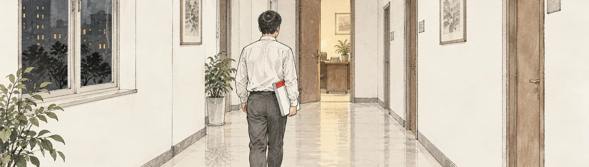

<!DOCTYPE html>
<html lang="zh-CN">
<head>
<meta charset="utf-8">
<meta name="viewport" content="width=device-width,initial-scale=1,viewport-fit=cover">
<meta name="theme-color" content="#F3F2EE">
<title>大秘</title>
<link rel="icon" href="favicon.ico" sizes="any">
<link rel="icon" type="image/png" sizes="32x32" href="icon/icon-32.png">
<link rel="apple-touch-icon" sizes="180x180" href="icon/icon-180.png">
<link rel="manifest" href="site.webmanifest">
<meta name="apple-mobile-web-app-title" content="大秘">
<meta name="apple-mobile-web-app-capable" content="yes">
<meta name="apple-mobile-web-app-status-bar-style" content="default">
<meta name="mobile-web-app-capable" content="yes">
<style>
/* === main.css === */
/* 《大秘》v2 皮：文件纸底、墨色字、红头红章 */
:root{
  --paper:#F3F2EE; --paper2:#EAE7DF; --ink:#1E1B17; --ink2:#4A443C;
  --ink3:#8A8073; --line:#CFC9BC; --line2:#E2DDD2;
  --red:#9B2A1F; --red2:#C0392B; --redbg:#F4E4E0;
  --boss:#23303F; --bossbg:#E3E6EA; --mid:#9A9387;
  --song:"Songti SC","STSong","SimSun","Noto Serif CJK SC",serif;
  --hei:"PingFang SC","Hiragino Sans GB","Microsoft YaHei",system-ui,sans-serif;
}
*{box-sizing:border-box;-webkit-tap-highlight-color:transparent}
html,body{margin:0;padding:0;background:var(--paper);color:var(--ink);font-family:var(--hei);font-size:16px;line-height:1.7;-webkit-text-size-adjust:100%}
button{font-family:inherit;font-size:inherit;color:inherit}
#app{max-width:1080px;margin:0 auto;padding:0 16px 100px;min-height:100vh}
.dim{color:var(--ink3)}
.red{color:var(--red)}

.letterhead{text-align:center;padding:16px 0 4px}
.letterhead h1{margin:0;font-family:var(--song);font-size:28px;font-weight:700;color:var(--red);letter-spacing:.3em;text-indent:.3em}
.letterhead .rule{border-top:2.5px solid var(--red);margin:10px 0 0}
.letterhead .rule2{border-top:1px solid var(--red);margin:2px 0 0}

.datebar{display:flex;flex-wrap:wrap;gap:4px 14px;align-items:baseline;padding:8px 2px;font-size:13px;color:var(--ink2)}
.datebar b{font-family:var(--song);font-size:17px;color:var(--ink)}
.datebar .me{margin-left:auto;color:var(--ink3)}

/* 拔河条 */
.tug{display:flex;align-items:center;gap:10px;margin:4px 0 6px;font-family:var(--song);font-size:14px}
.tug .l{color:var(--boss);font-weight:700}.tug .r{color:var(--red);font-weight:700}
.tug .bar{flex:1;height:10px;background:var(--red);position:relative;border:1px solid var(--line)}
.tug .bar i{position:absolute;left:0;top:0;bottom:0;background:var(--boss);transition:width .6s}
.tug .bar em{position:absolute;top:-4px;width:2px;height:16px;background:var(--paper);border:1px solid var(--ink);margin-left:-2px;transition:left .6s}
.res{display:flex;gap:18px;font-size:13px;color:var(--ink2);padding:2px 2px 6px}
.res b{font-family:var(--song);font-size:17px;color:var(--ink);margin-left:3px}

/* 票面 */
.votes{display:grid;grid-template-columns:repeat(11,1fr);gap:4px;margin:4px 0 12px}
.vote{border:0;padding:4px 0 3px;background:var(--paper2);cursor:pointer;display:flex;flex-direction:column;align-items:center;border-bottom:4px solid var(--mid);min-width:0}
.vote i{font-style:normal;font-size:11px;color:var(--ink2);white-space:nowrap;overflow:hidden;max-width:100%}
.vote.t2{border-color:var(--boss);background:var(--bossbg)}
.vote.t1{border-color:#5E6B7A}
.vote.t0{border-color:var(--mid)}
.vote.tm1{border-color:#C98A80}
.vote.tm2{border-color:var(--red);background:var(--redbg)}

.face{position:relative;display:inline-block;width:40px;height:52px;overflow:hidden;background:var(--paper2);border:1px solid var(--line);flex:0 0 auto}
.face img{width:100%;height:100%;object-fit:cover;display:block}
.face b{display:none}
.face.noimg b,.face.vac b{display:flex;align-items:center;justify-content:center;width:100%;height:100%;font-family:var(--song);font-size:18px;color:var(--ink2)}
.face.vac{border-style:dashed;background:none}
.face.sm{width:30px;height:38px}
.face.sm.noimg b,.face.sm.vac b{font-size:14px}
.vote .face.sm{width:28px;height:36px}

.panel{border:1px solid var(--line);background:var(--paper);margin-bottom:14px}
.panel>h3{margin:0;padding:8px 12px;font-family:var(--song);font-size:15px;border-bottom:1px solid var(--line2);background:var(--paper2);letter-spacing:.06em;display:flex;justify-content:space-between}
.cnt{font-family:var(--hei);font-weight:400;font-size:13px;color:var(--red)}
.report{padding:10px 14px}
.report p,.prose p,.dlist p{margin:0 0 8px;font-family:var(--song);font-size:15.5px;line-height:1.85}
.report .sep{border-top:1px dashed var(--line);margin:8px 0}
.grid2{display:grid;grid-template-columns:1fr 1fr;gap:14px}
.grid2 .panel{margin-bottom:0}
.due{margin:14px 0;padding:10px 14px;border-left:3px solid var(--red);background:var(--redbg);font-family:var(--song);font-size:14px}

/* 场景 */
.doc .banner{height:96px;overflow:hidden;border-bottom:1px solid var(--line2)}
.doc .banner img{width:100%;height:100%;object-fit:cover;display:block}
.docin{padding:14px 18px 16px;position:relative}
.docface{position:absolute;right:18px;top:14px}
.doc .no{font-family:var(--song);font-size:13px;color:var(--red);border-bottom:1px solid var(--red);padding-bottom:5px;margin:0 56px 10px 0}
.doc h2{margin:0 0 10px;font-family:var(--song);font-size:21px}
.prose p{text-indent:2em}
.opts{display:flex;flex-direction:column;gap:8px;margin-top:12px}
.opt{text-align:left;background:var(--paper);border:1px solid var(--line);padding:10px 14px;cursor:pointer;min-height:46px;font-family:var(--song);font-size:15.5px}
.opt:hover{border-color:var(--ink2);background:#EFEDE6}
.opt.gray{border-left:3px solid var(--red)}
.opt[disabled]{opacity:.5;cursor:not-allowed}
.opt .n{display:block;font-family:var(--hei);font-size:12.5px;color:var(--ink3);margin-top:2px}
.result{position:relative;margin-top:12px;padding:12px 14px;background:var(--paper2);border:1px solid var(--line)}
.result .chosen{font-family:var(--song);color:var(--ink2);font-size:14px;margin-bottom:8px;padding-right:70px}
.result p{font-family:var(--song);margin:0 0 6px;line-height:1.85}
.stamp{position:absolute;right:12px;top:8px;border:2px solid var(--red);color:var(--red);font-family:var(--song);font-weight:700;padding:2px 8px;transform:rotate(-8deg);animation:stamp .35s ease-out}
@keyframes stamp{0%{transform:scale(2.2) rotate(-8deg);opacity:0}100%{transform:scale(1) rotate(-8deg);opacity:1}}
.got{font-size:13px;color:var(--red);margin-top:4px}
.got.bad{font-weight:700}

.acts{display:grid;grid-template-columns:1fr 1fr;gap:6px;padding:10px}
.act{text-align:left;border:1px solid var(--line);background:var(--paper);padding:8px 10px;cursor:pointer;min-height:52px}
.act b{display:block;font-family:var(--song);font-size:15.5px}
.act span{display:block;font-size:12px;color:var(--ink3);line-height:1.4}
.act:hover{border-color:var(--ink2)}
.act[disabled]{opacity:.4;cursor:not-allowed}
.dlist{border-top:1px solid var(--line2);padding:6px 12px 10px}
.ditem{padding:8px 0;border-bottom:1px dashed var(--line2)}
.ditem:last-child{border-bottom:0}
.ditem>b{font-size:13px;color:var(--ink2);display:block;margin-bottom:3px}
.remark{font-family:"Kaiti SC","STKaiti","KaiTi",var(--song);font-size:18px;color:var(--red);margin:2px 0 4px}
.remark.no{color:var(--ink2)}

/* 位子 */
.pgrp{padding:8px 12px 2px;font-size:12px;color:var(--ink3);letter-spacing:.2em}
.posts{display:grid;grid-template-columns:repeat(auto-fill,minmax(150px,1fr));gap:6px;padding:6px 12px 12px}
.post{display:grid;grid-template-columns:32px 1fr;grid-template-rows:auto auto auto;column-gap:8px;text-align:left;border:1px solid var(--line);background:var(--paper);padding:6px 8px;cursor:pointer;border-left:4px solid var(--mid);min-height:54px}
.post .face{grid-row:1/4}
.post .pn{font-size:12px;color:var(--ink3);line-height:1.3}
.post .ph{font-family:var(--song);font-size:15px;line-height:1.3}
.post .pnom{font-size:11px;color:var(--red)}
.post.c-boss{border-left-color:var(--boss);background:var(--bossbg)}
.post.c-mayor{border-left-color:var(--red);background:var(--redbg)}
.post.c-vac{border-left-style:dashed;border-left-color:var(--ink3)}

/* 人 */
.cards{display:grid;grid-template-columns:repeat(auto-fill,minmax(220px,1fr));gap:8px;padding:10px}
.card{position:relative;border:1px solid var(--line);background:var(--paper);padding:10px 12px 10px 60px;min-height:74px;border-left:4px solid var(--mid);cursor:pointer}
.card>.face{position:absolute;left:10px;top:10px}
.card .n{font-family:var(--song);font-size:16px;font-weight:700}
.card .p{font-size:12px;color:var(--ink3)}
.card .tier{font-size:12px;color:var(--ink2);margin-top:2px}
.card .l{font-size:13px;color:var(--ink2);margin-top:4px;font-family:var(--song)}
.card .want{font-size:12.5px;margin-top:4px;padding-left:10px;border-left:2px solid var(--red);color:var(--ink)}
.card .want.done{border-color:var(--boss);color:var(--ink3);text-decoration:line-through}
.card .want.bot{border-color:var(--ink);font-weight:700}
.card .tags{margin-top:4px}
.card .tags i{font-style:normal;font-size:11.5px;border:1px solid var(--line);padding:0 5px;margin:0 4px 3px 0;display:inline-block;color:var(--ink2)}
.card .grip{font-size:12.5px;color:var(--red);margin-top:4px}
.card .loyal{height:3px;background:var(--line2);margin-top:6px}
.card .loyal span{display:block;height:3px;background:var(--boss)}
.card.t2,.card.c-boss{border-left-color:var(--boss)}
.card.t1{border-left-color:#5E6B7A}
.card.tm1{border-left-color:#C98A80}
.card.tm2,.card.c-mayor{border-left-color:var(--red)}
.card.gone{opacity:.5;text-decoration:line-through}

.flist{padding:10px 14px;font-size:14px}
.flist>div{padding:3px 0;border-bottom:1px dashed var(--line2)}
.flist i{font-style:normal;color:var(--ink3);font-size:12px;margin-right:6px}
.flist .st{color:var(--red);font-size:12px}
.remarks div{font-family:"Kaiti SC","STKaiti","KaiTi",var(--song);font-size:16px;color:var(--red)}
.dex{display:flex;flex-wrap:wrap;gap:6px;padding:10px 14px}
.dex span{border:1px solid var(--line);padding:3px 10px;font-family:var(--song);font-size:13px;color:var(--ink3)}
.dex span.on{border-color:var(--red);color:var(--red)}
.sv{display:flex;gap:8px;padding:10px 14px;flex-wrap:wrap}

.btn{display:inline-flex;align-items:center;justify-content:center;min-height:42px;padding:0 18px;border:1px solid var(--line);background:var(--paper);cursor:pointer;font-family:var(--song);font-size:15px}
.btn.red{background:var(--red);border-color:var(--red);color:#fff}
.btn.ghost{background:none;color:var(--ink2)}

/* 页签 */
.tabs{position:fixed;left:0;right:0;bottom:0;background:var(--paper);border-top:1px solid var(--line);z-index:20;padding-bottom:env(safe-area-inset-bottom)}
.tabs .inner{max-width:1080px;margin:0 auto;display:flex}
.tab{flex:1;background:none;border:0;border-right:1px solid var(--line2);padding:12px 4px;cursor:pointer;font-size:15px;color:var(--ink2);min-height:50px}
.tab.on{color:var(--red);font-weight:700;box-shadow:inset 0 -3px 0 var(--red)}
.endmo{flex:0 0 auto;background:var(--red);color:#fff;border:0;padding:0 22px;font-weight:700;cursor:pointer;min-height:50px;font-family:var(--song);letter-spacing:.1em}
.endmo[disabled]{background:var(--ink3);cursor:not-allowed}

/* 弹窗 */
.mask{position:fixed;inset:0;background:rgba(30,27,23,.45);z-index:50;display:flex;align-items:center;justify-content:center;padding:16px}
.modal{background:var(--paper);border:1px solid var(--line);max-width:560px;width:100%;max-height:86vh;overflow:auto;padding:16px 18px;box-shadow:0 10px 30px rgba(0,0,0,.2)}
.modal h3{margin:0 0 10px;font-family:var(--song);font-size:18px}
.modal .use{font-family:var(--song);color:var(--ink2);margin:0 0 10px}
.plist{display:flex;flex-direction:column;gap:6px}
.pitem{display:flex;align-items:center;gap:10px;text-align:left;border:1px solid var(--line);background:var(--paper);padding:6px 10px;cursor:pointer;min-height:48px}
.pitem:hover{border-color:var(--ink2)}
.pitem.dis{opacity:.45}
.pitem .pt b{display:block;font-family:var(--song);font-size:15px;font-weight:400}
.pitem .pt i{display:block;font-style:normal;font-size:12px;color:var(--ink3)}
.mfoot{display:flex;justify-content:flex-end;gap:8px;margin-top:14px}
.pcard .card{cursor:default}
.mhead{font-family:var(--song);color:var(--red);font-size:13px;border-bottom:1px solid var(--red);padding-bottom:4px;margin-bottom:8px;letter-spacing:.2em}
.mgrid{display:grid;grid-template-columns:repeat(auto-fill,minmax(92px,1fr));gap:6px}
.mv{display:flex;flex-direction:column;align-items:center;padding:6px 2px;border:1px solid var(--line);border-bottom:4px solid var(--mid);transition:background .3s}
.mv b{font-family:var(--song);font-size:13px;font-weight:400;margin-top:3px}
.mv i{font-style:normal;font-size:11px;color:var(--ink3)}
.mv.t2{border-bottom-color:var(--boss)}.mv.t1{border-bottom-color:#5E6B7A}.mv.tm1{border-bottom-color:#C98A80}.mv.tm2{border-bottom-color:var(--red)}
.mv.yes{background:var(--bossbg)}.mv.yes i{color:var(--boss);font-weight:700}
.mv.no{background:var(--redbg)}.mv.no i{color:var(--red);font-weight:700}
.vcount{font-family:var(--song);font-size:20px;text-align:center;margin-top:12px;color:var(--red)}
.hrrows .hr{display:grid;grid-template-columns:120px 32px 1fr auto;gap:8px;align-items:center;padding:6px 0;border-bottom:1px dashed var(--line2);font-size:14px}
.hrrows .hr b{font-family:var(--song);font-weight:400;font-size:14px}
.hrrows .hr i{font-style:normal;font-size:12px;color:var(--ink3)}
.hrrows .hr em{font-style:normal;font-size:13px}
.hrrows .hr.ok em{color:var(--boss)}.hrrows .hr.fail em{color:var(--red)}

/* 封面、结局 */
.titlepage,.endpage{max-width:640px;margin:0 auto;padding-bottom:40px}
.cover{margin:14px 0 6px}.cover img{width:100%;height:auto;display:block}
.gname{font-family:var(--song);font-size:40px;text-align:center;margin:18px 0 8px;letter-spacing:.2em}
.tp-text p{font-family:var(--song);text-align:center;margin:4px 0;color:var(--ink2)}
.namerow{text-align:center;font-family:var(--song);font-size:18px;margin:22px 0}
.namerow input{width:3.2em;font-family:var(--song);font-size:18px;border:0;border-bottom:1px solid var(--ink);background:none;text-align:center;padding:2px}
.tp-btns{display:flex;gap:10px;justify-content:center;flex-wrap:wrap;margin:16px 0}
.tp-dex,.tp-foot{text-align:center;font-size:13px;color:var(--ink3);margin-top:8px}
.tp-foot a{color:var(--ink3)}
.endimg img{width:100%;height:auto;display:block;border-bottom:2px solid var(--red)}
.docno{text-align:right;font-family:var(--song);color:var(--red);font-size:13px;margin:14px 0 4px}
.endpage h2{font-family:var(--song);font-size:30px;text-align:center;margin:6px 0 16px;letter-spacing:.2em}
.endpage .prose p{font-size:16px}
.endpage .after{margin-top:14px;color:var(--ink2);border-top:1px solid var(--line2);padding-top:12px}

@media (max-width:760px){
  #app{padding:0 12px 96px}
  .letterhead h1{font-size:22px}
  .grid2{grid-template-columns:1fr}
  .votes{gap:2px}
  .vote i{font-size:10px}
  .vote .face.sm{width:24px;height:31px}
  .acts{grid-template-columns:1fr 1fr}
  .doc .banner{height:64px}
  .docin{padding:12px 14px}
  .posts{grid-template-columns:1fr 1fr}
  .cards{grid-template-columns:1fr}
  .tab{font-size:14px;padding:10px 2px}
  .endmo{padding:0 12px;font-size:14px}
  .hrrows .hr{grid-template-columns:90px 32px 1fr;}
  .hrrows .hr em{grid-column:3}
}
@media (max-width:400px){
  .vote i{display:none}
}

/* 装到桌面 */
.inst-mask{position:fixed;inset:0;background:rgba(30,28,26,.45);display:flex;align-items:center;justify-content:center;z-index:60;padding:16px}
.inst-box{background:#F7F6F3;border:1px solid #C9C4BA;box-shadow:0 8px 28px rgba(0,0,0,.18);max-width:380px;width:100%;padding:20px 22px}
.inst-box h3{margin:0 0 10px;font-family:var(--song);font-size:19px;color:#6E1414}
.inst-box p{margin:0 0 16px;font-size:14px;line-height:1.75;color:#3A3733}
.inst-row{display:flex;gap:10px;justify-content:flex-end}
.inst-row button{min-height:40px;padding:0 18px;font-size:14px;border:1px solid #C9C4BA;background:#F7F6F3;cursor:pointer}
.inst-row .inst-yes{background:#8C1F1F;border-color:#8C1F1F;color:#F6F3EE}
@media (max-width:760px){ .inst-row{justify-content:stretch} .inst-row button{flex:1} }

/* ── 呈书记 / 你的事 ── */
.panel.boss,.panel.mine{margin-bottom:14px}
.panel h3 .ttl{display:flex;align-items:center;gap:8px}
.panel h3 .ttl .face.sm{width:24px;height:31px}
.panel.boss>h3{background:var(--redbg);border-bottom-color:#E4C9C3}
.tiles{display:grid;gap:8px;padding:12px}
.tiles.t6{grid-template-columns:repeat(6,1fr)}
.tiles.t8{grid-template-columns:repeat(8,1fr)}
.tile{display:flex;flex-direction:column;align-items:center;justify-content:center;text-align:center;border:1px solid var(--line);background:var(--paper);padding:10px 4px;min-height:74px;cursor:pointer}
.tile b{font-family:var(--song);font-size:18px;letter-spacing:.15em;text-indent:.15em;line-height:1.3}
.tile span{font-size:11.5px;color:var(--ink3);line-height:1.35;margin-top:4px}
.tile:hover{border-color:var(--ink2);background:#EFEDE6}
.panel.boss .tile:hover{border-color:var(--red)}
.tile[disabled]{opacity:.4;cursor:not-allowed}

.cpjs{border-top:1px solid var(--line2);padding:10px 12px;display:flex;flex-direction:column;gap:10px}
.cpj{border:1px solid var(--line);background:#FBFAF7;padding:10px 12px 8px}
.cpj-no{font-family:var(--song);font-size:12.5px;color:var(--red);border-bottom:1px solid var(--red);padding-bottom:4px;margin-bottom:6px;text-align:right}
.cpj-row{display:grid;grid-template-columns:40px 1fr;gap:8px;padding:4px 0;border-bottom:1px dashed var(--line2)}
.cpj-row:last-child{border-bottom:0}
.cpj-row>i{font-style:normal;font-size:12px;color:var(--ink3);letter-spacing:.1em;padding-top:3px}
.cpj-row>span{font-size:14px}
.cpj .remark{margin:0;font-size:19px}
.cpj-act p{margin:0 0 4px;font-family:var(--song);font-size:15px;line-height:1.8}
.cpj-fin{font-family:var(--song);font-weight:700}
.cpj-fin.ok{color:var(--boss)}.cpj-fin.alt{color:#8A6D3B}.cpj-fin.no{color:var(--ink3)}
.card .rel{font-size:12px;color:var(--red);margin-top:2px}
.pitem.hot{border-color:var(--red);background:var(--redbg)}

@media (max-width:760px){
  .tiles.t6{grid-template-columns:repeat(3,1fr)}
  .tiles.t8{grid-template-columns:repeat(4,1fr)}
  .tile{min-height:64px;padding:8px 2px}
  .tile b{font-size:16px}
  .tile span{font-size:10.5px}
}
.card .lv{font-size:11.5px;color:var(--ink3)}
.post .pn em{font-style:normal;margin-left:6px;font-size:11px;padding:0 4px;border:1px solid var(--line);color:var(--ink2)}
.modal h3 small{font-family:var(--hei);font-size:12px;color:var(--ink3);margin-left:8px;font-weight:400}
.pitem .mk{font-style:normal;font-family:var(--hei);font-size:11.5px;margin-left:8px;padding:0 6px;border:1px solid var(--line);vertical-align:1px}
.pitem .mk.m0{color:var(--ink2)}
.pitem .mk.m1{color:var(--boss);border-color:#9AA5B1}
.pitem .mk.m2{color:var(--red);border-color:#D9A79F}
.doc.side{border-left:3px solid var(--ink3)}
.doc.side .no{color:var(--ink2);border-bottom-color:var(--ink3)}
.doc.side h2{font-size:18px}
.due .tintro{font-size:14px;color:var(--ink2);margin:4px 0 2px;line-height:1.75}
.post .pn em{white-space:nowrap;display:inline-block}
.toast{position:fixed;left:50%;bottom:80px;transform:translateX(-50%);background:var(--ink);color:#fff;padding:8px 16px;font-size:14px;z-index:70}
@media (max-width:480px){
  .letterhead{padding:10px 0 2px}
  .letterhead h1{font-size:20px}
  .letterhead .rule{margin-top:6px}
  .datebar{padding:6px 2px;font-size:12px;gap:2px 10px}
  .datebar b{font-size:15px}
  .tug{margin:2px 0 4px;font-size:13px}
  .res{font-size:12px;gap:14px;padding:0 2px 4px}
  .res b{font-size:15px}
  .votes{margin:2px 0 10px}
  .docin{padding:10px 12px 12px}
  .doc h2{font-size:19px}
  .report p,.prose p{font-size:15px}
}
.panel.dept>h3{background:#EDE7DC;border-bottom-color:#D8D0C0}
.deptwrap{padding:10px 12px;display:flex;flex-direction:column;gap:10px}
.deptbox{border:1px solid var(--line2)}
.deptn{padding:5px 10px;font-family:var(--song);font-size:14px;background:var(--paper2);border-bottom:1px solid var(--line2)}
.deptn i{font-style:normal;font-size:11px;color:var(--ink3)}
.deptbox .tiles{grid-template-columns:repeat(auto-fill,minmax(120px,1fr));padding:8px}
.tile.op{min-height:56px}
.tile.op b em{font-style:normal;font-size:10px;color:var(--red);border:1px solid var(--red);padding:0 3px;margin-left:4px;vertical-align:2px}
.tile.op.gray{border-left:3px solid var(--red)}
@media (max-width:480px){ .deptbox .tiles{grid-template-columns:1fr 1fr} }

</style>
</head>
<body>
<div id="app"></div>
<script>
/* 大秘 build 2026-09-28 03:27 */
"use strict";
/* === data/d10-people.js === */
/* ── 人：常委十一个 + 干部池。
   side：真实倾向 -100~100，正数向书记。常委的 side 就是票面。
   干部的 show：玩家以为的倾向（暗桩的 show 跟 side 不一样）。
   lvl：1 科级 2 副处 3 正处 4 副厅。cap：1 平平 2 能干 3 一把好手。
   dirt：有没有污点。amb：野心 1 给个位子就满足 2 还想往上 3 胃口大。 ── */

/* 班子排序 */
var STANDING = ['boss','mayor','depsec','vice1','jiwei','zuzhi','zhengfa','xuanchuan','tongzhan','mishuzhang','gaoxin'];

var PEOPLE_DEF = [
  /* ── 常委 ── */
  { id:'boss', n:'周维安', p:'市委书记', lvl:5, side:100, fixed:1, cw:1,
    line:'53 岁。邻省调任，此前任邻省江城市市长，在开发区工作过八年' },
  { id:'gaoxin', n:'吴敬之', p:'高新区委书记', lvl:4, side:85, cw:1, area:'gaoxin',
    line:'49 岁。此前任江城开发区管委会主任，随周维安交流到云州。市委常委、高新区委书记',
    wants:[
      { id:'wu_kq', t:'高新区要扩区，东边那两千亩地卡在自然资源局', kind:'post', post:'ziran', gain:10 },
      { id:'wu_fu', t:'他走了以后，高新区得有人接得住', kind:'post', post:'gx_qz', gain:6 }
    ] },
  { id:'depsec', n:'罗明川', p:'市委副书记', lvl:4, side:0, cw:1, bottom:'hr',
    line:'50 岁。省委办公厅出身，前年下派云州任市委副书记，分管党群和农业农村',
    wants:[
      { id:'luo_mayor', t:'他想接市长。这话他一个字也没说过', kind:'promise', gain:38, pkey:'mayor_seat' },
      { id:'luo_calm', t:'不想站队太早。谁先逼他表态，他就往另一边靠', kind:'note', gain:0 }
    ] },
  { id:'jiwei', n:'宋自强', p:'纪委书记', lvl:4, side:5, cw:1, nodeal:1,
    line:'54 岁。省纪委交流任职，此前任省纪委一个室的主任。任云州市纪委书记三年',
    wants:[
      { id:'song_case', t:'他不要位子也不要钱。他要案子', kind:'case', gain:12 },
      { id:'song_hand', t:'纪委副书记那个位子上，他要一个肯干活的人', kind:'post', post:'jw_fu', gain:10 }
    ] },
  { id:'zuzhi', n:'佟建民', p:'组织部长', lvl:4, side:0, cw:1,
    line:'58 岁。云州本地人，组工干部出身，任组织部长五年',
    wants:[
      { id:'tong_rd', t:'快到点了，想去人大，体面地退', kind:'promise', gain:15, pkey:'tong_rd' },
      { id:'tong_men', t:'两个老部下郭怀山、晏平，在组织部当处长多年，他想让他们下去当个一把手', kind:'place', ids:['guohs','yanping'], gain:9 }
    ] },
  { id:'xuanchuan', n:'方静仪', p:'宣传部长', lvl:4, side:0, cw:1,
    line:'51 岁。省报记者出身，任宣传部长四年，分管宣传、网信、文化',
    wants:[
      { id:'fang_media', t:'融媒体中心那笔钱，年年报年年砍', kind:'money', cost:1, gain:10 },
      { id:'fang_hus', t:'她爱人周启明当了九年教育局副局长。教育局长的位子一空，她会盯着', kind:'place', ids:['zhouqm'], post:'jiaoyu', gain:14 }
    ] },
  { id:'mishuzhang', n:'邱仲华', p:'秘书长', lvl:4, side:-20, cw:1, bottom:'cui',
    line:'56 岁。前任市委书记的秘书出身，在市委办工作二十年，任秘书长四年',
    wants:[
      { id:'qiu_cui', t:'前任秘书崔延平是他带出来的。谁动崔延平，他跟谁拼', kind:'promise', gain:16, pkey:'keep_cui' },
      { id:'qiu_feng', t:'他的秘书冯小舟跟了他六年，他想给冯小舟找个实职', kind:'place', ids:['msz_mishu'], gain:10 }
    ] },
  { id:'tongzhan', n:'纪守望', p:'统战部长', lvl:4, side:-5, cw:1,
    line:'57 岁。任统战部长六年，分管统战、工商联、侨务',
    wants:[
      { id:'ji_shh', t:'商会那几个老板有个物流园的项目，递了一年没人批', kind:'money', cost:1, gain:10 },
      { id:'ji_ql', t:'侨联那栋楼漏雨漏了三年', kind:'money', cost:1, gain:7 }
    ] },
  { id:'zhengfa', n:'韩树声', p:'政法委书记', lvl:4, side:-35, cw:1, bottom:'qc',
    line:'55 岁。公安出身，当过市公安局长，任政法委书记五年',
    wants:[
      { id:'han_ga', t:'公安局长要是他点头的人。他推的是郭振川', kind:'post', post:'gongan', gain:14 },
      { id:'han_qc', t:'青川那件事，谁也别翻', kind:'promise', gain:15, pkey:'no_qc' }
    ] },
  { id:'vice1', n:'高振邦', p:'常务副市长', lvl:4, side:-60, cw:1, gripOnly:1,
    line:'55 岁。云州本地人，财政局长出身，任常务副市长六年，分管财政、国资、卫健',
    wants:[
      { id:'gao_mayor', t:'他也想接市长。他会说是替云州着急', kind:'promise', gain:20, pkey:'mayor_seat' }
    ] },
  { id:'mayor', n:'陈立群', p:'市长', lvl:5, side:-100, fixed:1, cw:1,
    line:'57 岁。在云州工作十四年，历任城关区长、区委书记、常务副市长，任市长四年' },

  /* ── 区县一把手和班子 ── */
  { id:'chengguan', n:'邵国栋', p:'城关区委书记', lvl:3, side:-70, cap:2, age:55, area:'chengguan', dirt:1, amb:2,
    line:'55 岁。陈立群任城关区长时的区政府办主任，任城关区委书记四年' },
  { id:'cg_quzhang', n:'郑大林', p:'城关区长', lvl:3, side:-20, cap:2, age:51, area:'chengguan', dirt:1, amb:3,
    line:'51 岁。城关本地干部，任城关区长三年' },
  { id:'gx_qz', rel:'吴敬之带出来的', n:'陆一帆', p:'高新区长', lvl:3, side:45, cap:3, age:42, area:'gaoxin', dirt:0, amb:2,
    line:'42 岁。高新区招商局长出身，任高新区长两年' },
  { id:'gangkou', n:'崔延平', p:'港口区委书记', lvl:3, side:-5, cap:2, age:54, area:'gangkou', dirt:1, amb:1,
    line:'54 岁。前任市委书记的秘书，任港口区委书记五年' },
  { id:'gk_qz', n:'贾正', p:'港口区长', lvl:3, side:-10, cap:1, age:50, area:'gangkou', dirt:0, amb:1,
    line:'50 岁。港务局出身，任港口区长三年' },
  { id:'qingchuan', n:'马汉江', p:'青川县委书记', lvl:3, side:-60, cap:2, age:53, area:'qingchuan', dirt:1, amb:2,
    line:'53 岁。青川本地人，任青川县委书记六年。任内化工园发生过一起死亡事故' },
  { id:'qc_xianzhang', n:'杜怀远', p:'青川县长', lvl:3, side:5, cap:3, age:47, area:'qingchuan', dirt:0, amb:2,
    line:'47 岁。省里选调生出身，任青川县长两年' },
  { id:'baisha', n:'程一鸣', p:'白沙县委书记', lvl:3, side:30, cap:2, age:38, area:'baisha', dirt:0, amb:3,
    line:'38 岁。省直机关下派，任白沙县委书记一年半' },
  { id:'bs_fuxian', n:'秦振声', p:'白沙县长', lvl:3, side:-35, cap:1, age:56, area:'baisha', dirt:1, amb:1,
    line:'56 岁。白沙本地人，在白沙工作三十年，任县长四年' },
  { id:'meiling', n:'贺兰生', p:'梅岭县委书记', lvl:3, side:0, cap:1, age:59, area:'meiling', dirt:0, amb:1,
    line:'59 岁。任梅岭县委书记七年，明年到龄' },
  { id:'ml_xz', n:'袁晓岚', p:'梅岭县长', lvl:3, side:-10, cap:2, age:45, area:'meiling', dirt:0, amb:2,
    line:'45 岁。市文旅局出身，任梅岭县长两年' },

  /* ── 两办、政法、市直 ── */
  { id:'fuzhuren', n:'施培南', p:'市委办常务副主任', lvl:3, side:-10, cap:2, age:46, area:'shiwei', dirt:0, amb:2,
    line:'46 岁。在市委办工作十五年，任常务副主任三年' },
  { id:'fb_zr', n:'景国梁', p:'市府办主任', lvl:3, side:-65, cap:3, age:49, area:'shifu', dirt:1, amb:2,
    line:'49 岁。长期在市政府办工作，任市府办主任五年' },
  { id:'sz_ms', n:'苏晓东', p:'市长秘书', lvl:2, side:-75, cap:2, age:34, area:'shifu', dirt:0, amb:2,
    line:'34 岁。与你同一年考进机关，任市长秘书四年' },
  { id:'gongan', n:'童大勇', p:'公安局长', lvl:3, side:-30, cap:2, age:52, area:'zhengfa', dirt:0, amb:2,
    line:'52 岁。刑警出身，任公安局长四年' },
  { id:'jcz', n:'石磊', p:'检察长', lvl:4, side:0, cap:2, age:57, area:'zhengfa', dirt:0, amb:1,
    line:'57 岁。省检察院交流任职，任检察长五年，明年期满' },
  { id:'jw_fu', n:'林默', p:'纪委副书记', lvl:3, side:5, cap:2, age:50, area:'jiwei', dirt:0, amb:1,
    line:'50 岁。纪检干部出身，任纪委副书记三年' },
  { id:'caizheng', n:'阮学文', p:'财政局长', lvl:3, side:-40, cap:3, age:54, area:'shizhi', dirt:1, amb:1,
    line:'54 岁。财政系统干部，任财政局长六年' },
  { id:'fagai', n:'曹世昌', p:'发改委主任', lvl:3, side:5, cap:3, age:53, area:'shizhi', dirt:0, amb:2,
    line:'53 岁。经济学硕士，任发改委主任五年' },
  { id:'zhujian', n:'卢志高', p:'住建局长', lvl:3, side:-50, cap:1, age:50, area:'shizhi', dirt:1, amb:3,
    line:'50 岁。建筑公司出身，任住建局长四年' },
  { id:'shenji', n:'许海峰', p:'审计局长', lvl:3, side:-5, cap:2, age:55, area:'shizhi', dirt:0, amb:1,
    line:'55 岁。在审计系统工作三十年，任审计局长六年' },
  { id:'ziran', n:'孟广仁', p:'自然资源局长', lvl:3, side:-35, cap:2, age:51, area:'shizhi', dirt:1, amb:2,
    line:'51 岁。国土系统干部，任自然资源局长三年' },
  { id:'jiaoyu', n:'杜秉文', p:'教育局长', lvl:3, side:-10, cap:1, age:58, area:'shizhi', dirt:0, amb:1,
    line:'58 岁。中学校长出身，任教育局长七年，明年到龄' },
  { id:'weijian', n:'冷秋实', p:'卫健委主任', lvl:3, side:-25, cap:2, age:52, area:'shizhi', dirt:1, amb:1,
    line:'52 岁。医院院长出身，任卫健委主任四年' },
  { id:'xinfang', n:'马春来', p:'信访局长', lvl:3, side:-20, cap:1, age:54, area:'shizhi', dirt:0, amb:1,
    line:'54 岁。任信访局长五年' },
  { id:'guozi', n:'尹立本', p:'国资委主任', lvl:3, side:0, cap:1, age:58, area:'shizhi', dirt:1, amb:1,
    line:'58 岁。港口国企厂长出身，任国资委主任九年' },

  { id:'wanhz', n:'万海舟', p:'纪委常委', lvl:2, side:-25, cap:2, age:44, area:'zhengfa', dirt:0, amb:2,
    line:'44 岁。公安转纪检，在政法委工作过六年，任纪委常委两年' },
  { id:'yanlw', n:'严立文', p:'日报社总编辑', lvl:3, side:-35, cap:2, age:52, area:'shizhi', dirt:1, amb:1,
    line:'52 岁。跑了十五年市政府口的记者，任日报社总编辑五年' },
  { id:'zengf', n:'曾凡', p:'广电台长', lvl:3, side:0, cap:2, age:47, area:'shizhi', dirt:0, amb:2,
    line:'47 岁。播音员出身，任广电台长三年' },

  /* ── 苗子（开局不在任何要害位子上） ── */
  { id:'keshang', n:'葛守业', p:'市委办综合科科长', lvl:2, side:10, cap:2, age:44, area:'shiwei', dirt:0, amb:2, cand:1,
    line:'44 岁。市委办综合科科长，你原来的科长' },
  { id:'msz_mishu', rel:'邱仲华的秘书', n:'冯小舟', p:'秘书长的秘书', lvl:2, side:-5, cap:2, age:32, area:'shiwei', dirt:0, amb:2,
    line:'32 岁。邱仲华的秘书，跟了六年' },
  { id:'guazhi', n:'白重远', p:'省发改委处长（挂职）', lvl:3, side:15, cap:3, age:41, area:'shizhi', dirt:0, amb:3,
    line:'41 岁。省发改委处长，在云州挂职市政府副秘书长，挂职期一年' },
  { id:'gk_fuquzhang', n:'蒋明礼', p:'港口区常务副区长', lvl:2, side:-5, cap:2, age:49, area:'gangkou', dirt:1, amb:2,
    line:'49 岁。在港口区工作十二年，任常务副区长四年' },
  { id:'zhouqm', rel:'方静仪的爱人', n:'周启明', p:'教育局副局长', lvl:2, side:0, cap:2, age:50, area:'shizhi', dirt:0, amb:1,
    line:'50 岁。方静仪的爱人。任教育局副局长九年' },
  { id:'guohs', rel:'佟建民的老部下', n:'郭怀山', p:'组织部干部一处处长', lvl:2, side:0, cap:2, age:46, area:'shiwei', dirt:0, amb:1,
    line:'46 岁。组织部干部一处处长，佟建民的老部下' },
  { id:'yanping', rel:'佟建民的老部下', n:'晏平', p:'组织部干部二处处长', lvl:2, side:5, cap:2, age:43, area:'shiwei', dirt:0, amb:2,
    line:'43 岁。组织部干部二处处长，佟建民的老部下' },
  { id:'guozc', rel:'韩树声的老部下', n:'郭振川', p:'公安局常务副局长', lvl:2, side:-55, cap:2, age:48, area:'zhengfa', dirt:1, amb:3,
    line:'48 岁。公安局常务副局长，韩树声的老部下' },
  { id:'fangyu', n:'方宇', p:'白沙县副县长', lvl:2, side:20, cap:3, age:35, area:'baisha', dirt:0, amb:2,
    line:'35 岁。选调生，白沙县副县长，分管易地搬迁' },
  { id:'tangjl', n:'唐建林', p:'高新区管委会副主任', lvl:2, side:30, cap:2, age:39, area:'gaoxin', dirt:0, amb:2,
    line:'39 岁。高新区管委会副主任，分管招商' },
  { id:'wuxy', n:'武晓燕', p:'城关区纪委书记', lvl:2, side:10, cap:3, age:44, area:'chengguan', dirt:0, amb:1,
    line:'44 岁。城关区纪委书记。前年查过城关一起拆迁案，案子后来中止' },
  { id:'lihb', n:'李海滨', p:'青川县公安局长', lvl:2, side:-5, cap:2, age:46, area:'qingchuan', dirt:0, amb:1,
    line:'46 岁。青川县公安局长，三年前化工园事故的第一出警人' },
  { id:'qianwj', n:'钱文杰', p:'审计局副局长', lvl:2, side:5, cap:3, age:41, area:'shizhi', dirt:0, amb:2,
    line:'41 岁。审计局副局长，注册会计师出身' },
  { id:'zhangyn', n:'张以宁', p:'市检察院副检察长', lvl:2, side:0, cap:2, age:45, area:'zhengfa', dirt:0, amb:2,
    line:'45 岁。市检察院副检察长，从省检察院交流而来' },
  { id:'heqs', n:'何青松', p:'梅岭县委副书记', lvl:2, side:-15, cap:1, age:52, area:'meiling', dirt:1, amb:2,
    line:'52 岁。梅岭县委副书记，在梅岭工作二十年' },
  { id:'luoy', n:'罗岩', p:'港口区纪委书记', lvl:2, side:5, cap:2, age:47, area:'gangkou', dirt:0, amb:1,
    line:'47 岁。部队转业，任港口区纪委书记四年' },
  { id:'tansh', n:'谭少华', p:'市信访局副局长', lvl:2, side:10, cap:2, age:40, area:'shizhi', dirt:0, amb:2, cand:1,
    line:'40 岁。市信访局副局长' },
  { id:'weiq', n:'韦青', p:'市政府办副主任', lvl:2, side:10, cap:2, age:38, area:'shifu', dirt:0, amb:2, cand:1,
    line:'38 岁。市政府办副主任' },
  { id:'ouym', n:'欧阳明', p:'财政局预算科科长', lvl:1, side:10, cap:3, age:33, area:'shizhi', dirt:0, amb:2, cand:1,
    line:'33 岁。财政局预算科科长' },
  { id:'songjy', n:'宋佳怡', p:'高新区招商局长', lvl:2, side:25, cap:3, age:37, area:'gaoxin', dirt:0, amb:3,
    line:'37 岁。高新区招商局长' },
  { id:'panlei', n:'潘磊', p:'城关区副区长', lvl:2, side:0, cap:2, age:43, area:'chengguan', dirt:1, amb:2,
    line:'43 岁。城关区副区长，分管拆迁' },
  { id:'gaoyf', n:'高亚峰', p:'市委办秘书科科长', lvl:1, side:15, cap:2, age:31, area:'shiwei', dirt:0, amb:1,
    line:'31 岁。市委办秘书科科长，在你手下工作过' },
  { id:'shenlf', n:'沈立峰', p:'市发改委副主任', lvl:2, side:-10, cap:2, age:47, area:'shizhi', dirt:0, amb:2,
    line:'47 岁。发改委副主任' },
  { id:'lvhq', rel:'马汉江的人', n:'吕宏泉', p:'青川县常务副县长', lvl:2, side:-30, cap:1, age:51, area:'qingchuan', dirt:1, amb:1,
    line:'51 岁。青川县常务副县长，马汉江任县长时的县政府办主任' },
  { id:'kongm', n:'孔敏', p:'市卫健委副主任', lvl:2, side:5, cap:2, age:44, area:'shizhi', dirt:0, amb:1,
    line:'44 岁。卫健委副主任，心内科医生出身' }
];

/* 暗桩候选：每局抽两个，side 改成 -60，show 不变 */
var MOLE_CAND = ['keshang', 'fagai', 'tansh', 'weiq', 'ouym'];

/* 区县和口子，下基层用 */
var AREAS = [
  { id:'chengguan', n:'城关区' }, { id:'gaoxin', n:'高新区' }, { id:'gangkou', n:'港口区' },
  { id:'qingchuan', n:'青川县' }, { id:'baisha', n:'白沙县' }, { id:'meiling', n:'梅岭县' },
  { id:'shizhi', n:'市直部门' }, { id:'zhengfa', n:'政法口' }, { id:'shifu', n:'市政府办' }, { id:'shiwei', n:'市委这边' }
];

/* 开局就认识的：常委、区县一把手、市直一把手（在位子上的都认识，但不知道底） */
var FACES = ['boss','mayor','vice1','depsec','jiwei','zuzhi','zhengfa','xuanchuan','mishuzhang','tongzhan','gaoxin',
  'chengguan','gangkou','qingchuan','baisha','meiling','cg_quzhang','qc_xianzhang','bs_fuxian','gk_fuquzhang',
  'fagai','zhujian','caizheng','gongan','guazhi','keshang','msz_mishu','fuzhuren','me','wife','sister'];

/* 常委换人时从这里补。省里派下来的，底子不清楚 */
var NEW_STANDING = [
  { n:'魏长河', line:'52 岁。省直机关交流任职' },
  { n:'严书华', line:'50 岁。省委政研室出身' },
  { n:'柏正阳', line:'54 岁。从邻市调任' },
  { n:'祁志远', line:'48 岁。省委组织部出身' }
];

/* === data/d20-posts.js === */
/* ── 位子：27 格。holder 是开局坐着的人。lvl 是这个位子的级别，
   人的级别比它低一级可以提，低两级是破格。use 是这个位子在自己人手里能干什么 ── */
var POSTS = [
  /* 两办 */
  { id:'sw_fu',  n:'市委办常务副主任', grp:'两办', lvl:3, holder:'fuzhuren',
    use:'市委这边的文件不漏。市长那边想打听你，得先过他' },
  { id:'fb_zr',  n:'市府办主任',       grp:'两办', lvl:3, holder:'fb_zr',
    use:'市长那边的文件从他手上过。市长下个月要干什么，你能早一步知道一半' },
  { id:'sz_ms',  n:'市长秘书',         grp:'两办', lvl:2, holder:'sz_ms', hard:1,
    use:'市长每个月做了什么，你都知道' },
  /* 政法 */
  { id:'gongan', n:'公安局长',         grp:'政法', lvl:3, holder:'gongan',
    use:'查案、护人。你家里的事，没人翻得动' },
  { id:'jcz',    n:'检察长',           grp:'政法', lvl:4, holder:'jcz',
    use:'手里的东西能坐实' },
  { id:'jw_fu',  n:'纪委副书记',       grp:'政法', lvl:3, holder:'jw_fu',
    use:'宋自强办案的那只手。交上去的东西结得快，也能坐实' },
  /* 政法副职：正职在谁手里，副职就是另一只眼睛 */
  { id:'ga_fu',  n:'公安局常务副局长', grp:'政法', lvl:2, holder:'guozc', fu:'gongan',
    use:'正职做什么，他都知道。正职要是对面的人，他能拖一拖，也能把正职的东西一点点攒起来' },
  { id:'jc_fu',  n:'副检察长',         grp:'政法', lvl:2, holder:'zhangyn', fu:'jcz',
    use:'检察院的案子从谁手上过，他看得见' },
  { id:'jw_cw',  n:'纪委常委',         grp:'政法', lvl:2, holder:'wanhz', fu:'jw_fu',
    use:'纪委里的另一张嘴。交上去的东西走到哪一步，他知道' },
  { id:'sj_fu',  n:'审计局副局长',     grp:'政法', lvl:2, holder:'qianwj', fu:'shenji',
    use:'审计组派谁、审谁，他说得上话' },
  /* 宣传 */
  { id:'rb',     n:'日报社总编辑',     grp:'宣传', lvl:3, holder:'yanlw',
    use:'版面给谁。还能往省里递内参' },
  { id:'gd',     n:'广电台长',         grp:'宣传', lvl:3, holder:'zengf',
    use:'晚间新闻头条是谁的镜头' },
  /* 市直 */
  { id:'caizheng', n:'财政局长',       grp:'市直', lvl:3, holder:'caizheng',
    use:'每年开春，书记手里能许出去的钱有多少，看他' },
  { id:'fagai',  n:'发改委主任',       grp:'市直', lvl:3, holder:'fagai',
    use:'项目要他点头。许给常委的项目，他在，一份钱办一件' },
  { id:'zhujian', n:'住建局长',        grp:'市直', lvl:3, holder:'zhujian',
    use:'旧改归他管。工程上的账，他翻得到' },
  { id:'shenji', n:'审计局长',         grp:'市直', lvl:3, holder:'shenji',
    use:'查账。市政府那边的人，挖起来快一倍' },
  { id:'ziran',  n:'自然资源局长',     grp:'市直', lvl:3, holder:'ziran',
    use:'土地。高新区扩区卡在他这儿' },
  { id:'jiaoyu', n:'教育局长',         grp:'市直', lvl:3, holder:'jiaoyu',
    use:'学校的事。方静仪一直盯着这个位子' },
  { id:'weijian', n:'卫健委主任',      grp:'市直', lvl:3, holder:'weijian',
    use:'卫健口的钱和账。高振邦的一半事在这儿' },
  { id:'xinfang', n:'信访局长',        grp:'市直', lvl:3, holder:'xinfang',
    use:'举报信先到他手上。冲你来的信，能压住一封' },
  { id:'guozi',  n:'国资委主任',       grp:'市直', lvl:3, holder:'guozi',
    use:'港口那几家国企。改制那一仗要他' },
  /* 区县 */
  { id:'cg_sj',  n:'城关区委书记',     grp:'区县', lvl:3, holder:'chengguan', area:'chengguan',
    use:'老城、旧改、信访。城关向着谁，旧改就向着谁' },
  { id:'cg_qz',  n:'城关区长',         grp:'区县', lvl:3, holder:'cg_quzhang', area:'chengguan', use:'城关的另一半' },
  { id:'gx_sj',  n:'高新区委书记',     grp:'区县', lvl:3, holder:'gaoxin', area:'gaoxin', locked:1,
    use:'招商。吴敬之兼着' },
  { id:'gx_qz',  n:'高新区长',         grp:'区县', lvl:3, holder:'gx_qz', area:'gaoxin', use:'高新区的日常' },
  { id:'gk_sj',  n:'港口区委书记',     grp:'区县', lvl:3, holder:'gangkou', area:'gangkou',
    use:'港口、国企。崔延平那本账在这儿' },
  { id:'gk_qz',  n:'港口区长',         grp:'区县', lvl:3, holder:'gk_qz', area:'gangkou', use:'港口的另一半' },
  { id:'qc_sj',  n:'青川县委书记',     grp:'区县', lvl:3, holder:'qingchuan', area:'qingchuan',
    use:'矿、化工园。青川那件事捂在这儿' },
  { id:'qc_xz',  n:'青川县长',         grp:'区县', lvl:3, holder:'qc_xianzhang', area:'qingchuan', use:'青川的另一半' },
  { id:'bs_sj',  n:'白沙县委书记',     grp:'区县', lvl:3, holder:'baisha', area:'baisha', use:'农业、搬迁' },
  { id:'bs_xz',  n:'白沙县长',         grp:'区县', lvl:3, holder:'bs_fuxian', area:'baisha', use:'白沙的另一半' },
  { id:'ml_sj',  n:'梅岭县委书记',     grp:'区县', lvl:3, holder:'meiling', area:'meiling', use:'文旅、生态红线' },
  { id:'ml_xz',  n:'梅岭县长',         grp:'区县', lvl:3, holder:'ml_xz', area:'meiling', use:'梅岭的另一半' }
];

/* 到点就空出来的位子：月份、谁走、走的那一句 */
var RETIRE = [
  { mo:10, post:'ml_sj', t:'贺兰生到点了。县里给他开了个座谈会，他讲了四十分钟梅岭的山' },
  { mo:12, post:'jw_fu', t:'林默调省纪委。宋自强送他到楼下，回来的时候说了一句：「换个快的。」' },
  { mo:14, post:'jiaoyu', t:'杜秉文到龄。交接那天他把办公室的钥匙放在桌上，一串十一把' },
  { mo:16, post:'guozi', t:'尹立本退二线。他在国资委干了九年，走的时候说港口那几家厂的事，以后跟他没关系了' },
  { mo:21, post:'jcz', t:'石磊任期满，回省检察院。临走前他来市委转了一圈，跟谁都握了手' },
  { mo:29, post:'shenji', t:'许海峰到龄。他说审了三十年账，最后一本是他自己的退休金' },
  { mo:34, post:'gk_qz', t:'贾正调港务集团当董事长。港口区给他开了个欢送会，他讲了三分钟，最后一句是谢谢大家' },
  { mo:39, post:'xinfang', t:'马春来到龄。信访局的人给他办了个茶话会，来了一个老上访户，送了他一面锦旗' },
  { mo:45, post:'weijian', t:'冷秋实调省卫健委。走之前，他把卫健口这几年的账交接得清清楚楚' },
  { mo:51, post:'fagai', t:'曹世昌调省发改委。临走请发改委的人吃了顿饭，一桌十二个人，喝掉了四瓶酒' }
];

/* 调整会：每季度第二个月 */
var HR_MONTHS = [2, 5, 8, 11, 14, 17, 20, 23, 26, 29, 32, 35, 38, 41, 44, 47, 50, 53, 56, 59];

/* === data/d30-scenes.js === */
/* ── 场景：每个月一场戏。交锋按月份写死，空月份从 FILLERS 里挑。
   opts: t 你说的话/做的事；fx 效果；fn 额外逻辑；req 条件；no 条件不够时那一行；res 办完之后 ── */

function hasGrip(lv){ return Grip.list().some(function(id){ return Grip.level(id) >= lv; }); }

var SCENES = {

/* ════ 第 1 个月 ════ */
s_open: { title:'到任', img:'s_car', who:'boss',
  text:'周维安到云州那天下着小雨。\n车从高速口下来，他一路没说话，看着窗外。过城关区那座老桥的时候，他忽然问你：「这桥哪年修的？」\n你愣了一下。「八几年，具体的我回去查。」\n「不用查。」他把车窗摇下一条缝，「桥墩上有字。」\n你扭头去看，车已经开过去了。\n市委大院门口站了一排人。陈立群站在最前面，伞没打，头发上挂着一层细水珠。他先伸的手。\n「周书记，一路辛苦。云州这个天，算是给你接风了。」\n「陈市长客气。」周维安握着他的手没松，「雨不大，正好醒醒脑子。」\n两个人都笑了。后面那一排人也跟着笑，笑声停得很齐。\n晚上九点，你把第二天的日程送到他房间。他在看云州去年的财政决算，眼镜推在额头上。\n「小刘。」他没抬头，「今天门口那一排，你认得几个？」\n「都认得。」\n「那你说说，谁的伞是自己打的。」\n你想了一会儿。高振邦的伞是秘书举着的。韩树声没带伞，站在陈立群身后半步，陪着一起淋。吴敬之的伞最大，一直往书记这边偏。\n你说了。他点点头，把决算翻过一页。\n「明天开始，你替我记个本子。」',
  opts:[
    { t:'「记什么？」', fx:{ trust:1 }, res:'「记谁跟谁站在一起。」他说，「过三个月，你再拿出来看。」' },
    { t:'点头，什么也没问', fx:{ trust:3 }, res:'他看了你一眼，接着看他的决算。你出门的时候，他说了一句：「门带上。」' },
    { t:'「门口那一排人，我明天挨个去认一认。」', fx:{ trust:1, meet:['cg_quzhang', 'fagai'] }, res:'「认人不急。」他说，「先认清楚谁在认你。」' }
  ] },

/* ════ 第一仗：预算 ════ */
b1_rise: { title:'第一份预算', img:'s_office', who:'vice1', battle:'b1',
  text:'高振邦的办公室在市政府五楼，朝南，一整面墙的书，大半没拆塑封。\n他亲手给你泡茶，茶叶放了小半杯。\n「周书记那三件事，我都支持。」他把杯子推过来，「旧改、招商、化工园，哪一件不是云州该办的？」\n「那预算里……」\n「预算是预算。」他坐回去，「盘子就这么大。小刘，你是笔杆子出身，你算算。旧改要四个亿，今年挤出一个半，已经是把二中的扩建往后推了。你让我怎么跟方部长交代？」\n说到「方部长」三个字，他看着你。\n你听明白了。二中是方静仪爱人管的那一片。旧改的钱多一分，二中就少一分，到时候在常委会上替二中说话的，不会是高振邦。\n他站起来送你，手搭在你肩上，一直送到电梯口。\n「替我向周书记问好。」电梯门关上之前，他说，「周书记刚到云州，情况还要慢慢熟悉。我们做具体工作的，多担待一些。」',
  opts:[
    { t:'「高市长考虑得周全，我回去跟书记汇报。」', fx:{ side:{ vice1:2 } },
      res:'书记听完只问了一句：「他提没提二中？」你说提了。书记没再问。' },
    { t:'回去把「方部长」那句原样说给书记听', fx:{ trust:3, reveal:['fang_hus'] },
      res:'书记把笔帽扣上了。「方部长。」他重复了一遍，「他倒是会找人。」' },
    { t:'先去宣传部坐一坐，看方静仪知不知道', fx:{ side:{ xuanchuan:8 }, reveal:['fang_hus'], bmod:{ b1:{ xuanchuan:10 } } },
      res:'方静仪不知道。她听完，拧开保温杯喝了一口，半天没说话。\n「二中那边，我一直以为是住建卡着。」她把杯子放下，「谢谢你啊，小刘。」\n那一声「小刘」，她叫得比平时慢。' },
    { t:'找财政局预算科要一份二中扩建的原始表', req:function(){ return own('caizheng') || P('ouym').met; },
      no:'财政局那边，你现在一个说得上话的人也没有',
      fx:{ grip:{ vice1:2 }, bmod:{ b1:{ xuanchuan:12 } }, heat:2 },
      fn:function(){ if (G.moles.indexOf('ouym') >= 0){ G.bmods.b1 = G.bmods.b1 || {}; G.bmods.b1.tongzhan = (G.bmods.b1.tongzhan || 0) - 10; } },
      res:'表是欧阳明发过来的，深夜十一点。二中扩建那一栏，高振邦报上去的数，是施工方预算的两倍。\n你回了个谢谢。他秒回：「刘秘书客气，以后常联系。」' }
  ] },

b1_fight: { title:'发言提纲', img:'s_night', who:'boss', battle:'b1',
  text:'常委会定在下个月九号。\n书记让你把他的发言提纲先弄一版。你弄到晚上十一点，他看完，在第二页画了一道杠。\n「旧改这一段，」他说，「你打算怎么说？」\n他问的不是稿子。',
  opts:[
    { t:'「一分不让。四个亿写进去，二中的钱另外想办法。」', fx:{ flag:'b1_hard', feud:4 },
      res:'他点点头，把那一页折了个角。' },
    { t:'「分两年走。今年一个半亿，明年再说。」', fx:{ flag:'b1_soft', bmod:{ b1:{ depsec:10, tongzhan:8, zuzhi:6 } } },
      res:'「两年。」他在纸上写了个「2」，「陈立群也是这么想的。」\n你没听明白，他是在夸你还是在说你。' },
    { t:'「先把二中的钱留出来。旧改那一块，咱们自己砍一刀。」', req:function(){ return G.money >= 1; }, no:'手里没有能挪的钱',
      fx:{ money:-1, side:{ xuanchuan:5 }, bmod:{ b1:{ xuanchuan:15, jiwei:5 } } },
      res:'书记看了你很久。「砍多少？」\n你说五千万。\n「砍八千万。」他说，「砍就砍到他说不出话。」' }
  ] },

/* ════ 第二仗：公安局长 ════ */
b2_rise: { title:'公安局长', img:'s_mishu', who:'zhengfa', battle:'b2',
  fn:function(){ var h = holder('gongan'); if (h && h === 'gongan'){ P('gongan').gone = 'up'; vacate('gongan'); } G.mnoms.gongan = 'guozc'; P('guozc').met = true; },
  text:'童大勇调省公安厅，任命文件还没到，韩树声已经在走廊里跟人握手了。\n「老童走了，公安这一摊得有人接。」他在楼梯口拦住你，嗓门大得半层楼都听得见，「振川跟了我十五年，破案子是一把好手。小刘，你跟周书记说一声，这事就跟抓人一样，得快。」\n郭振川这个名字，你在书记桌上的材料里见过一次。那是一份信访件，被人用铅笔划掉了。',
  opts:[
    { t:'「韩书记的意思，我一定带到。」', fx:{ side:{ zhengfa:4 } },
      res:'韩树声拍了拍你的肩膀，拍得很重。' },
    { t:'回去把那份信访件从档案室调出来', fx:{ grip:{ guozc:3 }, heat:3 }, fn:function(){ P('guozc').known.dirt = 1; },
      res:'信访件还在，铅笔印也还在。举报的是三年前一桩案子：嫌疑人从看守所出来的第二天，郭振川的妻弟开上了一辆新车。' },
    { t:'去宋自强那儿，提一句郭振川', fx:{ side:{ jiwei:5, zhengfa:-5 }, bmod:{ b2:{ jiwei:10 } } },
      res:'宋自强问：「哪年的事？」你说三年前。他在本子上写了一行字，没让你看。' }
  ] },

b2_fight: { title:'夜宵', img:'s_dinner', who:'zhengfa', battle:'b2',
  text:'晚上十点，韩树声的司机在市委门口等你。\n夜宵摊在老城的一条巷子里，炒田螺，啤酒是冰的。韩树声脱了外套，衬衫袖子卷到胳膊肘。\n「周书记用人，有周书记的考虑，我没意见。」他剥了一个田螺，「我就是替周书记担心。公安这一摊，拿不稳的人拿着，出了事，先挨板子的是市委。」\n他把一瓶啤酒推到你面前。\n「你们那个人，镇得住城关那帮搞拆迁的吗？镇不住，出一回事，账算谁头上？」',
  opts:[
    { t:'把酒喝了，什么也没答应', fx:{ side:{ zhengfa:3 }, heat:2 },
      res:'他又开了一瓶。那天晚上你们聊的是青川的鱼。' },
    { t:'「韩书记，人选组织部在考察。」', fx:{ side:{ zhengfa:-4, zuzhi:4 }, bmod:{ b2:{ zuzhi:8 } } },
      res:'他笑了一声，把外套穿上：「行，程序。」' },
    { t:'听他说完，回去原样讲给书记', fx:{ trust:3, reveal:['han_ga'] },
      res:'书记听到「先挨板子的是市委」那一句，停下了笔。「韩书记有心了。」' }
  ] },

/* ════ 第三仗：城关旧改 ════ */
b3_rise: { title:'老城', img:'s_petition', who:'chengguan', battle:'b3',
  text:'城关区旧改片区的三百多户，有一半人家门上刷了「拆」字。\n周一早上八点，四十几个人坐在市委门口。领头的是个退休的老教师，手里拿着一张一九八六年的房产证，塑封都发黄了。\n邵国栋十点才到，一下车就说是有人在煽动。\n书记在楼上看着，没下去。他问你：「你说，这些人是谁叫来的？」',
  opts:[
    { t:'「我下去问问。」', fx:{ grip:{ zhujian:1, chengguan:1 }, heat:1, side:{ chengguan:-3 } },
      res:'老教师姓程，说评估公司来量房子，一户量七分钟。你问是哪家评估公司，他从兜里掏出一张名片，背面写着一个手机号。\n那个号码，你后来在卢志高的通讯录里又见过一次。' },
    { t:'「邵书记说有人煽动，那就让城关自己处理。」', fx:{ side:{ chengguan:3, xuanchuan:-4 }, prestige:-2 },
      res:'邵国栋处理得很快，中午之前人都散了。\n下午有人在网上发了张照片：老教师坐在台阶上，房产证放在膝盖上。' },
    { t:'「是市长那边的人叫来的。」', fx:{ trust:-3 },
      res:'书记转过身来。「证据呢？」\n你没有。\n「没有，就不要说。」' }
  ] },

b3_fight: { title:'两家开发商', img:'s_hotel', who:'dev_a', battle:'b3',
  text:'两家开发商，一个上午，一个下午。\n上午来的是鼎盛的赵总，带着规划图，讲了四十分钟容积率。走的时候他把一个纸袋留在了沙发边上，说是老家的茶。\n下午来的是华茂的钱总，没带图，也没带茶。他只说了一句话：\n「刘秘书，城关那块地的评估报告，你们看到的是第二版。第一版在卢局长那儿。」',
  opts:[
    { t:'追出去，把纸袋还给赵总', fx:{ trust:1 },
      res:'赵总在电梯口接过纸袋，脸上还是笑的：「刘秘书讲规矩。」\n这话后来传到了邵国栋耳朵里，一个字没变。' },
    { t:'纸袋交机关纪委登记，然后去找卢志高要第一版', fx:{ grip:{ zhujian:2 }, heat:3 },
      res:'卢志高说第一版早作废了，碎了。\n他说「碎了」的时候，看了一眼身后的文件柜。' },
    { t:'纸袋收下', gray:1, fx:{ heat:9, grip:{ chengguan:3 }, flag:'took_bag' },
      res:'纸袋里除了茶，还有一张银行卡。你把它锁进了抽屉，一直没去查里面有多少钱。\n赵总后来又来过一次，这回话多了。邵国栋在那块地里占几成，他说得清清楚楚。' },
    { t:'把钱总那句话原样告诉书记', fx:{ trust:2, flag:'b3_v2', bmod:{ b3:{ jiwei:8 } } },
      res:'「第二版。」书记把台历翻到下个月，在九号上画了个圈。' }
  ] },

b3_fight2: { title:'我签不了字', img:'s_door', who:'mayor', battle:'b3',
  text:'陈立群是自己上楼来的，没让秘书通报。\n他跟书记在里间谈了四十分钟。你在外间，听不见说什么，只听见中间有一次陈立群笑了，笑得很响。\n出来的时候，他在你桌边停了一下。\n「小刘，」他说，「城关那片老房子，我当区长那会儿一户一户走过。那时候你还在上小学。」\n他拍了拍你桌上那摞文件，走了。\n书记在里间喊你。「他说他签不了字。」他说，「你怎么看？」',
  opts:[
    { t:'「那就不要他签。上常委会。」', fx:{ flag:'b3_force', feud:6 },
      res:'书记说：「好。」\n他把那摞文件抽出来，最上面一份是城关旧改方案，市长签字那一栏空着。' },
    { t:'「给他个台阶：老城的补偿标准，按市政府的算。」', req:function(){ return G.money >= 1; }, no:'手里没有能挪的钱',
      fx:{ money:-1, flag:'b3_soft', bmod:{ b3:{ depsec:10, tongzhan:8, mishuzhang:8 } } },
      res:'书记想了一会儿。「台阶给了，」他说，「他下不下，是他的事。」' },
    { t:'「请罗书记去跟他谈一次。」', fx:{ side:{ depsec:6 }, bmod:{ b3:{ depsec:12 } } },
      res:'罗明川答应得很痛快，谈完回来说：「陈市长很通情达理。」\n通情达理在哪儿，他没说。' }
  ] },

/* ════ 第四仗：青川 ════ */
b4_rise: { title:'第三十七次', img:'s_petition', who:null, battle:'b4',
  text:'青川化工园那件事过去三年了。死了两个人，报的是一般事故。\n死者的姐姐每个月初来市信访局坐一天，不闹，就坐着。今天她带了一个保温桶，是给她外甥带的饭。那孩子上初二，放了学直接来信访局写作业。\n信访局的人说，这是第三十七次了。\n书记在车里隔着窗户看了她一眼。\n「青川那件事，」他说，「你知道多少？」',
  opts:[
    { t:'「我去信访局，把三年的登记调出来。」', fx:{ heat:3 }, fn:function(){ Grip.add('qingchuan', own('xinfang') ? 2 : 1); },
      res:'三十七次登记，接待人一栏签的都是同一个名字：马春来。批转意见一栏也都是同一句话：已转青川县妥善处理。' },
    { t:'「这件事一碰，韩书记那一票就没了。」', fx:{ trust:1, flag:'b4_warn' },
      res:'书记说：「那就看，是他那一票要紧，还是这个孩子要紧。」\n他说完，自己先笑了一下。「这话别往外传。」' },
    { t:'下车，过去跟她说几句', fx:{ grip:{ qingchuan:1 }, meet:['lihb'] },
      res:'她说她不要钱，要一句话：她弟弟那天晚上是在干活，不是在偷东西。\n你问是谁说他偷东西。她说，县里的报告。' }
  ] },

b4_fight: { title:'少了两页', img:'s_archive', who:null, battle:'b4',
  fn:function(){ P('lihb').met = true; },
  text:'当年那份事故报告，县里的版本十一页，市里备案的版本九页。少了的两页是现场勘查。\n青川县公安局的李海滨，那天晚上第一个到的现场。他现在管着县局，不怎么说话。\n你托人约他。他来了，坐下第一句是：\n「刘秘书，那两页不是我撕的。」',
  opts:[
    { t:'「那是谁？」', fx:{ grip:{ qingchuan:2, lvhq:2 }, heat:4, side:{ lihb:20 }, meet:['lvhq'] },
      res:'他沉默了很久，说了一个名字，又说：「我没说过。」\n那个名字是吕宏泉，马汉江的常务副县长。' },
    { t:'「我不问是谁。那两页还在不在？」', fx:{ grip:{ qingchuan:3, zhengfa:2 }, heat:5, flag:'b4_pages' },
      res:'他说在他那儿，复印件，原件那天晚上就烧了。\n他从包里拿出一个牛皮纸信封，放在桌上，没推过来。你也没伸手。\n过了一会儿，他起身去结账。信封留在了桌上。' },
    { t:'「李局长，书记会管到底。市里有位子等你。」', fx:{ side:{ lihb:40 }, grip:{ qingchuan:2 } },
      res:'他看了你一眼。「位子我不要，」他说，「我要那孩子以后能抬起头。」' }
  ] },

b4_fight2: { title:'我弟弟不是小偷', img:'s_night', who:'xuanchuan', battle:'b4',
  text:'帖子是半夜发出来的，标题叫《我弟弟不是小偷》。一千四百字，没有一个脏字，配了一张三年前的照片。\n到早上七点，转发过了两万。\n方静仪七点二十打来电话，声音压得很低：「刘秘书，这个帖子，周书记知道了吗？」\n她不是在问周书记知不知道。她在问，要不要删。',
  opts:[
    { t:'「方部长，让它挂着。」', fx:{ side:{ xuanchuan:-8 }, flag:'b4_open', feud:5 },
      res:'她那边停了几秒。「好。出了事，我这边要有个说法。」\n你说书记会给。挂了电话你才想起来，这句话你没问过书记。' },
    { t:'「方部长的意思，书记尊重。」', gray:1, fx:{ side:{ xuanchuan:8 }, heat:6, flag:'b4_shut' },
      res:'帖子中午没了。\n下午冒出来七个转帖，截图里那张照片被人加了一道红框。' },
    { t:'「我这就去问宋书记，纪委能不能先动。」', fx:{ side:{ jiwei:6 }, flag:'b4_song' },
      res:'宋自强接电话的时候在吃早饭。他说：「帖子我看了。三年前那个现场，谁签的字？」' }
  ] },

/* ════ 第五仗：副市长 ════ */
b5_rise: { title:'副市长', img:'s_changwei', who:'boss', battle:'b5',
  fn:function(){ P('guazhi').met = true; },
  text:'分管城建的副市长到龄，空出来的位子，两边都盯了半年。\n市长那边报的是卢志高。书记这边，吴敬之推了白重远：省发改委下来挂职的处长，四十一岁，挂职期还剩半年。\n书记把两份材料摆在一起。\n「你把哪份放上面？」',
  opts:[
    { t:'白重远的放上面', fx:{ flag:'b5_bai' },
      res:'书记翻开白重远的材料，看了三页，合上了。「年轻，没根。」\n没根是好是坏，他没说。' },
    { t:'卢志高的放上面。「他上去了，住建局就空出来了。」', fx:{ flag:'b5_lu' },
      res:'书记看了你一会儿。「你是想要住建局。」\n你说是。\n他笑了。「陈立群也会想到这一层。」' },
    { t:'两份并排放，一个字不写', fx:{ trust:-2, flag:'b5_bai' },
      res:'他看了你一眼，把两份材料都推了回来。「你不写，我怎么知道你怎么想？」' }
  ] },

b5_fight: { title:'十一秒', img:'s_office', who:'mayor', battle:'b5',
  text:'电梯从一楼到七楼，十一秒。\n陈立群进来的时候，电梯里只有你。他按了七楼，站在你旁边，看着门上的数字。\n「白重远这个人，」到三楼的时候他说，「省里有人跟我打过招呼。」\n到五楼的时候他说：「不是替他打的招呼。」\n七楼，门开了。他先出去，走了两步回过头：「替我问周书记好。」',
  opts:[
    { t:'回去原话讲给书记', fx:{ trust:2 },
      res:'书记听完，问：「哪个省里？」\n你答不上来。\n「那就是没有人。」' },
    { t:'托人去省里打听白重远的底', fx:{ heat:2, bmod:{ b5:{ depsec:8 } } }, fn:function(){ P('guazhi').known.dirt = 1; },
      res:'你托了两个同学。白重远在省里干净得很，唯一的毛病是去年顶撞过一个副省长。\n那个副省长，今年退了。' },
    { t:'不理他', fx:{},
      res:'那天下午你一直在想，他为什么要说第二句。' }
  ] },

b5_fight2: { title:'银杏', img:'s_city', who:'depsec', battle:'b5',
  text:'罗明川约你在省委党校的校友会上碰面。那天他穿了件夹克，像个退休老师。\n散场的时候，他跟你并排走了一段。\n「副市长这件事，我这一票，」他说，「其实投给谁都一样。我想的是再往后几年。」\n他停下来，看着路边一棵银杏。\n「周书记有没有跟你提过，云州以后的班子怎么搭？」',
  opts:[
    { t:'「书记说过，您是最合适的人。」', fx:{ trust:-3, bmod:{ b5:{ depsec:15 } } },
      fn:function(){ Props.promise('luo_mayor', true); },
      res:'他点点头，什么也没说，接着往前走。那棵银杏的叶子黄了一半。\n书记没跟你说过这句话。' },
    { t:'「这个我不清楚，我回去问问。」', fx:{ side:{ depsec:2 } },
      res:'他笑了。「不用问。问了，就是另一回事了。」' },
    { t:'回去告诉书记：罗明川在等一句话', fx:{ trust:2, reveal:['luo_mayor'] },
      res:'书记说：「让他等。」\n过了一会儿又说：「等副市长这一票投完。」' }
  ] },

/* ════ 第七仗：港口改制 ════ */
b7_rise: { title:'十四个月', img:'s_chemical', who:'gangkou', battle:'b7',
  text:'港口区那三家国企，合起来一万一千个职工，账上亏了九年。\n改制方案是市政府那边做的，一百二十页，核心就一句：打包卖给一家外地公司。那家公司注册了十四个月。\n崔延平在方案的附件上签了字。签字的日期，比方案定稿早了一个星期。',
  opts:[
    { t:'查那家外地公司', fx:{ grip:{ gangkou:2, vice1:1 }, heat:3 },
      res:'公司的法人是个七十一岁的老太太，住在邻省一个县城里。你打电话过去，接电话的是她孙子，说奶奶不认字。' },
    { t:'把签字日期的事先拿给邱仲华看', fx:{ side:{ mishuzhang:5 }, flag:'b7_qiu' },
      res:'邱仲华看了很久，把材料还给你。「小刘，谢谢你先拿给我看。」\n「先」字他说得重了一点。' },
    { t:'先放着，等方案上会', fx:{},
      res:'方案在你桌上压了五天。第六天，国资委打电话来问书记看了没有。' }
  ] },

b7_fight: { title:'黑皮本子', img:'s_dinner', who:'gangkou', battle:'b7',
  text:'崔延平约你吃饭，在港口边上一家老馆子。包间窗外能看见吊车。\n他点了一桌子菜，自己不怎么动筷子，一直给你夹。\n「那个位子我坐过，」他说，「七年。不好坐。」\n他把一个黑皮本子放在桌上，放在两个人中间。\n「老书记走的时候让我烧了，我没烧。」他说，「里面有我，也有别人。有的人，现在在市政府。」',
  opts:[
    { t:'把本子拿走', fx:{ heat:6, grip:{ vice1:3, gangkou:3, mishuzhang:2 }, flag:'b7_book' },
      res:'本子不厚，四十几页，字写得很密。\n你翻到第九页，看见了一个每周都要在常委会上见的名字。' },
    { t:'「崔书记，这本子您自己收好。」', fx:{ side:{ gangkou:20, mishuzhang:10 } },
      res:'他把本子收回去，放进公文包，拉链拉得很慢。「你比我当年聪明。」\n那顿饭后来吃得很安静。' },
    { t:'「您想要什么？」', fx:{ side:{ gangkou:10 }, reveal:['qiu_cui'] },
      res:'「平平安安退下来。」他说，「港口的事，别算到我一个人头上。」' }
  ] },

b7_fight2: { title:'灯', img:'s_mishu', who:'mishuzhang', battle:'b7',
  text:'邱仲华在你下班前叫住了你。\n他的办公室没开灯，他坐在暗处，桌上一杯凉了的茶。\n「小刘，我干秘书那会儿，也有人给过我一个本子。」他说，「我没接。不是因为我干净。接了，这辈子你就是那个本子的人了。」\n他站起来，把灯打开。\n「港口改制那一票，我投什么，你心里有数了吧？」',
  opts:[
    { t:'「秘书长，本子的事，书记不知道。」', req:function(){ return !!G.flags.b7_book; }, no:'本子不在你手上',
      fx:{ side:{ mishuzhang:12 }, trust:-2 },
      res:'他看了你一会儿，点点头，又把灯关了。' },
    { t:'「秘书长投什么，是秘书长的事。」', fx:{ side:{ mishuzhang:-8 }, bmod:{ b7:{ mishuzhang:-10 } } },
      res:'「好。」他说。过了一会儿，又说了一遍：「好。」' },
    { t:'「崔延平的事，到此为止。」', fx:{ bmod:{ b7:{ mishuzhang:15 } } }, fn:function(){ Props.promise('qiu_cui', true); },
      res:'邱仲华把凉茶倒了，给自己续了一杯热的。「你回去跟书记说，这话是你说的，不是我要的。」' }
  ] },

/* ════ 换届 ════ */
b8_rise: { title:'考察组', img:'s_hotel', who:null, battle:'b8',
  text:'省委组织部的考察组是周一到的，领队是干部三处的洪启年，四十八岁，戴一副没有框的眼镜。\n他们住在市委招待所三楼，一共十一个人，每个人要谈八十个人。名单上你排第四十一。\n考察组进驻那天晚上，陈立群在招待所一楼的餐厅吃饭，一个人，点了一碗面。',
  opts:[
    { t:'去三楼，给洪启年送一份云州这三年的材料', fx:{ flag:'b8_mat', bmod:{ b8:{ depsec:4, zuzhi:4 } } },
      res:'洪启年接过材料，翻都没翻：「放这儿吧，我们自己会看。」\n你出门的时候，看见下一个来送材料的是苏晓东。' },
    { t:'去一楼，陪陈立群吃那碗面', fx:{ heat:-6, feud:-5, flag:'b8_noodle' },
      res:'他看见你，没意外，让服务员再下一碗。\n吃到一半他说：「小刘，我在云州干了十四年。」\n吃完他付的账。两碗面，十六块。' },
    { t:'回家。这几天什么也别做', fx:{ heat:-4 },
      res:'周雪说你难得回来这么早。你陪孩子搭了一晚上积木，他搭的是一座桥。' }
  ] },

b8_fight: { title:'第十一个问题', img:'s_office', who:null, battle:'b8',
  text:'洪启年问了你十一个问题，前十个都是关于书记的。\n问到第十一个，他把笔放下了。\n「{ME}同志，」他说，「你觉得陈立群同志，适不适合继续在云州工作？」',
  opts:[
    { t:'把手里的东西说出来', req:function(){ return Grip.level('mayor') >= 1 || G.removed.length >= 3; }, no:'你手里没有能说的东西',
      fx:{ heat:8, flag:'b8_talk', bmod:{ b8:{ depsec:8, zuzhi:8, jiwei:6 } } },
      res:'你讲了十二分钟。洪启年一个字没记，听完问：「这些，周维安同志知道吗？」' },
    { t:'「陈市长对云州有感情。」', fx:{ heat:-5, flag:'b8_soft' },
      res:'洪启年看了你一眼，在本子上写了一行字。那行字很短。' },
    { t:'「这个问题，我没有资格回答。」', fx:{},
      res:'他点点头。「很多人都是这么答的。」' }
  ] },

b8_fight2: { title:'十九页', img:'s_night', who:'boss', battle:'b8',
  fn:function(){ applyFx({ bossRisk: 8 }); },
  text:'考察组走的第二天，省纪委收到一封信。\n信是冲着书记来的，十九页，附了三十几张照片：高新区一块地的招拍挂公告，吴敬之和一个老板吃饭，书记爱人在老家的一套房子。\n信的最后一页写着一个名字：{ME}。说很多事是经你手办的。\n书记把信的复印件放在你桌上，什么也没说，出去了。',
  opts:[
    { t:'「那套房子的事，我去说清楚。」', fx:{ bossRisk:-12, heat:4, trust:3 },
      res:'你开了四个钟头的车去书记老家，找到了房产证，还有一张十一年前的购房发票。\n回来的路上下起了雨。' },
    { t:'去找宋自强，把你这三年经手的事全摊开', fx:{ trust:2 }, fn:function(){ applyFx({ heat: G.flags.took_bag || (G.flags.gray || 0) >= 2 ? 6 : -15 }); },
      res:'宋自强听了两个钟头，中间只问了三次时间。最后他说：「回去吧。有事我叫你。」\n这句话，你后来想了很多遍。' },
    { t:'查是谁寄的', req:function(){ return own('gongan') || own('xinfang'); }, no:'公安和信访那边，你一个人也叫不动',
      fx:{ heat:4 }, fn:function(){ Grip.add('mayor', 2); addSide('depsec', 5); },
      res:'信是在市政府家属院旁边的邮局寄的。邮局的监控只存三十天，那一天的恰好坏了。\n邮局对面有家药店。药店的监控没坏。' }
  ] },

/* ════ 空月份 ════ */
f_dinner: { title:'便饭', img:'s_dinner', who:'mayor',
  text:'市长秘书苏晓东打电话来，说市长周六晚上请你吃个便饭，就你们俩。\n「市长说，」苏晓东顿了一下，「他跟你父亲是一个县出来的。」\n你父亲那个县，出来的人有八十万。',
  opts:[
    { t:'去', fx:{ heat:-12, flag:'mayor_dinner' },
      res:'饭在一家私房菜馆，四个菜一个汤。他没提书记，没提工作，只问了你父亲的血压。\n临走他说：「以后有什么事，直接给我打电话。」\n他给你的是他的私人号码。' },
    { t:'推了', fx:{ heat:3, trust:1 },
      res:'苏晓东说：「好的，我跟市长说。」电话挂得很快。' },
    { t:'去，只喝茶，九点就走', fx:{ heat:-5, flag:'mayor_tea' },
      res:'他看你九点起身，也没留。「年轻人，」他说，「是该早点回家。」' }
  ] },

f_zhang: { title:'传达室', img:'s_door', who:null,
  text:'传达室老张拦住你，说昨天晚上十一点多，有人进过你办公室。\n「灯亮了二十来分钟。」他说，「我以为是你。」\n你昨晚九点就走了。',
  opts:[
    { t:'「看清是谁了吗？」', fx:{},
      fn:function(){ if (G.moles.indexOf('keshang') >= 0){ P('keshang').show -= 20; G.flags.zhang_hint = 1; } },
      resFn:function(){ return G.moles.indexOf('keshang') >= 0 ? '老张想了想：「个子不高，戴眼镜，有你们那屋的钥匙。」\n你们那屋有钥匙的，一共三个人。' : '老张说后来看清了，是保洁，换灯管的。\n你去看了，灯管确实换了。'; } },
    { t:'「没事，是我忘了关灯。」', fx:{ heat:2 },
      res:'老张说：「那就好。」\n第二天你把抽屉的锁换了。' }
  ] },

f_visit: { title:'老同学', img:'s_office', who:null, once:1,
  fn:function(){
    var c = MOLE_CAND.filter(function(id){ return !P(id).met; });
    var m = c.filter(function(id){ return G.moles.indexOf(id) >= 0; });
    var who = (m.length && rnd() < 0.6) ? pick(m) : (c.length ? pick(c) : null);
    G.flags.visitWho = who; if (who){ P(who).met = true; P(who).show = Math.max(P(who).show, 25); }
  },
  text:'大学同学打电话来，说有个人想见你。「人不错，」他说，「你见见。」\n见了面，是个比你大几岁的人，说话不急不慢，你问一句他答一句，每一句都答在点子上。\n临走他说，以后有用得着的地方，打个电话就行。',
  opts:[
    { t:'留个电话', fx:{}, resFn:function(){ var w = G.flags.visitWho; return w ? '他叫' + pn(w) + '，' + P(w).p + '。\n你后来问了两个人，两个人都说他好。说得一模一样。' : '他的名片你放进了抽屉。'; } },
    { t:'客客气气送走', fx:{ heat:-1 }, resFn:function(){ var w = G.flags.visitWho; return w ? '他叫' + pn(w) + '。走到门口，他回头说：「刘秘书，我等你电话。」' : '人走了，茶还是满的。'; } }
  ] },

f_qiu: { title:'你还年轻', img:'s_mishu', who:'mishuzhang', once:1,
  text:'邱仲华在食堂跟你坐了一桌。他吃得很慢，一粒米都不剩。\n「小刘，你还年轻。周书记是干大事的，你跟着好好学。」他放下筷子，「港口那个崔延平，当年跟着老书记，也是天天夹着个本子。后来老书记高升了。」\n他站起来，把餐盘端走了。',
  opts:[
    { t:'「秘书长的话，我记下了。」', fx:{ side:{ mishuzhang:4 }, reveal:['qiu_cui'] },
      res:'他在门口回过头来。「记下没用，」他说，「要记住。」' },
    { t:'回去把这句话讲给书记', fx:{ trust:2, side:{ mishuzhang:-3 } },
      res:'书记说：「他在护崔延平。」\n想了想，又说：「也是在护他自己。」' }
  ] },

f_ji: { title:'商会', img:'s_dinner', who:'tongzhan', once:1,
  text:'纪守望请你参加商会的一个座谈会。会开了四十分钟，饭吃了三个钟头。\n散场的时候，物流园那个项目的老板追到停车场，塞给你一个信封，说是会务费。\n纪守望站在台阶上，看着这边。',
  opts:[
    { t:'信封当场退回去', fx:{ side:{ tongzhan:-3 }, reveal:['ji_shh'] },
      res:'老板愣了一下，把信封揣回兜里。纪守望从台阶上下来，说：「小刘，人家也是好意。」' },
    { t:'收下', gray:1, fx:{ heat:8, side:{ tongzhan:10 }, reveal:['ji_shh'] }, fn:function(){ G.flags.gray = (G.flags.gray || 0) + 1; },
      res:'信封不厚。回去的路上，纪守望给你发了条短信：「物流园的事，拜托了。」' },
    { t:'「纪部长，物流园的事我记着。」', fx:{ side:{ tongzhan:4 }, reveal:['ji_shh'] },
      res:'老板看了纪守望一眼，纪守望点了点头。信封没再掏出来。' }
  ] },

f_bridge: { title:'桥墩', img:'s_car', who:'boss', once:1,
  text:'车又过了城关那座老桥。\n书记让司机停一下。他下了车，走到桥头，弯腰看桥墩上那几个字。\n「一九八七年。」他说，「修了三十几年，没大修过。」\n他站了一会儿，回到车上。\n「小刘，你说，一个人在一个地方待多少年，就会觉得这地方是他的？」',
  opts:[
    { t:'「十四年。」', fx:{ trust:3 },
      res:'他笑出了声。那是你跟他这么久，头一回听他笑出声。' },
    { t:'「这得看人。」', fx:{ trust:1 },
      res:'「看人。」他说，「对，看人。」' },
    { t:'什么也没说', fx:{},
      res:'车开出去很远，他才又开口：「开车吧。」其实车一直在开。' }
  ] },

f_wife: { title:'十一点', img:'s_home', who:'wife',
  text:'你到家的时候十一点半。\n周雪还没睡，坐在客厅沙发上叠衣服，电视开着，没声音。\n「孩子今天问，」她说，「你是不是换工作了。」\n你问为什么。\n「他说你以前回来会给他讲故事。」',
  opts:[
    { t:'去孩子房间看一眼', fx:{ heat:-2 },
      res:'他睡着了，一只脚露在被子外面。你给他盖好，在床边坐了很久。' },
    { t:'「这阵子忙，过了这阵子就好。」', fx:{},
      res:'她把叠好的衣服放进柜子，说：「你上个月也是这么说的。」' }
  ] },

f_fang: { title:'会不会上网', img:'s_office', who:'xuanchuan',
  text:'方静仪在常委会散会后留了一下。\n「刘秘书，」她说，「最近会上吵得有点多。外面已经有人在传了，说云州的班子不团结。」\n她把手机屏幕转过来给你看，是一个本地论坛的帖子，标题只有五个字：书记和市长。',
  opts:[
    { t:'「方部长费心了。我跟书记说一声。」', fx:{ side:{ xuanchuan:4 }, feud:-4, trust:1 },
      res:'书记听完说：「她怕的不是班子不团结。她怕的是自己站错。」' },
    { t:'「帖子是谁发的，查得到吗？」', fx:{ side:{ xuanchuan:-3 }, heat:2 },
      res:'她把手机收了回去。「刘秘书，我是提醒你，不是请你查人。」' }
  ] },

f_prov: { title:'省里的电话', img:'s_office', who:'boss',
  text:'省委办公厅的一位副主任打电话来，问云州最近是不是有什么情况。\n他问得很客气，问完了说：「省里领导很关心云州班子的团结。」\n书记接完电话，在窗边站了很久。',
  opts:[
    { t:'「书记，是不是该去省里一趟？」', fx:{ feud:-15, prestige:-2, trust:1 },
      res:'他第二天一早去的，下午回来。你去接的站，他上车只说了一句：「这两个月，动静小一点。」' },
    { t:'什么也不说', fx:{ feud:-3 },
      res:'那天他下班很早。走的时候跟你说：「明天的会，推一推。」' }
  ] },

f_han: { title:'走廊', img:'s_office', who:'zhengfa',
  text:'韩树声在走廊上拦住你，笑呵呵的。\n「小刘，你们那位新局长，挺能干啊。」他拍拍你的胳膊，「上任一个月，把我手底下三个人调去了派出所。」\n他凑近了一点。「抓人抓得快的，往往是被人抓得也快的。」',
  opts:[
    { t:'「韩书记说笑了。」', fx:{ heat:2 },
      res:'他哈哈笑了两声，走了。那两声笑，整条走廊都听见了。' },
    { t:'回去让新局长这阵子收着点', fx:{ side:{ zhengfa:4 }, heat:-2 },
      res:'新局长说：「刘秘书，我收着，他们可不收着。」' }
  ] },

/* ════ 反扑 ════ */
h30: { title:'行程表', img:'s_office', who:null,
  text:'市政府办公室来人，要你近三个月的行程记录，说是统计公务用车。\n来的是景国梁的副手，拿着一张打印好的表格，就差你签字。',
  opts:[
    { t:'签了', fx:{ heat:-3 }, fn:function(){ G.flags.gave_trip = G.month; },
      res:'他拿着表走了。表上有一行，是你上个月去青川那一天。' },
    { t:'「这个要书记同意。」', fx:{ heat:3, trust:1 },
      res:'他说那他改天再来。他没有再来。' },
    { t:'「这事请找秘书长。」', fx:{ side:{ mishuzhang:-3 } },
      res:'邱仲华后来把你叫去，说：「这种事也往我这儿推？」' }
  ] },

h50: { title:'一封信', img:'s_archive', who:'jiwei',
  textFn:function(){
    var s = '宋自强叫你过去一趟。他桌上放着一封信，信封已经拆了。\n「写的是你，」他说，「你自己看。」\n信里写了你去过的地方，见过的人，';
    if (G.flags.took_bag) s += '还写了鼎盛的赵总留下的那个纸袋，连纸袋的颜色都写对了。';
    else if (G.flags.mayor_dinner) s += '还写了你跟陈市长单独吃的那顿饭。写信的人没说你们吃了什么。';
    else s += '都是真的，也都不算什么。';
    return s;
  },
  opts:[
    { t:'一件一件说清楚', fn:function(){ applyFx(G.flags.took_bag ? { heat:5, bossRisk:5 } : { heat:-10, side:{ jiwei:4 } }); },
      resFn:function(){ return G.flags.took_bag ? '你说到纸袋的时候，宋自强抬起头：「那张卡，还在吗？」' : '宋自强听完，把信折好，放进了抽屉。「行，」他说，「我知道了。」'; } },
    { t:'「宋书记，这信是谁寄的，您心里有数。」', fx:{ side:{ jiwei:-8 } },
      res:'「谁寄的不要紧，」他说，「写的是不是真的，要紧。」' },
    { t:'什么也不说', fx:{},
      res:'你们对着坐了五分钟。他说：「回去吧。」' }
  ] },

h70: { title:'档案室', img:'s_home', who:'sister',
  fn:function(){ if (!own('gongan')) applyFx({ bossRisk: 8 }); },
  text:'刘敏从展陈科调去了档案室。\n她在电话里说没事，就是清闲点，以后周末能陪妈打麻将了。\n你问是谁定的。她说局里研究的。',
  opts:[
    { t:'去文旅局问一问', fx:{ heat:4 },
      res:'局长请你喝了杯茶，说是正常轮岗。送你出门的时候，他说：「刘秘书，我也是没办法。」' },
    { t:'算了', fx:{},
      res:'周末你回了趟家。刘敏在跟妈打麻将，赢了四十块，很高兴。' },
    { t:'让公安的人查查是谁打的招呼', req:function(){ return own('gongan'); }, no:'公安那边，你一个人也叫不动',
      fx:{ grip:{ chengguan:2 }, heat:2 },
      res:'查出来了。打招呼的人你不认识，他的领导你认识，他领导的领导，每周在常委会上坐你对面。' }
  ] },

h90: { title:'楼下', img:'s_night', who:null,
  text:'晚上九点，你从办公楼出来，楼下停着一辆车，车里坐着两个人。\n你认识其中一个，省纪委的。',
  opts:[
    { t:'走过去', fn:function(){ Month.h90(); },
      resFn:function(){ return G.ending ? '他摇下车窗，说：「{ME}同志，上车吧。」' : '他摇下车窗，问你几句话，你一句一句答了。问完，他说：「打扰了。」\n车开走了。你站在楼下，站了很久。第二天你才知道，同一个晚上，他们也去了市政府。'; } }
  ] },

/* ════ 弃子 ════ */
drop: { title:'中青班', img:'s_office', who:'boss',
  text:'书记把你叫进去，门关上了。\n他没坐，站在窗边。\n「省委党校有个中青班，三个月。」他说，「你去。」\n他没说为什么。这种时候，他也不会说。',
  opts:[
    { t:'「好。」', fn:function(){ G.school = 3; G.dropped++; logIt('去了省委党校。'); },
      res:'你收拾东西的时候，他从里间出来，站在门口看了一会儿。「三个月，」他说，「不长。」' },
    { t:'「书记，我手上还有东西没交。」', req:function(){ return hasGrip(2); }, no:'你手上什么也没有',
      fx:{ trust:-6, heat:5 },
      res:'他转过身来，看了你很久。「那就先交。」\n这件事，后来他再也没提过。' },
    { t:'「是我哪件事没办好？」', fn:function(){ G.school = 3; G.dropped++; applyFx({ trust:3 }); logIt('去了省委党校。'); },
      res:'「你办得太好了。」他说。\n你走到门口，他又说：「门带上。」' }
  ] }
};


/* 空月份：满足条件的里面挑一个 */
var FILLERS = [
  { id:'f_dinner', once:1, c:function(){ return G.month >= 4 && G.month <= 12; }, w:5 },
  { id:'f_zhang',  once:1, c:function(){ return G.month >= 4; }, w:3 },
  { id:'f_visit',  once:1, c:function(){ return G.month >= 4; }, w:4 },
  { id:'f_qiu',    once:1, c:function(){ return G.month >= 4; }, w:3 },
  { id:'f_ji',     once:1, c:function(){ return G.month >= 4; }, w:3 },
  { id:'f_bridge', once:1, c:function(){ return G.month >= 18; }, w:3 },
  { id:'f_wife',   cd:10, c:function(){ return true; }, w:2 },
  { id:'f_fang',   cd:8, c:function(){ return G.feud >= 45; }, w:4 },
  { id:'f_prov',   cd:6, c:function(){ return G.feud >= 70; }, w:9 },
  { id:'f_han',    once:1, c:function(){ return own('gongan') && !P('zhengfa').gone; }, w:5 }
];

/* === data/d31-battles2.js === */
/* ── 五年的后半段：高铁站、巡视、撤县设区、塌方、人代会补选、换届前一个月 ── */
Object.assign(SCENES, {

/* ════ 高铁站选址 ════ */
b6_rise: { title:'两个圈', img:'s_city', who:'boss', battle:'b6',
  text:'省发改委的规划图是周五下午到的。云州站的位置画了两个圈，一个在城关东边的老货场，一个在高新区南边的空地上，隔着十一公里。\n规划说明里写着：由云州市提出推荐意见。\n周一上午，老货场那片地的价钱已经在机关里传开了。传的人还说，那块地上个月刚被一家公司拿走。\n书记把规划图铺在桌上，看了很久。\n「你说，站该放哪儿？」',
  opts:[
    { t:'「放高新。以后二十年的地，都在那边。」', fx:{ flag:'b6_gx', side:{ vice1:-3 } },
      res:'书记点点头，在高新那个圈上点了一下。「陈市长不会同意。」' },
    { t:'「放城关。老城要人气，旧改也有个说法。」', fx:{ flag:'b6_cg', bmod:{ b6:{ vice1:15, zhengfa:8, mishuzhang:6, depsec:5 } } },
      res:'书记看了你一眼。「老货场那块地，你查过是谁的吗？」' },
    { t:'先去老货场那边转一圈', fx:{ heat:2, flag:'d2_seen' }, fn:function(){ Grip.add('mayor', 1); },
      res:'老货场的围墙新刷过，墙上喷着四个字：立民建设。围墙里停着三台挖掘机，一台也没动。\n门卫说，老板姓陈，一个月来一回。' }
  ] },

b6_fight: { title:'调研组', img:'s_car', who:'vice1', battle:'b6',
  text:'省发改委基础处的调研组来了三个人，住两天。\n按惯例是常务副市长陪同。高振邦的秘书已经把行程排好了：第一站城关老货场，第二站还是城关老货场，午饭在货场边上一家农家乐。\n行程表送到书记这儿来备案。',
  opts:[
    { t:'「请书记第二天亲自陪半天，去高新看看。」', fx:{ trust:1, bmod:{ b6:{ depsec:6, tongzhan:6 } } },
      res:'书记陪了半天，一句高新的好话也没说，只领着他们在那片空地上走了一圈。\n走完，处长问：这地下面有没有文物。书记说：你们可以查。' },
    { t:'「请白重远同志陪。他跟调研组是老同事。」', req:function(){ return P('guazhi').met && !P('guazhi').gone; }, no:'白重远不在云州',
      fx:{ bmod:{ b6:{ jiwei:4, zuzhi:6, xuanchuan:6 } } },
      res:'白重远陪了两天，两天里只说了一句要紧的：「老货场那块地，去年的土地性质变更批复，你们要不要看一下？」' },
    { t:'「按惯例，请高市长陪。」', fx:{ side:{ vice1:4 } },
      res:'调研组走的时候，处长在车上说，城关的农家乐做得不错。' }
  ] },

b6_fight2: { title:'三千四百个名字', img:'s_petition', who:'xuanchuan', battle:'b6',
  text:'一份三千四百人签名的联名信送到了市委信访窗口，题目是《恳请高铁站落户老城》。签名一页一页订在一起，有好几页是同一个笔迹。\n邵国栋在区里开了动员会，说这是老城最后的机会。\n方静仪打来电话，只问了一句：「刘秘书，这封信，要不要上报纸？」',
  opts:[
    { t:'「方部长，老百姓的心意，照登。」', fx:{ side:{ xuanchuan:2 }, bmod:{ b6:{ xuanchuan:-8, tongzhan:-4 } } },
      res:'报纸登了半版。登出来那天，城关好几个路口挂出了横幅。' },
    { t:'「请信访局把签名核一下。」', fx:{ heat:2 }, fn:function(){ var k = own('xinfang') ? 3 : 1; Grip.add('chengguan', k); if (!G.bmods.b6) G.bmods.b6 = {}; G.bmods.b6.xuanchuan = (G.bmods.b6.xuanchuan || 0) + 3 * k; G.bmods.b6.jiwei = (G.bmods.b6.jiwei || 0) + 2 * k; },
      resFn:function(){ return own('xinfang') ? '核下来，三千四百个签名里有一千一百个是重复的，还有两百多个人说自己根本没签过。\n信访局把核查情况写成了一页纸，送到了每个常委手上。' : '信访局说人手紧，核了一个礼拜，报上来一句话：大部分签名属实。'; } },
    { t:'「等常委会定了再说。」', fx:{},
      res:'信在信访局放了一个月，没人再提。' }
  ] },

/* ════ 省委巡视 ════ */
b9_rise: { title:'动员会', img:'s_changwei', who:null, battle:'b9',
  text:'省委第三巡视组进驻云州的动员会，在市委礼堂开。组长姓丁，从副省级位子上退下来的，讲了二十分钟，没拿稿子。\n讲到一半，他说：这次巡视，重点看一把手，看班子。\n台下第一排，书记和陈市长坐在一起，两个人都在记笔记。\n散会以后，巡视组的联络员找到你，递过来一张单子：书记这三年的公务接待记录、出差记录、会议纪要，一个礼拜之内交齐。',
  opts:[
    { t:'「一个礼拜之内交齐。」', fn:function(){ applyFx({ bossRisk: G.bossRisk > 40 ? 8 : -5 }); G.flags.b9_full = 1; },
      res:'你带着两个科员整理了六个晚上，装了十一个档案盒。最后一晚，书记来你们那屋看了一眼，没说话，把灯关了一半。' },
    { t:'先报书记，问要不要先看一遍', fx:{ trust:2, heat:3 },
      res:'书记翻了翻单子。「全部交，一张也不要少。」他说完又补了一句：「你先看一遍，心里有个数。」' },
    { t:'「市政府那边的单子，是不是一样长？」', fx:{}, fn:function(){ Grip.add('mayor', 1); },
      res:'联络员笑了一下：「刘秘书，每家都一样。」\n后来你看见了市政府那张单子，比你这张多两页。' }
  ] },

b9_fight: { title:'第二十一分钟', img:'s_office', who:null, battle:'b9',
  text:'巡视组找你谈话，定的是四十分钟。\n前二十分钟问的都是工作。第二十一分钟，谈话的人翻开一个文件夹，抽出一张复印件：高新区东区一块地的出让合同，受让方是一家叫恒泰的公司。\n「这家公司的股东里，有一个人姓周。」他说，「这件事，你知道吗？」',
  opts:[
    { t:'「不知道。我可以去查。」', fx:{ bossRisk:3 },
      res:'他点点头，把复印件收了回去。「不用你查，」他说，「我们会查。」' },
    { t:'「这个人，跟周书记没有关系。」', fn:function(){ applyFx({ bossRisk: G.flags.d3_clean ? -12 : 8 }); },
      resFn:function(){ return G.flags.d3_clean ? '你把书记老家那几件事的来龙去脉讲了一遍，时间、人、钱，一样一样对得上。\n他听完，在本子上划掉了一行。' : '他看了你很久。「你怎么知道没有关系？」\n你答不上来。他在本子上写了一行字。'; } },
    { t:'「高新区的地，出让程序归自然资源局管。」', fn:function(){ if (camp(holder('ziran') || 'boss') === -1) Grip.add(holder('ziran'), 2); applyFx({ heat: 3 }); },
      res:'他在本子上写了四个字：自然资源局。写完抬头看了你一眼，那一眼很长。' }
  ] },

b9_fight2: { title:'食堂', img:'s_dinner', who:null, battle:'b9',
  text:'巡视组住进来的第四个礼拜，走廊里说话的声音都小了。\n有一天晚上，联络员在食堂跟你坐了一桌。他吃得很快，吃完没走，拿筷子在桌上画了个圈。\n「城关那个旧改，当年的评估报告有两版，」他说，「这事市委这边，有没有人知道？」',
  opts:[
    { t:'把手里的东西交出去', req:function(){ return Grip.level('mayor') >= 1 || Grip.level('zhujian') >= 2 || Grip.level('chengguan') >= 2; }, no:'你手里没有能交的东西',
      fx:{ heat:8, feud:6, flag:'b9_give' }, fn:function(){ Grip.add('mayor', 3); },
      res:'你把复印件装进一个信封，第二天一早放进了他门口的信箱。信封上什么也没写。' },
    { t:'「这个要问市政府。」', fx:{},
      res:'他点点头，把筷子放下了。「也是。」' },
    { t:'回去先问书记', fx:{ trust:2 }, fn:function(){ Grip.add('mayor', 1); },
      res:'书记听完说：「他问你，是给你面子。」\n停了一下，又说：「给不给，你自己定。」' }
  ] },

b9_fight3: { title:'反馈会前一晚', img:'s_night', who:'boss', battle:'b9',
  text:'反馈会前一天晚上，书记在办公室坐到十一点。\n你进去送第二天的材料，他没接，指了指对面的椅子。\n「巡视报告里要是有一句是说我的，」他说，「你觉得会是哪一句？」',
  opts:[
    { t:'照实说', fn:function(){ applyFx(G.bossRisk >= 40 ? { trust: 4, bossRisk: -6 } : { trust: 2 }); },
      resFn:function(){ return G.bossRisk >= 40 ? '你说了三件事。他听完，一件一件在纸上写下来，写完把纸折好，放进了上衣口袋。' : '你说，大概是民主作风那一类。\n他笑了一下：「那一句，每个书记都有。」'; } },
    { t:'「不会有。」', fx:{ trust:-2 },
      res:'他没说话，把材料接过去了。' },
    { t:'「高新那块地。」', req:function(){ return G.chose && G.chose.b9_fight != null; }, no:'你还没被问过那件事',
      fx:{ trust:3, bossRisk:-8 },
      res:'他沉默了很久。「那个姓周的，是我一个远房侄子。」\n他说完站起来，站到窗前。「明天之前，我会跟丁组长说清楚。」' }
  ] },

/* ════ 梅岭撤县设区 ════ */
b10_rise: { title:'四十万人', img:'s_county', who:null, battle:'b10',
  text:'省政府同意梅岭撤县设区的批复下来了，只有一件事没定：梅岭并进来以后，归城关托管，还是归高新托管。\n这不是一块地的事。梅岭四十万人、一条旅游环线、一片生态红线，归了谁，谁的盘子就大一圈。\n梅岭县长袁晓岚来市委送材料，在你办公室门口站了一会儿。\n「刘秘书，梅岭的干部都想知道，以后该往哪边跑。」',
  opts:[
    { t:'「袁县长，这要常委会定。」', fx:{},
      res:'她点点头，把材料放下，走了。走到楼梯口，又回头看了一眼书记办公室的门。' },
    { t:'带她去见书记', fx:{ side:{ ml_xz:20 }, bmod:{ b10:{ tongzhan:4, xuanchuan:4 } } },
      res:'书记跟她谈了半个钟头。你后来才知道，书记只问了她一件事：那条环线修了几年。\n她说七年。' },
    { t:'「归高新。环线要招商，高新会招商。」', fx:{ side:{ ml_xz:8, chengguan:-4 } },
      res:'她没接话，过了一会儿说：「刘秘书这话，我记下了。」' }
  ] },

b10_fight: { title:'老乡', img:'s_dinner', who:null, battle:'b10',
  fn:function(){ P('heqs').met = true; },
  text:'梅岭县委副书记何青松请你吃饭，在梅岭县城一家做山菌的馆子。\n菜上到一半，他说他跟邵国栋是一个镇出来的，小学同班。\n「梅岭要是归了城关，」他给你倒了杯酒，「县里的班子，邵书记说了，一个都不动。」\n临走，他往你车后座放了两箱山货，说是自家亲戚种的。',
  opts:[
    { t:'山货当场搬下来还给他', fx:{ side:{ heqs:-10 } },
      res:'何青松站在路边，看着两箱山货搬回馆子里。他说：「刘秘书，你这是看不起梅岭。」' },
    { t:'收下山货，回去把他那句话讲给书记', gray:1, fx:{ heat:5, trust:2, bmod:{ b10:{ jiwei:5 } }, grip:{ heqs:2 } }, fn:function(){ G.flags.gray = (G.flags.gray || 0) + 1; },
      res:'书记听完问：「山货呢？」\n你说在车上。他说：「送机关食堂。」' },
    { t:'「何书记，这顿饭我来结。」', fx:{ side:{ heqs:-3 } },
      res:'他拦了两回，没拦住。账单一千一百块，你掏的是自己的钱。' }
  ] },

b10_fight2: { title:'示范区', img:'s_office', who:'depsec', battle:'b10',
  text:'罗明川分管农业农村，梅岭有一半是山区。\n他来书记办公室汇报工作，汇报完没走，说了一件事：省农业农村厅想在云州选一个乡村振兴示范区，梅岭最合适。\n「示范区要有人管，」他说，「放在哪个区托管，对示范区的建设很关键。」\n书记没接话。罗明川走了以后，书记问你：「他想要什么？」',
  opts:[
    { t:'「他想让梅岭的示范区挂在他名下。」', fx:{ bmod:{ b10:{ depsec:12 } }, trust:2, side:{ depsec:4 } },
      res:'书记想了一会儿：「给他。示范区归市里，托管归高新。」' },
    { t:'「他在给自己留一份政绩，换届用。」', fx:{ trust:1, reveal:['luo_mayor'] },
      res:'书记看了你一眼：「你倒是看得远。」' },
    { t:'「我去问问他秘书。」', fx:{ heat:2, bmod:{ b10:{ depsec:5 } } },
      res:'他秘书说，罗书记最近在看一本书，讲日本的町村合并。' }
  ] },

/* ════ 工地塌方 ════ */
b11_rise: { title:'凌晨四点二十', img:'s_night', who:'boss', battle:'b11',
  textFn:function(){
    var s = '凌晨四点二十，城关老货场旁边一个在建的地下车库塌了。三个工人埋在下面，救出来一个。\n';
    s += G.battles.b3 === 'win' ? '这个工地，是旧改的配套项目。旧改是书记推的。\n' : '这个工地，是城关区的配套项目，邵国栋去年剪的彩。\n';
    s += '书记五点到的现场，站在警戒线外面，一直站到天亮。陈市长六点到，带着应急局的人，一下车就拿起了喇叭。\n七点半，方静仪的电话打了进来。';
    return s;
  },
  opts:[
    { t:'「方部长，第一条通报按实际情况写，人数、时间，一个字不改。」', fx:{ flag:'b11_open', heat:-3, side:{ xuanchuan:-2 } },
      res:'通报八点零五发出去，一百四十个字。九点，省里的电话就打进来了，问的是通报里那个时间。' },
    { t:'「请方部长先等一等，等救援有了结果再发。」', gray:1, fx:{ flag:'b11_shut', heat:8, side:{ xuanchuan:6 } },
      res:'通报下午两点才发。发出去之前，网上已经有了一段视频，拍的是警戒线外面书记的背影。' },
    { t:'陪书记在现场，电话先不接', fx:{ trust:3 }, fn:function(){ if (G.flags.d2_seen || G.seen.d2a) Grip.add('mayor', 2); },
      res:'你把手机调成了静音。天亮的时候，书记问你施工方是谁。\n你说，是一家叫立民建设的公司的分包。他看了你一眼。' }
  ] },

b11_fight: { title:'问责', img:'s_archive', who:null, battle:'b11',
  text:'省里的事故调查组来了七个人，要施工许可、监理日志、验收记录，还要这两年市里所有跟这个工地有关的会议纪要。\n市政府那边报材料报得很快，第三天就送齐了。\n书记把市政府那一摞材料翻了一遍，翻完跟你说：「少了一样。」',
  opts:[
    { t:'「我去住建局，把原始的监理日志调出来。」', fn:function(){ if (own('zhujian')) G.flags.b11_log = 1; else applyFx({ heat: 4 }); Grip.add('zhujian', 2); },
      resFn:function(){ return own('zhujian') ? '住建局的人把原始日志找了出来。塌方前四十天，监理写过一行字：基坑支护不符合设计要求，已口头告知施工方。那一行后面，签的是住建局一个科长的名字。' : '住建局说日志在调查组那儿，调查组说没见过。你跑了三趟，最后拿到的是一份复印件，有两页是空的。'; } },
    { t:'「请书记主动向省里做个检讨。」', fx:{ prestige:-5, bossRisk:-10, feud:-8, flag:'b11_self' },
      res:'书记在省委常委会上检讨了十分钟，一句没提市政府。\n回来的路上，他说：「该我担的，我担。」' },
    { t:'盯着市政府那边报上去的材料', fx:{ heat:4, grip:{ zhujian:2, chengguan:1 } },
      res:'你托人看了市政府报上去的那一版会议纪要。有一次会上说过「加快进度」的话，纪要里写的是书记说的。\n那次会，书记在省里开会，不在云州。' }
  ] },

/* ════ 人代会补选 ════ */
b12_rise: { title:'四百一十二个人', img:'s_changwei', who:'zuzhi', battle:'b12',
  text:'分管农业的副市长到龄，空出来的位子要在人代会上补选。\n市委推荐的人选先过常委会，然后要过四百一十二个人大代表的票。四百一十二个人分在六个区县代表团里，城关代表团一百零三个人，最大。\n佟建民把推荐人选的名单拿来，名单上三个名字。\n「书记的意思，」他说，「请你先说说。」',
  opts:[
    { t:'「陆一帆。高新区长，招商出身，年轻。」', req:function(){ return !P('gx_qz').gone; }, no:'陆一帆已经不在了',
      fx:{ flag:'b12_lu', bmod:{ b12:{ zuzhi:0 } } },
      res:'佟建民在陆一帆的名字底下画了一道线。「年轻好。」他说，「就是城关那边，不一定认他。」' },
    { t:'「杜怀远。青川县长，本地人，干净。」', req:function(){ return !P('qc_xianzhang').gone; }, no:'杜怀远已经不在了',
      fx:{ flag:'b12_du' },
      res:'佟建民点点头。「本地人好，代表们认。」' },
    { t:'「请组织部先提，我不好说。」', fx:{ side:{ zuzhi:4 } },
      res:'佟建民看了你一眼，把名单收了回去：「你倒是越来越稳了。」' }
  ] },

b12_fight: { title:'联名', img:'s_hotel', who:'chengguan', battle:'b12',
  text:'代表团住在市委招待所。开会前一天晚上，城关代表团那一层有人挨着房间敲门。\n第二天一早，大会秘书处收到一份代表联名提名：十四个代表签名，另提了一个副市长人选，是城关区长。\n联名提名是法定程序，谁也不能说什么。\n书记在招待所的房间里，一杯接一杯地喝茶。',
  opts:[
    { t:'「请书记今晚找六个代表团的团长，挨个见一面。」', fx:{ trust:1 }, fn:function(){ G.flags.b12_heads = 1; },
      res:'书记见到了晚上十一点。最后一个是城关代表团的团长邵国栋，谈了五分钟。邵国栋出来的时候，满脸是笑。' },
    { t:'查那十四个签名是怎么来的', req:function(){ return own('gongan') || own('xinfang'); }, no:'公安和信访那边，你一个人也叫不动',
      fx:{ heat:5, grip:{ chengguan:2 }, flag:'b12_check' },
      res:'十四个代表里，有九个是昨晚十点以后签的名。签名之前，他们都接到过同一个电话。' },
    { t:'请宋自强派人列席代表团讨论', req:function(){ return P('jiwei').side >= 15; }, no:'宋自强不会为这件事出面',
      fx:{ flag:'b12_song', feud:4 },
      res:'纪委派了四个人，分到四个代表团。那天下午的讨论，每个代表团都比平时安静。' }
  ] },

b12_fight2: { title:'投票前夜', img:'s_night', who:'mayor', battle:'b12',
  text:'投票前一天晚上九点，陈市长去了城关代表团驻地，没带秘书。\n他在代表们的讨论会上坐了四十分钟，讲的是城关区这些年修的路、建的学校。讲完，他说了一句：选谁，是代表们的权利。\n消息是招待所的服务员传出来的。',
  opts:[
    { t:'「请书记也去一趟高新和白沙的代表团。」', fx:{ trust:1, flag:'b12_visit', feud:3 },
      res:'书记去了高新代表团，坐了二十分钟，一句没提选举，问的是今年招商的数。' },
    { t:'「什么也不做。明天看票。」', fx:{ feud:-3 },
      res:'书记说：「也好。」那天晚上，他很早就睡了。' },
    { t:'让城关代表团里认识的人，明天投票前说一句话', gray:1, fx:{ heat:8, flag:'b12_word' }, fn:function(){ G.flags.gray = (G.flags.gray || 0) + 1; },
      res:'你打了三个电话，每个电话都没超过一分钟。' }
  ] },

/* ════ 换届前一个月 ════ */
b8_last: { title:'最后一个月', img:'s_car', who:'boss', battle:'b8',
  text:'推荐会定在下个月八号。\n书记这天去白沙看搬迁点，回来的路上车又过了城关那座老桥。桥去年大修过，桥墩上的字被水泥抹掉了。\n他看了一眼窗外，说：「五年了。」\n过了一会儿又说：「推荐会上，你觉得还差哪一票？」',
  opts:[
    { t:'「罗书记那一票。」', fx:{ bmod:{ b8:{ depsec:10 } } }, fn:function(){ if (Meeting.seatPromised('depsec')) addSide('depsec', 6); },
      res:'书记点点头：「他要的，我给过他一句话。」\n那句话是什么，他没说。' },
    { t:'「佟部长那一票。」', fx:{ bmod:{ b8:{ zuzhi:10 } } },
      res:'「建民同志要去人大了，」书记说，「他那一票，是给下一任看的。」' },
    { t:'「哪一票都不差了。」', fn:function(){ applyFx(shi() >= 55 ? { trust: 3 } : { trust: -3 }); },
      resFn:function(){ return shi() >= 55 ? '书记笑了。「那就好。」' : '书记没说话，一直看着窗外。'; } }
  ] }
});

/* 五年的月份表 */
var SCHEDULE = {
  1:'s_open', 2:'b1_rise', 3:'b1_fight',
  6:'b2_rise', 7:'b2_fight',
  9:'b3_rise', 10:'b3_fight', 11:'b3_fight2',
  13:'b4_rise', 14:'b4_fight', 15:'b4_fight2',
  17:'b5_rise', 18:'b5_fight', 19:'b5_fight2',
  22:'b6_rise', 23:'b6_fight', 24:'b6_fight2',
  27:'b7_rise', 28:'b7_fight', 29:'b7_fight2',
  33:'b9_rise', 34:'b9_fight', 35:'b9_fight2', 36:'b9_fight3',
  40:'b10_rise', 41:'b10_fight', 42:'b10_fight2',
  46:'b11_rise', 47:'b11_fight',
  50:'b12_rise', 51:'b12_fight', 52:'b12_fight2',
  56:'b8_rise', 57:'b8_fight', 58:'b8_fight2', 59:'b8_last'
};

/* === data/d32-dark.js === */
/* ── 暗线：每条四五幕，隔几个月冒一次头。前面选的，后面兑现，不点破。
   DARK：win 出现的月份窗口；after 前一幕；c 额外条件。一个月最多来一幕，排在主场戏旁边 ── */

Object.assign(SCENES, {

/* ════ 苏晓东 ════ */
d1a: { title:'同学聚会', img:'s_dinner', who:null, dark:1,
  text:'大学同学聚会，在省城。来了二十几个人，混得最好的在省直机关当副处长，混得最差的，据说还在乡镇。\n苏晓东坐你旁边。你们俩是同一年考进云州机关的，他进了市政府，你进了市委。\n喝到第三轮，他凑过来说：「陈市长对下面的人，是真的好。」\n说完他自己先笑了，又补了一句：「周书记对你也好吧？」',
  opts:[
    { t:'「都好。」', fx:{ side:{ sz_ms:5 } },
      res:'他跟你碰了一下杯，一口干了。那天晚上他喝多了，是你把他扶上车的。' },
    { t:'「晓东，你喝多了。」', fx:{ side:{ sz_ms:-5 } },
      res:'他愣了一下，把杯子放下了。散场的时候，他没跟你打招呼。' },
    { t:'「市长对你怎么个好法？」', fx:{ heat:1, flag:'su_ask' },
      res:'「我妈住院，市长去看过两回。」他说完，好像觉得说多了，起身去了趟洗手间。' }
  ] },

d1b: { title:'床位', img:'s_hospital', who:null, dark:1,
  text:'苏晓东的电话是晚上十点打来的，声音压得很低。\n他母亲的心脏又不好了，市一院说要做支架，床位排到了下个月。\n「市长这阵子在北京开会，」他说，「我不好打扰。」\n他没说要你干什么。',
  opts:[
    { t:'找卫健委的熟人问问床位', req:function(){ return own('weijian') || P('kongm').met; }, no:'卫健委那边，你一个说得上话的人也没有',
      fx:{ side:{ sz_ms:25 }, flag:'su_help' },
      res:'第二天一早，床位就排上了。手术那天，苏晓东在手术室门口给你发了条短信，只有两个字：谢谢。' },
    { t:'「晓东，我明天去医院看看阿姨。」', fx:{ side:{ sz_ms:10 }, flag:'su_visit' },
      res:'你拎了一篮水果去的。阿姨拉着你的手说，晓东在家老提起你。' },
    { t:'「这事，你该跟市长说。」', fx:{ side:{ sz_ms:-8 } },
      res:'他说：「也是。」电话挂了。\n第二天，市长从北京往市一院打了个电话。' }
  ] },

d1c: { title:'楼道', img:'s_night', who:null, dark:1,
  text:'晚上十一点，你去市政府送完文件出来，在五楼楼道里碰见苏晓东。他靠着窗户抽烟，窗户开了一条缝。\n他递给你一根，你没接。\n「有些事，」他看着窗外，「我不想再干了。」\n你问什么事。他把烟掐了：「你就当我没说。」',
  opts:[
    { t:'「晓东，你想说，我就听着。」', req:function(){ return G.flags.su_help || G.flags.su_visit; }, no:'你们还没熟到这一步',
      fx:{ flag:'su_talk' }, fn:function(){ G.flags.d2_seen = G.flags.d2_seen || G.month; Grip.add('mayor', 2); },
      res:'他沉默了很久，说了一个公司的名字：立民建设。\n说完他说：「这四个字，你没从我这儿听过。」' },
    { t:'「那就别干了。」', fx:{ side:{ sz_ms:5 } },
      res:'他笑了一下：「你说得轻巧。」' },
    { t:'转身下楼', fx:{},
      res:'你下楼的时候，听见他在上面把窗户关上了。' }
  ] },

d1d: { title:'鱼塘', img:'s_county', who:null, dark:1,
  text:'苏晓东约你在城郊一个没人去的钓鱼塘见面。他来的时候戴着帽子。\n「立民建设的账，是市长的弟弟管着。钱是怎么走的，我手里有一本。」他盯着水面，「我要是交出去，你们能不能保我？」\n他说的是「你们」，没说「周书记」。',
  opts:[
    { t:'「我去跟书记说。书记会保你。」', fx:{ heat:6, trust:-2, flag:'su_turn' }, fn:function(){ Grip.add('mayor', 4); },
      res:'他点点头，从怀里掏出一个U盘，放在你手心里。他的手是凉的。\n「我妈的事，谢谢你。」' },
    { t:'「晓东，这事我保不了。」', fx:{},
      res:'他看了你一会儿，把帽子往下压了压。「我知道。」他说，「我就是想听个人说句实话。」' },
    { t:'「你先别交，等一等。」', fx:{ flag:'su_wait' },
      res:'「等什么？」他问。\n你没答上来。' }
  ] },

d1e: { title:'调令', img:'s_office', who:null, dark:1,
  textFn:function(){
    if (G.flags.su_turn) return '苏晓东调走了，去省里一个厅当副处长，调令是省委组织部直接下的。\n他走之前没来告别，只给你发了条短信：阿姨很好。\n市长秘书的位子空了出来。';
    return '苏晓东提了正处，任市政府副秘书长。\n任命宣布那天，他在走廊上碰见你，点了点头，走过去了。';
  },
  fn:function(){ if (G.flags.su_turn && holder('sz_ms') === 'sz_ms'){ P('sz_ms').gone = 'moved'; vacate('sz_ms'); Grip.add('mayor', 2); } },
  opts:[ { t:'知道了', fx:{}, resFn:function(){ return G.flags.su_turn ? '你把那条短信看了两遍，删了。' : '你站在走廊里，想起那年一起考进机关，体检排在一个队里。'; } } ] },

/* ════ 市长的弟弟 ════ */
d2a: { title:'摘牌', img:'s_city', who:'gaoxin', dark:1,
  text:'高新区东边一块工业用地挂牌三个礼拜，摘牌的只有一家公司：立民建设。起拍价成交，一分没加。\n吴敬之打电话来问你，这家公司什么来头，以前没在高新拿过地。\n公司法人叫陈立民。',
  opts:[
    { t:'「我去查查。」', fx:{ heat:2, flag:'d2_seen' },
      res:'工商登记上写着：陈立民，五十二岁，籍贯云州城关。\n你又翻了一下市长的简历：籍贯云州城关，五十七岁。' },
    { t:'「吴书记，按程序走就行。」', fx:{},
      res:'吴敬之说好。挂电话前他又说了一句：这家公司拿了地，不像要盖厂房的样子。' },
    { t:'报告书记', fx:{ trust:1, flag:'d2_seen' },
      res:'书记听完，在纸上写了两个名字：陈立民，陈立群。他看了一会儿，把那张纸撕了。' }
  ] },

d2b: { title:'一顿饭', img:'s_dinner', who:'gaoxin', dark:1,
  text:'吴敬之来找你，说陈立民托人约他吃饭，想在高新区再拿一块地，这回是商业用地。\n「我没答应，也没回绝。」他说，「你说，我去不去？」',
  opts:[
    { t:'「别去。」', fx:{},
      res:'吴敬之说好，没去。那块地后来流拍了两次。' },
    { t:'「去。回来说说他说了什么。」', fx:{ heat:3, flag:'d2_seen' }, fn:function(){ Grip.add('mayor', 2); },
      res:'吴敬之回来说，陈立民喝了半斤，说了一句：我哥讲了，周书记在云州待不了几年。' },
    { t:'「请示一下书记。」', fx:{ trust:1 },
      res:'书记说：「让敬之自己定。」吴敬之听完，想了半天，没去。' }
  ] },

d2c: { title:'孙子', img:'s_archive', who:null, dark:1,
  text:'港口改制那家外地公司，法人是一个不认字的老太太。这个老太太是谁，你一直没弄明白。\n这天档案室的人在一份旧的工商变更材料里翻到一个名字：老太太的孙子，前年进了立民建设，职务是财务。',
  opts:[
    { t:'复印一份，锁进抽屉', fx:{ heat:2, flag:'d2_seen' }, fn:function(){ Grip.add('mayor', 2); },
      res:'你复印了两份。一份锁进抽屉，一份夹进了那个记人的本子。' },
    { t:'交给宋自强', req:function(){ return P('jiwei').side >= 15; }, no:'宋自强那边，还没到能递东西的时候',
      fx:{ side:{ jiwei:5 }, feud:4, flag:'d2_seen' }, fn:function(){ Grip.add('mayor', 3); },
      res:'宋自强看了一眼：「放这儿。」\n这一回，他当着你的面拆开了。' },
    { t:'放回去', fx:{},
      res:'你把材料放回了档案柜。放的时候注意到，这份材料上一次被借阅是三个月前，借阅人一栏签的是景国梁。' }
  ] },

d2d: { title:'血汗钱', img:'s_petition', who:'mayor', dark:1,
  text:'立民建设在高新和城关的四个工地同时停了工。一百多个民工坐在市政府门口，举着一块纸板：还我血汗钱。\n陈市长下楼接待，站了十分钟，说市政府一定督促企业解决。\n他没说这家企业是谁的。',
  opts:[
    { t:'让信访局把欠薪台账要过来', fx:{ heat:3, flag:'d2_seen' }, fn:function(){ Grip.add('mayor', own('xinfang') ? 3 : 1); },
      res:'台账上十一个包工头的名字，每一个都签过同一份担保书。担保人一栏写的是：陈立民。' },
    { t:'「请书记去现场看看。」', fx:{ prestige:3, feud:4 },
      res:'书记到的时候，陈市长已经走了。书记跟民工在台阶上坐了半个钟头，走的时候，一个民工把纸板递给了他。' },
    { t:'「这是市政府的事。」', fx:{},
      res:'民工在门口坐了三天。第四天欠薪发了下来，钱是从哪儿来的，没人说得清。' }
  ] },

/* ════ 书记家里 ════ */
d3a: { title:'老家的电话', img:'s_office', who:null, dark:1,
  text:'书记办公室的座机响了，你接的。是书记爱人，从老家打来的。\n她说话很客气，问书记身体好不好，吃不吃得惯云州的菜。说到最后，她说老家一个亲戚的孩子想来云州找份工作，问书记方不方便。\n「你别跟他说是我说的，」她说，「就说有这么个事。」',
  opts:[
    { t:'原话报给书记', fx:{ trust:2 },
      res:'书记听完，沉默了一会儿。「给她回个电话，就说我说的：不方便。」' },
    { t:'「阿姨，我帮您问问人社局。」', gray:1, fx:{ bossRisk:6, heat:3, flag:'d3_help' }, fn:function(){ G.flags.gray = (G.flags.gray || 0) + 1; },
      res:'人社局第二天就回了话，说有个事业单位的临时岗位。这事你没跟书记说。' },
    { t:'「阿姨，这事您最好亲自跟书记说。」', fx:{},
      res:'她说好。后来书记有没有接到这个电话，你不知道。' }
  ] },

d3b: { title:'导师的同学', img:'s_hotel', who:null, dark:1,
  text:'一个做建材的老板托了三层关系，约你喝茶。茶喝到一半，他说他在北京有个朋友，是周书记儿子读研那个导师的同学。\n「周公子毕业以后要是想来南方发展，」他说，「我们公司随时欢迎。」\n他走的时候，把一个信封压在了茶杯底下。',
  opts:[
    { t:'信封退回去，报告书记', fx:{ trust:3, bossRisk:-4 },
      res:'书记当着你的面给儿子打了个电话。电话里他只说了一句：以后有人找你，报我名字的，一个都不要见。' },
    { t:'信封退回去，不跟书记说', fx:{ bossRisk:3 },
      res:'老板收回信封的时候笑了一下：「刘秘书讲规矩。」' },
    { t:'收下', gray:1, fx:{ heat:10, bossRisk:8 }, fn:function(){ G.flags.gray = (G.flags.gray || 0) + 1; },
      res:'信封里是一张购物卡。你一直没用，放在抽屉的最里面。' }
  ] },

d3c: { title:'老房子', img:'s_home', who:null, dark:1,
  text:'书记老家县里来了个电话，是县委办的人，说最近有两个外地人在打听周书记家那套老房子：什么时候买的，花了多少钱，房产证上写的是谁。\n「我们什么也没说，」县委办的人说，「就是跟您报告一声。」',
  opts:[
    { t:'请两天假，回去把房子的来龙去脉理清楚', fx:{ bossRisk:-8, heat:2, flag:'d3_clean' },
      res:'房子是二〇〇四年买的，六十二万，一半是贷款，贷款去年才还清。发票、合同、还款记录，你复印了一整套带回来。' },
    { t:'报告书记', fx:{ trust:2, bossRisk:-3 },
      res:'书记说：「让他们查。」' },
    { t:'请县委办帮忙看看是谁在打听', fx:{ heat:4 }, fn:function(){ Grip.add('mayor', 1); },
      res:'三天后县委办回话：打听的那两个人住的宾馆，房费是用一家云州公司的名义付的。' }
  ] },

d3d: { title:'弟弟', img:'s_hotel', who:null, dark:1,
  text:'书记的弟弟来了云州，谁也没通知，在一家快捷酒店住了三天。第三天，他给你打了个电话。\n他在老家开一家小建材厂，这几年生意不好，听说云州在搞建设，想来看看。\n「我不找我哥，」他说，「我哥那个脾气，你知道的。我就想请你帮忙引荐两个人。」',
  opts:[
    { t:'「叔，我请书记跟您吃顿饭。」', fx:{ trust:2 },
      res:'兄弟俩在招待所的小餐厅吃了顿饭。第二天，书记的弟弟就回老家了。\n书记后来只说了一句：他那个厂，早该关了。' },
    { t:'帮他引荐两个人', gray:1, fx:{ bossRisk:15, heat:6 }, fn:function(){ G.flags.gray = (G.flags.gray || 0) + 1; },
      res:'你介绍了两个做工程的朋友。一个月后，他的厂接了一笔云州的订单。这件事，书记一直不知道。' },
    { t:'「叔，这个忙我帮不了。」', fx:{},
      res:'电话那头叹了口气：「我就知道。」' }
  ] },

/* ════ 黑皮本子 ════ */
d4a: { title:'第二十二页', img:'s_archive', who:null, dark:1,
  text:'黑皮本子你翻过很多遍。第九页是高振邦，这你早就知道。\n第二十二页有一行字：「邱，港口二号码头改造，二十，已结。」\n港口二号码头改造是八年前的事。那时候，邱仲华是市委办副主任。',
  opts:[
    { t:'把这一页复印下来', fx:{ heat:2, grip:{ mishuzhang:3 } },
      res:'复印机出纸的时候卡了一下。你把卡住的那张抽出来，揉成团，揣进了口袋。' },
    { t:'把这一页撕下来烧了', fx:{ flag:'d4_burn' },
      res:'纸烧得很快。烧完，你把灰冲进了洗手池，洗了很久的手。' },
    { t:'拿给书记看', fx:{ trust:2, grip:{ mishuzhang:2 } },
      res:'书记看完，把本子合上了。「这一页，」他说，「你就当没看见。」' }
  ] },

d4b: { title:'另一个信封', img:'s_mishu', who:'mishuzhang', dark:1,
  text:'邱仲华在走廊里叫住你，带你进了他办公室，把门关上。\n「崔延平那个本子，」他说，「在你那儿吧。」\n他没问是不是，他说的是「吧」。\n他从抽屉里拿出一个信封，放在桌上。「这是我这些年，替老书记挡下来的事。你拿去，跟那一本对一对。」',
  opts:[
    { t:'收下信封', fx:{ heat:3, side:{ mishuzhang:10 }, grip:{ vice1:2 } }, fn:function(){ Grip.add('mayor', 1); },
      res:'信封里是七页手写的纸，字很工整。第三页上，有陈市长当常务副市长时的一个签字。' },
    { t:'「秘书长，本子不在我这儿。」', fx:{ side:{ mishuzhang:-8 } },
      res:'他看了你很久，把信封收回了抽屉。「好。」' },
    { t:'「秘书长要什么，您直说。」', fx:{ side:{ mishuzhang:4 }, reveal:['qiu_cui'] },
      res:'「我要平平安安退休。」他说，「就这一个。」' }
  ] },

d4c: { title:'十一楼', img:'s_hospital', who:'gangkou', dark:1,
  text:'崔延平住院了，肝上的毛病。他托人带话，想见你一面。\n病房在市一院十一楼，单间。他瘦了很多，床头柜上放着一个保温杯，还有一个本子，跟那个黑皮本子一模一样。\n「你手上那一本是抄本，」他说，「这一本才是原件。我留着，不是为了害谁。」\n他把本子推到你手边。',
  opts:[
    { t:'收下', fx:{ heat:4, grip:{ vice1:3 } }, fn:function(){ Grip.add('mayor', 2); },
      res:'你把本子装进了公文包。走的时候他说：「替我跟周书记说，港口的事，我对不住他。」' },
    { t:'「崔书记，您自己交给组织吧。」', fx:{ side:{ jiwei:5 } }, fn:function(){ Grip.add('mayor', 1); },
      res:'他点点头。一个礼拜后，纪委的人去了一趟市一院十一楼。' },
    { t:'「您好好养病。」', fx:{},
      res:'他把本子收了回去，塞在枕头底下。' }
  ] },

/* ════ 接班 ════ */
d6a: { title:'担子', img:'s_dinner', who:'vice1', dark:1,
  text:'高振邦请你吃饭，叫了财政局的阮学文作陪。他讲了一晚上云州的财政，讲到后来说：「陈市长干了四年，再干一届，也就到点了。」\n他给你夹了一筷子菜。「以后云州的担子，总得有人接。」',
  opts:[
    { t:'「高市长有担当。」', fx:{ side:{ vice1:3 } },
      res:'他笑了，又给你夹了一筷子。' },
    { t:'回去原话报给书记', fx:{ trust:2, reveal:['gao_mayor'] },
      res:'书记说：「他倒是不藏着。」' },
    { t:'「这要省委定。」', fx:{ side:{ vice1:-2 } },
      res:'高振邦说：「那是，那是。」阮学文低头喝汤。' }
  ] },

d6b: { title:'第十九个', img:'s_office', who:'depsec', dark:1,
  text:'省委组织部来了两个人，说是调研，住了三天，找了二十几个人谈话。题目很宽：云州的班子建设。\n你是第十九个。谈到最后，其中一个人问：罗明川同志在云州的口碑怎么样？',
  opts:[
    { t:'「罗书记稳重，大家都说他好。」', fx:{ side:{ depsec:6 } },
      res:'那个人在本子上写了一个字。' },
    { t:'「罗书记分管的农业农村，这几年全省排在前面。」', fx:{ side:{ depsec:4 }, trust:1 },
      res:'谈完出来，罗明川在走廊上碰见你，什么也没问，拍了拍你的胳膊。' },
    { t:'「这个我不太清楚。」', fx:{ side:{ depsec:-4 } },
      res:'谈话结束，罗明川在走廊上碰见你，笑着问：谈得怎么样？' }
  ] },

d6c: { title:'等得起', img:'s_office', who:'boss', dark:1,
  text:'同一个礼拜，罗明川和高振邦先后到书记办公室坐了坐。罗明川坐了二十分钟，高振邦坐了四十分钟。\n两个人走的时候，说的是同一句话：换届的事，听省委的，听书记的。\n书记问你：「你觉得，他们谁先沉不住气？」',
  opts:[
    { t:'「高市长。」', fx:{ trust:1, bmod:{ b8:{ depsec:4 } } },
      res:'书记点点头：「那就让他先。」' },
    { t:'「罗书记。」', fx:{},
      res:'书记想了想：「罗明川不会。他等得起。」' },
    { t:'「都不会。」', fx:{ trust:2 },
      res:'书记笑了：「那就看谁更等得起。」' }
  ] },

/* ════ 那个孩子 ════ */
d7a: { title:'一封信', img:'s_office', who:null, dark:1,
  textFn:function(){
    var s = '市委信箱里有一封手写的信，寄信人地址是青川县的一个村，收信人写的是：书记的秘书。\n信是那个孩子的姨写的，就是每个月来信访局坐一天的那个人。她说孩子中考考了全县第十一名，进了县一中。她说她不来信访局了。';
    if (G.chose && G.chose.b4_rise === 2) s += '\n信的最后一句是：谢谢你那天下车来问我。';
    return s;
  },
  opts:[
    { t:'回一封信', fx:{},
      res:'你写了三遍。最后寄出去的那一封，只有两行字。' },
    { t:'把信拿给书记看', fx:{ trust:2 },
      res:'书记看完，把信还给你。「留着。」' }
  ] },

d7b: { title:'黑板报', img:'s_county', who:null, dark:1,
  text:'青川县一中的校长来市里开会，散会以后找到你，说学校黑板报上有一篇文章，题目叫《我的舅舅》，全校都传着看。\n写文章的就是那个孩子。文章最后一段，写的是化工园那天晚上。\n校长问：「刘秘书，这篇文章，要不要撤下来？」',
  opts:[
    { t:'「不用撤。」', fx:{},
      res:'校长点点头。走的时候他说，那孩子数学很好，想考省城的大学。' },
    { t:'「留到学期末吧。」', fx:{},
      res:'校长说好。学期末，那期黑板报被一个老师拍了照，存在了学校的档案里。' }
  ] },

d7c: { title:'放榜', img:'s_office', who:null, dark:1,
  text:'高考放榜那天，你收到一条短信，陌生号码：刘叔叔，我考上了。省城那所大学，学的是安全工程。\n你把短信给书记看。书记看了很久，说了一句：「安全工程。」',
  opts:[
    { t:'回一句', fx:{ trust:1 },
      res:'你回了四个字：好好念书。发出去以后又看了一遍，觉得应该多写几句。' }
  ] }
});

/* ════ 暗桩：五个候选各一件，真暗桩再多一件 ════ */
var TELL1 = {
  keshang: '综合科的文件柜换了一把锁，钥匙只有三把：你一把，科里内勤一把，葛守业一把。\n这天你去取一份材料，发现柜子里的文件顺序变了，最上面那份《关于城关旧改的请示》被放到了底下。\n葛守业说，是他昨天整理的。',
  fagai: '发改委报上来的年度重点项目清单，城关的项目排在前面，比高新多了十一个。\n曹世昌解释说，城关那几个项目，前两年就论证过了。',
  tansh: '信访局收到一封告书记的信，按规定要登记转办。登记时间是上午九点，转到纪委是下午五点。中间八个钟头，信在谭少华的抽屉里。\n他说，那天下午在开会。',
  weiq: '市府办副主任韦青约你吃了顿饭，饭桌上说了很多市政府那边的事，都是真的，也都是你早就知道的。\n快吃完的时候，他问了一句：周书记下个月是不是要去省里？',
  ouym: '欧阳明发来一张预算表，说是给你参考。表格做得很漂亮，每一格都对得上。\n你顺手看了一眼文件属性，最后修改人那一栏写的是：jingguoliang。'
};
var TELL2 = {
  keshang: '传达室老张说，上礼拜三晚上十一点，葛守业的车停在市政府家属院门口。老张以为他是去接人的。',
  fagai: '曹世昌的爱人在立民建设挂了个顾问的名，每个月领一份钱。这话是发改委一个副主任跟你说的，说完他又补了一句：你别说是我说的。',
  tansh: '那封告书记的信，市政府那边比纪委早一天知道。知道的人说，是信访局有人打了个电话。',
  weiq: '书记去省里的行程，第二天就被市长秘书在电话里提了一句。那个行程，你只报给过三个人。',
  ouym: '欧阳明上个月提了副科。提他的那份报告是阮学文签的，后面附了一句：市府办景国梁同志推荐。'
};
MOLE_CAND.forEach(function(id){
  [1, 2].forEach(function(k){
    SCENES['tell' + k + '_' + id] = { title:'一件小事', img:'s_office', who: id, dark:1,
      text:(k === 1 ? TELL1 : TELL2)[id],
      opts:[
        { t:'查一查', fx:{ heat:3 }, fn:function(){ P(id).known.side = 1; P(id).show = P(id).side; if (G.moles.indexOf(id) >= 0) logIt(pn(id) + '是市长的人。'); },
          resFn:function(){ return G.moles.indexOf(id) >= 0 ? '你托人查了一个礼拜。查到最后，所有的线都往市政府那边拐。\n' + pn(id) + '是市长的人。' : '查下来，事出有因，跟市政府不沾边。' + pn(id) + '那边大概也听说了有人在查他，见了你比以前客气。'; } },
        { t:'不理它', fx:{}, res:'这件事过去了。' },
        { t:'跟书记提一句', fn:function(){ if (G.moles.indexOf(id) >= 0){ applyFx({ trust: 3 }); } else { applyFx({ trust: -3 }); addSide(id, -8); } },
          resFn:function(){ return G.moles.indexOf(id) >= 0 ? '书记听完，没说话，在台历上记了一个名字。' : '书记看了你一眼：「没有影的话，不要说。」'; } }
      ] };
  });
});

var DARK = [
  { id:'d1a', win:[5, 10] },
  { id:'d1b', win:[14, 20], after:'d1a' },
  { id:'d1c', win:[24, 31], after:'d1b' },
  { id:'d1d', win:[36, 46], after:'d1c', c:function(){ return !!G.flags.su_talk; } },
  { id:'d1e', win:[48, 57], after:'d1d' },
  { id:'d2a', win:[8, 14] },
  { id:'d2b', win:[16, 22], after:'d2a' },
  { id:'d2c', win:[31, 38], c:function(){ return !!G.seen.b7_rise; } },
  { id:'d2d', win:[40, 52], after:'d2b' },
  { id:'d3a', win:[3, 9] },
  { id:'d3b', win:[15, 22], after:'d3a' },
  { id:'d3c', win:[25, 32], after:'d3b' },
  { id:'d3d', win:[38, 46], after:'d3c' },
  { id:'d4a', win:[31, 38], c:function(){ return !!G.flags.b7_book; } },
  { id:'d4b', win:[39, 46], after:'d4a' },
  { id:'d4c', win:[47, 55], after:'d4b' },
  { id:'d6a', win:[12, 20] },
  { id:'d6b', win:[30, 38], after:'d6a' },
  { id:'d6c', win:[44, 54], after:'d6b' },
  { id:'d7a', win:[22, 30], c:function(){ return !!G.seen.b4_rise; } },
  { id:'d7b', win:[40, 46], after:'d7a' },
  { id:'d7c', win:[55, 60], after:'d7b' }
];
MOLE_CAND.forEach(function(id){
  DARK.push({ id:'tell1_' + id, win:[4, 40], c:function(){ return P(id).met && !P(id).known.side; } });
  DARK.push({ id:'tell2_' + id, win:[12, 50], after:'tell1_' + id, c:function(){ return G.moles.indexOf(id) >= 0 && !P(id).known.side; } });
});

/* === data/d33-fillers.js === */
/* ── 空月份的戏，第二批。五年里不至于撞车 ── */
Object.assign(SCENES, {

f_seat: { title:'座次', img:'s_changwei', who:null,
  text:'市里开经济工作会，会务组把主席台的座签送来让你过目。\n第一排十一个座签，市长的在书记右手边，常务副市长的在书记左手边。\n按惯例，书记左手边该是市长。会务组是市政府办的人。',
  opts:[
    { t:'把两个座签换回来', fx:{ trust:1, side:{ vice1:-2 } },
      res:'会务组的人说好，换得很快，像是早就等着你来换。' },
    { t:'问会务组为什么这么排', fx:{ heat:1 },
      res:'会务组的人说，是按市政府办给的名单排的。名单上，景国梁签了字。' },
    { t:'不动', fx:{ trust:-1 },
      res:'开会那天，书记在主席台上看了一眼左手边，什么也没说。' }
  ] },

f_flood: { title:'防汛', img:'s_night', who:'boss', cd:12,
  text:'暴雨下了两天两夜，青川河的水位涨过了警戒线。\n书记在防汛指挥部坐了一夜，你陪着。凌晨三点，下面报上来：白沙有一个村子要转移，四百多口人，村支书说老人不肯走。\n书记看着你。',
  opts:[
    { t:'「我去。」', fx:{ trust:3, heat:-2 },
      res:'你到村口的时候天刚亮，雨小了一些。最后一个不肯走的老人，是你跟村支书一起抬上车的。' },
    { t:'「让县里再做做工作。」', fx:{},
      res:'县里又做了两个钟头工作，人转移出来了。书记一直没说话，天亮以后才去吃了口饭。' }
  ] },

f_oldman: { title:'老上访户', img:'s_petition', who:null, once:1,
  text:'一个老上访户在市委门口拦住了你。他七十多了，上访了十九年，为的是一九九八年企业改制时的一笔安置费，四千二百块。\n他认得你，知道你是书记的秘书。他说他不找书记，就找你，说完从包里拿出一沓复印件，最上面那张的边角已经磨圆了。',
  opts:[
    { t:'接过材料，说一个礼拜内给他回话', fx:{ heat:-2, prestige:1 },
      res:'你查了一个礼拜，那笔钱是真的没发。信访局说账在国资委，国资委说账在企业，企业早就没了。\n最后是书记从机动经费里批的。老人拿到钱，在市委门口站了很久。' },
    { t:'「老人家，您去信访局登记。」', fx:{},
      res:'他点点头，把复印件收回包里：「登记过了，第九十七次。」' }
  ] },

f_classmate: { title:'老同学', img:'s_dinner', who:null, cd:14,
  text:'高中同学打电话来，说他表弟考公务员，笔试第二名，面试在下个礼拜，问你能不能「打个招呼」。\n他说：「就一句话的事。」\n你们上一次通电话，是七年前。',
  opts:[
    { t:'「这个忙，我帮不了。」', fx:{},
      res:'他在电话那头愣了几秒：「行，理解。」\n后来同学群里有人说，你现在架子大了。' },
    { t:'「我问问。」', gray:1, fx:{ heat:5 }, fn:function(){ G.flags.gray = (G.flags.gray || 0) + 1; },
      res:'你只打了一个电话，说了一句话。他表弟面试第一。\n同学送来两瓶酒，你没开，放在柜子里。' }
  ] },

f_spring: { title:'团拜会', img:'s_changwei', who:null, cd:11, cm:[1, 2],
  text:'春节团拜会，市四套班子都到了。书记讲话讲了八分钟，陈市长主持。\n散场的时候，陈市长在门口跟每个人握手，握到你的时候，他说：「小刘，过年回老家吗？替我问你父亲好。」\n他记得你父亲。',
  opts:[
    { t:'「谢谢市长。」', fx:{},
      res:'他点点头，握下一个人的手去了。' },
    { t:'回去把这句话讲给书记', fx:{ trust:1 },
      res:'书记说：「他记性好。」\n过了一会儿又说：「这种人，你别跟他单独吃饭。」' }
  ] },

f_sister: { title:'刘敏', img:'s_home', who:'sister', cd:14,
  text:'刘敏打电话来，说单位里有人给她介绍对象，是城关区住建局的一个科长。\n「妈说挺好，」她说，「我就想问问你，城关区那边……你们是不是不太对付？」\n她说完，自己先笑了。',
  opts:[
    { t:'「你自己喜欢就行，别管我这边。」', fx:{ heat:-1 },
      res:'她说：「那我先见见。」挂电话前她又说：「哥，你别太累。」' },
    { t:'「先别见。等等再说。」', fx:{ heat:-3 },
      res:'她沉默了一会儿：「知道了。」\n那个周末，她没回家吃饭。' }
  ] },

f_noodle: { title:'泡面', img:'s_night', who:'boss', cd:12,
  text:'晚上十点半，书记还在办公室。你进去送材料，看见他桌上放着一碗泡面，已经泡软了，一口没动。\n他在看一份青川化工园的整改台账，看得很慢，一页一页地翻。\n他头也没抬：「你吃了没有？」',
  opts:[
    { t:'「吃了。」', fx:{ trust:1 },
      res:'他点点头。你出去的时候，他才把那碗面拉到跟前。' },
    { t:'「没有。我去食堂看看还有没有饭。」', fx:{ trust:2 },
      res:'食堂早关了。你从门卫老张那儿要了两个馒头、一碟咸菜，书记吃了一个，说比泡面好。' }
  ] },

f_reporter: { title:'省报记者', img:'s_hotel', who:'xuanchuan', once:1,
  text:'省报来了一个记者，说要写一篇云州「新气象」的稿子，想采访书记。\n方静仪那边安排好了，采访提纲送过来让你看。第五个问题是：您如何看待云州班子的团结？\n方静仪在旁边批了一行小字：这个问题要不要删？',
  opts:[
    { t:'「删掉。」', fx:{ side:{ xuanchuan:2 } },
      res:'稿子登出来，四千字，一个字没提班子。' },
    { t:'「留着，请书记自己答。」', fx:{ trust:1, feud:-3 },
      res:'书记答了一句：团结不是不吵架，是吵完了还能一起干事。\n这一句登在了标题下面。' }
  ] },

f_driver: { title:'老孙', img:'s_car', who:null, once:1,
  text:'给书记开车的老孙到龄了，下个月退休。他开了三十一年车，给四任书记开过。\n最后一天，他把车擦了一遍，擦得很慢。擦完他跟你说：「刘秘书，我跟你说个事。前两任书记坐我的车，打电话从来不避我。周书记也不避。」\n他停了一下。「新来的司机，你留个心。」',
  opts:[
    { t:'「孙师傅，谢谢您。」', fx:{ heat:-3 },
      res:'他摆摆手，把车钥匙交到你手里。钥匙链上挂着一个褪了色的平安符。' },
    { t:'「新来的司机，您看谁合适？」', fx:{ heat:-5, trust:1 },
      res:'他报了一个名字，说是他带出来的徒弟，嘴严。\n你照他说的去办了。' }
  ] },

f_report: { title:'述职', img:'s_office', who:'boss', cd:12, cm:[12, 1],
  text:'年终述职，书记的述职报告要你起草。去年那份，他改了七遍。\n初稿你写了九千字。他看完，在第一页上写了一行字：成绩少写，问题多写。\n往下翻，他在「班子团结」那一段旁边画了个问号。',
  opts:[
    { t:'照实写：班子里有分歧，市委在协调', fx:{ trust:2, feud:-2 },
      res:'述职报告在全市干部大会上念了，念到那一段，台下很静。陈市长坐在主席台上，一直在记笔记。' },
    { t:'写成：班子团结，形成合力', fx:{ trust:-1 },
      res:'书记把那一段划掉了，自己在旁边写了两行，字很小。' }
  ] },

f_birthday: { title:'生日', img:'s_office', who:'boss', once:1,
  text:'今天是书记生日。这件事全云州大概只有你知道，是从他身份证复印件上看到的。\n他一早就去了港口，调研到下午四点，回来接着开会。\n晚上七点，他从会议室出来，说了一句：今天怎么这么长。',
  opts:[
    { t:'去食堂让师傅下一碗面', fx:{ trust:3 },
      res:'面端上来，上面卧了一个荷包蛋。他看了一眼，没问，吃完了。\n走的时候他说：「明天早上八点。」' },
    { t:'什么也不做', fx:{},
      res:'他在办公室坐到九点，走的时候，灯是你关的。' }
  ] },

f_school: { title:'党校同学', img:'s_dinner', who:null, cd:16,
  text:'你在党校认识的一个同学，现在在邻市当市委办副主任，来云州办事，约你吃饭。\n吃到一半，他说：你们云州最近动静不小，省里都在传。\n他压低声音：「传的是，你们书记和市长，迟早要走一个。」',
  opts:[
    { t:'「传的人多了。」', fx:{},
      res:'他笑了：「那是，那是。」那顿饭后来聊的是孩子上学。' },
    { t:'「省里谁在传？」', fx:{ heat:1 }, fn:function(){ if (rnd() < 0.5) Grip.add('mayor', 1); },
      res:'他说了一个处长的名字，又说：这个处长，跟你们陈市长是党校一个班的。' }
  ] }
});

FILLERS.push(
  { id:'f_seat', once:1, c:function(){ return G.month >= 6; }, w:3 },
  { id:'f_flood', cd:12, c:function(){ var m = calMonth(G.month); return m >= 6 && m <= 8; }, w:6 },
  { id:'f_oldman', once:1, c:function(){ return G.month >= 8; }, w:3 },
  { id:'f_classmate', cd:14, c:function(){ return G.month >= 5; }, w:2 },
  { id:'f_spring', cd:11, c:function(){ var m = calMonth(G.month); return m === 1 || m === 2; }, w:6 },
  { id:'f_sister', cd:14, c:function(){ return G.month >= 10; }, w:2 },
  { id:'f_noodle', cd:12, c:function(){ return G.month >= 3; }, w:2 },
  { id:'f_reporter', once:1, c:function(){ return G.month >= 12; }, w:3 },
  { id:'f_driver', once:1, c:function(){ return G.month >= 20; }, w:3 },
  { id:'f_report', cd:11, c:function(){ var m = calMonth(G.month); return m === 12 || m === 1; }, w:5 },
  { id:'f_birthday', once:1, c:function(){ return G.month >= 9; }, w:2 },
  { id:'f_school', cd:16, c:function(){ return G.month >= 15; }, w:2 }
);

/* === data/d35-battles.js === */
/* ── 八场仗怎么决 ──
   vote：常委会表决的月份、议题、对各人的修正；tags 是会碰到谁的底线。
   kind:'hr' 公安局长那一仗由调整会决；kind:'prov' 青川那一仗由省里决 ── */
var BATTLES = {
  b1: { n:'第一份预算', mo:4, topic:'全年预算安排', tags:[],
    mods:{ depsec:0, mishuzhang:-5, jiwei:5, zuzhi:5, tongzhan:5 },
    win:{ prestige:8, money:2, trust:3 }, lose:{ prestige:-6, money:-1, trust:-2 },
    winT:'常委会开了三个钟头。表决的时候，陈立群最后一个举手，举的是反对。\n散会后他走过来，双手握住书记的手：「周书记定了，市政府坚决落实。」\n他握得很紧。松开的时候，他看的是窗外。',
    loseT:'表决的时候，罗明川看了看左边，又看了看右边，把手放下了。预算按市政府的版本过了。\n回去的车上，书记一直看着窗外。快到大院的时候他说：「桥墩上的字，是八七年。」' },

  b2: { n:'公安局长', mo:8, kind:'hr', post:'gongan',
    win:{ prestige:6, trust:3 }, lose:{ prestige:-5 },
    winT:'任命宣布那天，韩树声在会上鼓了掌，鼓得很响。散会以后，他的司机在楼下等了四十分钟，没等到他。他从后门走的。',
    loseT:'郭振川上任的第一件事，是把局里三个中层调了岗。其中一个，上个月刚跟你吃过饭。' },

  b3: { n:'城关旧改', mo:12, topic:'城关区旧城改造实施方案', tags:['old'],
    mods:{ vice1:-10, zhengfa:-5, mishuzhang:-5, jiwei:3 },
    win:{ prestige:8, trust:3, side:{ cg_quzhang:20, chengguan:-10 } }, lose:{ prestige:-8, trust:-2, feud:4 },
    winT:'常委会从下午两点开到七点。表决的时候，陈立群第一个举手，反对。然后他看着对面，一个一个看过去。\n票数念完，他把钢笔帽拧上了。「服从多数。」\n第二天，城关区的推土机开进了老城。第一台推倒的，是那个老教师家隔壁的一堵墙。',
    loseT:'方案没过。散会的时候，邵国栋在楼下等陈立群，两个人上了同一辆车。\n那天晚上书记没回招待所，在办公室坐到十二点。你进去送文件，他桌上摊着城关的地图，一个角被烟头烫了个洞。' },

  b4: { n:'青川的旧账', mo:16, kind:'prov',
    win:{ prestige:7, trust:3, side:{ jiwei:8, zhengfa:-10 } }, lose:{ prestige:-6, feud:6, heat:5 },
    winT:'省里的调查组住了十一天。走的那天马汉江去送，在宾馆门口站着等了二十分钟，车从另一个门走了。\n一个月后通报下来，三百字。马汉江免职，吕宏泉移送司法机关，事故性质改了。\n那个上初二的孩子，你后来再没在信访局见过。',
    loseT:'调查组住了三天。通报说，原结论并无不当。\n死者的姐姐下个月初照样来了，照样坐了一天。第三十八次。\n韩树声专门到书记办公室坐了几分钟：「周书记，青川的事省里有了结论，政法口一定把后续工作做好。」\n出门的时候，他把门轻轻带上了。' },

  b5: { n:'副市长', mo:20, topic:'副市长推荐人选', tags:['hr'],
    mods:{ vice1:-10, zhengfa:-5, zuzhi:5, jiwei:3 },
    win:{ prestige:7, money:1, side:{ guazhi:20 } }, lose:{ prestige:-6 },
    winT:'白重远的任命是省里下的，比常委会晚了二十六天。他到任第一天先来市委这边拜码头，在书记办公室坐了十分钟。出来的时候跟你握了手，握得很用力。',
    loseT:'卢志高当了副市长。他来市委送材料那天，在走廊上碰见你，先伸的手：「刘秘书，以后城建上的事，多沟通。」' },

  b7: { n:'港口改制', mo:30, topic:'港口区国有企业改制方案', tags:['cui'],
    mods:{ vice1:-10, mishuzhang:-10, jiwei:5, xuanchuan:5 },
    win:{ prestige:7, trust:3, grip:{ gangkou:2, vice1:1 } }, lose:{ prestige:-6, trust:-2 },
    winT:'方案退回重做。散会以后，市政府那边有人在走廊里打电话，声音很大，说的是那家外地公司的名字。\n崔延平第二天请了病假。',
    loseT:'改制方案过了。签约仪式定在下个月，书记没去，让罗明川去的。' },

  b8: { n:'换届', mo:60, topic:'关于新一届市委领导班子的推荐意见', tags:['hr'],
    mods:{ jiwei:5 },
    win:{}, lose:{},
    winT:'', loseT:'' }
};
BATTLES.b6 = { n:'高铁站选址', mo:25, topic:'关于高铁云州站选址的推荐意见', tags:['old'],
  mods:{ vice1:-10, zhengfa:-5, mishuzhang:-3, gaoxin:0, jiwei:3 },
  win:{ prestige:8, money:1, side:{ gaoxin:4 } }, lose:{ prestige:-7, trust:-2 },
  winT:'推荐意见报到了省里，站址定在高新区南边。\n立民建设停在老货场那块地上的三台挖掘机，第二个星期就开走了。',
  loseT:'推荐意见写的是城关。省里批得很快。\n老货场的围墙上，「立民建设」四个字重新刷了一遍。' };
BATTLES.b9 = { n:'省委巡视', mo:37, kind:'patrol',
  win:{ prestige:8, bossRisk:-10 }, lose:{ prestige:-8, bossRisk:12, feud:6 },
  winT:'巡视反馈会开了两个钟头。丁组长念到「个别市领导亲属经商办企业问题突出」这一句的时候，没有抬头。\n台下第一排，陈市长把钢笔帽拧上了。',
  loseT:'反馈会上，丁组长念到「主要负责同志民主作风有待加强」，停了一下。\n书记坐在第一排，把这一句记在了本子上。' };
BATTLES.b10 = { n:'梅岭撤县设区', mo:43, topic:'关于梅岭撤县设区后托管体制的意见', tags:[],
  mods:{ vice1:-8, zhengfa:-5, mishuzhang:-3, tongzhan:3 },
  win:{ prestige:7, money:1, side:{ ml_xz:15 } }, lose:{ prestige:-6, side:{ chengguan:5 } },
  winT:'梅岭区挂牌那天，吴敬之去揭的牌。袁晓岚站在他旁边，手里拿着那条环线的规划图。',
  loseT:'梅岭归了城关托管。挂牌那天，邵国栋讲了二十分钟，讲的是老城和新区要一盘棋。' };
BATTLES.b11 = { n:'工地塌方', mo:48, kind:'acc',
  win:{ prestige:6, trust:3 }, lose:{ prestige:-10, bossRisk:12, trust:-3 },
  winT:'调查报告认定：施工方违规分包，住建部门监管不到位。\n书记在常委会上说了四个字：两条人命。说完，会议室里很久没人说话。',
  loseT:'调查报告里有一句：旧城改造推进过急，前期论证不充分。\n书记在报告上签了字。签完，他把那一页折了个角。' };
BATTLES.b12 = { n:'人代会补选', mo:53, kind:'npc',
  win:{ prestige:7, money:1 }, lose:{ prestige:-8, feud:5 },
  winT:'补选结果当场宣布，书记这边的人过了半数，多出来六十一票。\n城关代表团那一排，有几个人没鼓掌。',
  loseT:'另外那个人选，是代表联名提的，得票比市委推荐的多了十九票。\n宣布结果的时候，书记在主席台上带头鼓了掌。' };
var BATTLE_ORDER = ['b1', 'b2', 'b3', 'b4', 'b5', 'b6', 'b7', 'b9', 'b10', 'b11', 'b12', 'b8'];

/* 年底省里排名 */
var RANK_TXT = {
  top: '省委办公厅的通报是腊月二十三到的。全省十三个市，云州第{R}。\n书记看完，把通报递给你：「贴到你那屋墙上。」',
  mid: '省里的通报到了。云州第{R}，比去年{UD}。书记看了一眼，签了个「阅」字。',
  low: '通报上云州排第{R}。书记在常委会上念了这个数，念完停了很久，谁也没说话。\n散会以后，陈立群在走廊里跟人说笑，笑声传得很远。'
};

/* === data/d36-topics.js === */
/* ── 常委会常规议题：每个季度开一次，从这里抽。
   mods 是这个议题上各人的额外倾向，正数向书记。win/lose 是书记这边的方案过没过 ── */
var TOPICS = [
  { id:'t_adj', topic:'年中预算调整方案', tags:[], mods:{ vice1:-12, tongzhan:4, xuanchuan:3 },
    intro:'年中要动三个亿。市政府报上来的方案里，书记那三件事的钱又被挪走一块。高振邦在说明里写的是：按实际进度安排。',
    win:{ prestige:3, money:1 }, lose:{ prestige:-2, money:-1 },
    winT:'预算调整方案过了。高振邦在会上把说明材料合上，说了一句：我们按市委的意见办。',
    loseT:'调整方案按市政府的版本过了。书记签字的时候，在「按实际进度」那几个字底下画了一道线。' },
  { id:'t_school', topic:'中心城区中小学布局调整', tags:[], mods:{ xuanchuan:-6, mishuzhang:3, depsec:4 },
    intro:'新城要建两所学校，老城要撤三所。撤的三所都在城关，家长群里已经传开了。方静仪把风险评估看了三遍。',
    win:{ prestige:3, side:{ xuanchuan:-2 } }, lose:{ prestige:-2 },
    winT:'布局方案过了，附了一条：撤并之前先把校车开起来。这一条是方静仪在会上加的。',
    loseT:'方案退回重做。城关的家长群里，有人发了一张会议室门口的照片。' },
  { id:'t_env', topic:'中央环保督察反馈问题整改方案', tags:[], mods:{ jiwei:8, zhengfa:-4, vice1:-4 },
    intro:'督察组点了青川化工园和港口的两个排污口。整改方案要写清楚谁牵头、哪天完成、完不成怎么办。',
    win:{ prestige:4, bossRisk:-3 }, lose:{ prestige:-3, bossRisk:3 },
    winT:'整改方案过了，每一条后面都写了一个人名。散会的时候，有两个人名的主人走得很慢。',
    loseT:'整改方案没过，要重新报。督察组那边打电话来问进度，接电话的是你。' },
  { id:'t_invest', topic:'招商引资考核办法', tags:[], mods:{ gaoxin:5, vice1:-6, mishuzhang:-3 },
    intro:'新办法按实际到位资金算，不按签约额算。高新区没意见，城关和港口的数要缩水一半。',
    win:{ prestige:3, side:{ gaoxin:3 } }, lose:{ prestige:-2 },
    winT:'考核办法过了。第二天城关区报上来的数，比上个月少了六个亿。',
    loseT:'考核办法没过，还按签约额算。吴敬之散会后在走廊里站了一会儿，没说话。' },
  { id:'t_petition', topic:'信访积案化解专项行动方案', tags:[], mods:{ zhengfa:-5, jiwei:6, xuanchuan:4 },
    intro:'全市积案一百四十七件，三年以上的四十一件。方案要求每件落实到一个市领导包案。',
    win:{ prestige:3, heat:-3 }, lose:{ prestige:-2 },
    winT:'方案过了。包案名单印出来，书记自己的名字排在第一个，包的是青川那一件。',
    loseT:'方案搁置了。韩树声在会上说：包案可以，但不要搞运动。' },
  { id:'t_hospital', topic:'市属公立医院综合改革方案', tags:[], mods:{ vice1:-8, xuanchuan:3 },
    intro:'三家市属医院要合并成一个医疗集团。院长的位子从三个变成一个，卫健委那边的账要重新理。',
    win:{ prestige:3, grip:{ weijian:1 } }, lose:{ prestige:-2 },
    winT:'改革方案过了。冷秋实在会后找到你，问集团的院长人选什么时候定。',
    loseT:'方案缓议。高振邦说卫健口的底数还没摸清楚，这句话在纪要里原样记了下来。' },
  { id:'t_debt', topic:'政府性债务风险化解方案', tags:[], mods:{ vice1:-10, jiwei:5, zuzhi:3 },
    intro:'城投公司的债明年到期十一个亿。方案要停掉一批在建项目，其中有三个是市政府前几年上的。',
    win:{ prestige:4, money:1 }, lose:{ prestige:-3, money:-1 },
    winT:'化解方案过了，停掉的项目里有一个是陈市长当常务副市长时拍板的。他在会上一个字没提。',
    loseT:'方案没过。会后财政局报来一个数：明年的利息，就要吃掉两个盘子。' },
  { id:'t_oldhouse', topic:'老旧小区改造三年行动计划', tags:['old'], mods:{ depsec:4, tongzhan:3 },
    intro:'一百二十个小区，大半在城关。改不改、先改哪个，城关区报的名单和住建局报的名单对不上。',
    win:{ prestige:3, side:{ cg_quzhang:4 } }, lose:{ prestige:-2 },
    winT:'计划过了，第一批四十个小区按市里的名单来。邵国栋在区里开会传达，传达了十分钟。',
    loseT:'计划按城关区的名单过了。名单上第一个小区，是区委家属院。' },
  { id:'t_cadre', topic:'关于建立干部担当作为容错纠错机制的意见', tags:['hr'], mods:{ zuzhi:6, jiwei:-4 },
    intro:'组织部起草的文件，核心一条：因推进改革出现失误的，可以免责。宋自强对「可以」两个字有意见。',
    win:{ prestige:3, side:{ zuzhi:3 } }, lose:{ prestige:-2 },
    winT:'意见过了，「可以免责」改成了「可以从轻」。改这两个字，会上吵了四十分钟。',
    loseT:'意见搁置。佟建民把文件收回包里，说再完善完善。' },
  { id:'t_safety', topic:'安全生产专项整治三年行动方案', tags:[], mods:{ zhengfa:-3, jiwei:4 },
    intro:'方案里写了「一票否决」。区县书记们没有表决权，可每个人都给常委打了电话。',
    win:{ prestige:3 }, lose:{ prestige:-2, feud:2 },
    winT:'方案过了，一票否决那一条保留。当天下午，六个区县书记都来市委送了材料。',
    loseT:'一票否决被删掉了，方案过了一个空架子。' },
  { id:'t_org', topic:'市直机构编制调整方案', tags:['hr'], mods:{ zuzhi:4, mishuzhang:-6, vice1:-4 },
    intro:'要撤并四个事业单位，腾出三十个编制。撤的单位里有一个归市委办管，一个归市政府办管。',
    win:{ prestige:3 }, lose:{ prestige:-2 },
    winT:'编制方案过了。邱仲华那边撤掉的是档案史志室，他在会上说，史志也是要有人写的。',
    loseT:'方案没过。两办各自保住了自己的单位，谁也没说什么。' },
  { id:'t_culture', topic:'梅岭文化旅游节总体方案', tags:[], mods:{ xuanchuan:6, tongzhan:4, vice1:-3 },
    intro:'文旅节要请一个明星，出场费报的是一百八十万。方静仪觉得值，高振邦觉得不值。',
    win:{ prestige:2, side:{ xuanchuan:3 } }, lose:{ prestige:-1 },
    winT:'方案过了，明星换了一个，出场费降到九十万。',
    loseT:'文旅节缩成了一个座谈会。梅岭县的人说，今年的横幅都印好了。' },
  { id:'t_land', topic:'年度土地出让计划', tags:['old'], mods:{ vice1:-8, gaoxin:6 },
    intro:'今年出让的地，高新区报了十二宗，城关报了九宗。总量只能批十五宗。',
    win:{ prestige:3, money:1, side:{ gaoxin:3 } }, lose:{ prestige:-2, side:{ gaoxin:-3 } },
    winT:'计划过了，高新区十宗，城关五宗。城关那五宗里，没有老货场那一块。',
    loseT:'计划过了，城关九宗全批。高新区砍掉了一半。' },
  { id:'t_river', topic:'青川河流域综合治理方案', tags:['qc'], mods:{ zhengfa:-8, jiwei:5 },
    intro:'治理方案要求化工园三年内搬迁。搬迁的钱，青川县说县里出不起。',
    win:{ prestige:4 }, lose:{ prestige:-2 },
    winT:'方案过了，搬迁的钱市里出一半。韩树声在会上说：青川的事，也该有个了结了。',
    loseT:'方案没过，化工园暂不搬迁。会后有人看见马汉江的车在政法委楼下停了很久。' },
  { id:'t_pension', topic:'港口国企退休人员社会化管理方案', tags:['cui'], mods:{ mishuzhang:-5, xuanchuan:4 },
    intro:'三家国企的四千多个退休职工要移交社区。老职工们不愿意，他们说厂里答应过管到底。',
    win:{ prestige:3 }, lose:{ prestige:-2 },
    winT:'方案过了。移交那天，有几个老职工在厂门口站了一上午。',
    loseT:'方案缓议。国资委报来的数说，这一缓，一年要多花四千万。' },
  { id:'t_rule', topic:'市委常委会议事规则（修订）', tags:[], mods:{ depsec:3, mishuzhang:4, zhengfa:-3, vice1:-3 },
    intro:'修订稿加了一条：常委会议题须提前三天送达。这一条是冲着谁来的，会上每个人都清楚。',
    win:{ prestige:4 }, lose:{ prestige:-3 },
    winT:'议事规则过了。从下个月起，市政府那边的议题，要提前三天送到你手上。',
    loseT:'修订稿没过。陈市长说：规则是好的，只是现在改，时机不成熟。' }
];
var TOPIC_BY_ID = {};
TOPICS.forEach(function(t){ TOPIC_BY_ID[t.id] = t; });

/* === data/d40-text.js === */
/* ── 行动、批示、战报的零碎文字。按文笔规范 v2 写 ── */

var MODI_TXT = {
  _: ['{N}的办公室朝北，下午三点就得开灯。他给你倒了杯白开水，说茶叶刚喝完。聊到后来，他自己把话头拐了过去。'],
  gaoxin: ['吴敬之拉你去高新区的工地转了一圈，在一片推平了的空地上站了很久。「东边，」他拿手比了一下，「一直到那排电线杆。」'],
  depsec: ['罗明川泡的是明前龙井，一人一杯，杯子是省委招待所的。他问你周书记最近休息得好不好，问你孩子多大了，问你觉得云州的菜咸不咸。临走他说：「陈市长这个位子，不好坐啊。」'],
  jiwei: ['宋自强的办公室没有沙发，只有两把木椅子。你坐下，他问：「哪天来的云州？」你说是跟书记一起。他点点头：「那就是还不知道。」'],
  zuzhi: ['佟建民先喝了一口茶，才开口。他讲了二十分钟干部工作的程序，最后翻开抽屉，拿出一张两年前的考察表，上面两个名字，他用红笔圈过。'],
  xuanchuan: ['方静仪把手机倒扣在桌上，才跟你说话。说到一半，手机震了，她翻过来看了一眼，又扣回去。'],
  mishuzhang: ['邱仲华说：「小刘，我干秘书那会儿，书记办公室的门是不关的。」他看着你，等你问为什么。你没问。'],
  tongzhan: ['纪守望的办公室里摆着一艘红木的帆船模型，底座上刻着一个商会的名字。他说那是人家送的，退不回去，只好摆着。'],
  zhengfa: ['韩树声请你在机关食堂吃饭，自己端了两碗面。「查案子跟吃面一样，」他说，「先挑面，汤最后喝。」他没说汤是什么。'],
  vice1: ['高振邦给你续了三回茶。他讲的全是数，讲到后来你才听出来，这些数里只有一个是他真关心的。']
};


var XIA_TXT = [
  '你在{A}跑了一天。午饭在一个乡镇食堂吃的，一荤两素。陪你吃饭的是{N}。',
  '{A}的会开到一半停电了。黑着灯，{N}接着把他那摊子的事讲完，一个数没错。',
  '车在{A}的一个路口堵了半个钟头。{N}从前面跑过来，是来接你的，跑得一头汗。'
];

var KAO_MOLE = '{N}的档案你翻了三遍，没毛病。毛病在别处：他去年有四个周末，车停在市政府家属院。那个院子里住着的人，你数得过来。';

var WA_TXT = {
  1: ['你听到了一些关于{N}的话。说话的人喝了点酒，第二天大概不记得跟你说过。', '有人在电梯里提了一句{N}，提完就下去了。'],
  2: ['一份复印件到了你手上，四页，有两处签字是{N}的。原件在哪，送东西的人说不知道。', '{N}那边的一笔账你对上了。对上的那一刻，你把笔放下，在椅子上坐了很久。'],
  3: ['东西坐实了。检察院的人看完材料，只说了一句：「够了。」{N}还不知道。']
};

var HU_TXT = [
  '这个月你把这两年经手的每一张条子都翻了一遍，该退的退，该登记的登记。周雪问你怎么天天回来这么晚，你说单位盘账。',
  '你换了一部手机，旧的那部锁进了抽屉。司机也换了，换成了一个不爱说话的。',
  '你去了一趟妹妹单位，请她领导吃了顿饭。饭桌上什么也没托，只是让他见一见你。'
];

/* 市长的动作被你看见的时候 */
var ML_TXT = {
  pull: ['传达室老张说，上周四晚上陈市长的车在{N}家楼下停了一个多钟头。', '{N}上周陪陈市长去了一趟省城，回来的时候两个人坐的一辆车。', '市长请{N}吃了顿饭，在城关一家不挂牌子的小馆子。'],
  turn: ['{N}最近常去市政府五楼。去干什么，他没跟任何人说过。', '有人看见{N}从陈市长家里出来，手里拎着一盒茶叶，进门的时候是空手。'],
  dig: ['市政府办公室来人要你近三个月的行程，说是统计公务用车。', '有人在查你去年报销的几张单子，查到了财务科。'],
  nom: ['市政府那边给{P}报了一个人：{N}。'],
  hit: ['{N}出事了。有人把他前两年的一笔账寄到了纪委，寄信的人对他那摊子事很熟。']
};


var PEI_TXT = [
  '书记去{A}看了半天，你跟在后面记。回来的车上，他问你刚才那个村支书叫什么名字。你答上来了。',
  '书记在{A}临时下了车，走进一家面馆，坐下就吃。你去结账，老板说什么也不收，最后收了一半。',
  '{A}的汇报会开了一个钟头。书记没怎么听汇报，一直在翻他们带来的那本台账。散会后他让你把台账复印一份。'
];

/* === data/d45-props.js === */
/* ── 呈批件：书记的批示、书记怎么办的、结果 ──
   ok 批了；no 不批；alt 批了，但换了个办法。{N} 对象，{P} 位子 ── */
var PR = {
  talk: {
    ok: {
      steady: ['「可，约他来。」', '「谈谈也好。下周三下午。」', '「请{N}同志来一趟。」'],
      strong: ['「让他明天上午来。」', '「好，我来谈。」', '「叫他来。」'],
      shrewd: ['「谈。你先把他最近在忙什么报给我。」', '「可以。别在办公室，去招待所。」', '「先让他知道我要找他。」']
    },
    no: {
      steady: ['「现在谈，早了。」', '「不必。」', '「他会来找我的。」'],
      strong: ['「不用谈。」', '「让他来找我。」', '「谈什么？」'],
      shrewd: ['「谈了，他就知道我们缺他这一票。」', '「他要的，我给不了。」', '「不急，让他再等等。」']
    },
    alt: {
      steady: ['「请明川同志先跟他聊聊。」', '「请建民同志出面。」'],
      strong: ['「让佟建民去。」', '「罗明川去一趟就行。」'],
      shrewd: ['「你去跟他秘书吃顿饭，比我谈管用。」', '「请明川同志顺路提一句。」']
    },
    act: {
      ok: ['书记请{N}到办公室坐了四十分钟。{N}出来的时候，在走廊上碰见你，点了一下头。',
           '书记跟{N}在招待所吃了顿便饭，没叫你。第二天{N}在会上发言，调子跟以前不一样了。',
           '书记跟{N}谈完，一直送到电梯口。这个规格，{N}心里有数。'],
      alt: ['去谈的是罗明川。回来跟书记汇报，说{N}同志很支持市委的工作。支持到什么程度，没说。',
            '佟建民找{N}喝了杯茶。茶喝了多久，谈了什么，他没跟任何人讲。'],
      no: ['呈批件在书记桌上压了一天，第二天退了回来。', '书记看了一眼，把呈批件翻过去扣在桌上。']
    }
  },

  nom: {
    ok: {
      steady: ['「按程序报组织部。」', '「同意。请建民同志考察。」', '「可。」'],
      strong: ['「就他。」', '「报。让组织部抓紧。」', '「同意。」'],
      shrewd: ['「可以。这个人的底，你再摸一遍。」', '「报上去，先别声张。」', '「同意。上会之前，我要看到票。」']
    },
    no: {
      steady: ['「资历浅了点，再压一压。」', '「这个位子，先听听组织部的意见。」', '「再议。」'],
      strong: ['「这个人不行。」', '「换一个。」'],
      shrewd: ['「这个人，你查过没有？」', '「他跟谁吃过饭，你知道吗？」', '「再看看。」']
    },
    act: {
      ok: ['书记把{N}的名字写在一张便笺上，让你亲手送到佟建民那儿。', '佟建民接到电话，说组织部马上启动考察。'],
      no: ['呈批件退了回来。{N}的名字上画了一个圈，圈旁边一个问号。', '书记在{N}的名字底下画了一道线，什么也没写。']
    }
  },

  give: {
    ok: {
      steady: ['「从机动经费里安排。」', '「可，适当支持。」', '「同意，但要按程序走。」'],
      strong: ['「给。」', '「批给他，让他知道是谁批的。」', '「这点事，早该办。」'],
      shrewd: ['「给一半，另一半等会后。」', '「可以。让发改委出文，市委这边不出面。」', '「给。账要记清楚。」']
    },
    okp: {
      steady: ['「可以跟他透个意思。」', '「同意。话由我来说。」', '「可。说了就要办到。」'],
      strong: ['「我来跟他说。」', '「答应他。」', '「这件事，我记下了。」'],
      shrewd: ['「话可以说，字不要落。」', '「答应他。什么时候办，看他怎么投。」', '「可以。先说，后办。」']
    },
    no: {
      steady: ['「钱不是这么用的。」', '「不要轻易许。」', '「再议。」'],
      strong: ['「他要什么就给什么？」', '「不给。」'],
      shrewd: ['「许出去的，是要还的。」', '「还没到时候。」', '「给了，他就不来了。」']
    },
    alt: {
      steady: ['「话说一半。」', '「可以透个意思。」'],
      strong: ['「告诉他，我记着。」'],
      shrewd: ['「透个风，不说死。」', '「让他自己猜。」']
    },
    act: {
      money: ['财政局第二天就把钱拨了下去。{N}打电话来道谢，电话是打给书记的，接的是你。', '文件是发改委出的，市委没署名。{N}拿到文件，第一个电话打到了书记办公室。'],
      ok: ['书记跟{N}单独谈了二十分钟。出来的时候，{N}跟书记握手，握了很久。', '书记在一个会的间隙跟{N}说了几句。{N}回到座位上，把茶杯往书记那边挪了挪。'],
      alt: ['书记只说了一句：「{N}同志的事，市委是放在心上的。」放在心上多久，没说。', '书记跟{N}聊了十分钟天气，最后一句提到了那件事，一带而过。'],
      no: ['呈批件退回来了，批示底下什么也没写。']
    }
  },

  grip: {
    ok: {
      steady: ['「按规定办。」', '「市委支持。」', '「办，要稳。」'],
      strong: ['「办。」', '「不要手软。」', '「早该动了。」'],
      shrewd: ['「办。你经手，别让别人碰。」', '「先让他知道我们手里有东西。」', '「可以。办之前，想好谁来接。」']
    },
    no: {
      steady: ['「现在动他，动静太大。」', '「再看看，不急。」', '「这件事，放一放。」'],
      strong: ['「这点东西，还不够。」', '「等。」'],
      shrewd: ['「时机不对。」', '「动他，谁来接？」', '「你手里这些，他那边知道多少？」']
    },
    ji_no: {
      steady: ['「这种事，不要做。」', '「我们是市委，不写信。」'],
      strong: ['「写信？我们是市委。」', '「要动就明着动。」'],
      shrewd: ['「你寄，还是我寄？」', '「寄出去，就收不回来了。」']
    },
    alt: {
      steady: ['「信不要寄。东西交组织上处理。」', '「不用摊开，让他知道就行。」'],
      strong: ['「不写信。让组织部去办。」', '「不用那么麻烦。」'],
      shrewd: ['「信不寄。东西留着，比寄出去有用。」', '「不用摊开，捏着就行。」']
    },
    act: {
      no: ['书记把呈批件锁进了抽屉。钥匙在他自己身上。', '书记看完，把材料原样装回袋子里，推到你面前。'],
      alt: ['书记把你叫进去，让你把那份东西复印一份给他，原件你收好。他没说要干什么。']
    },
    fin: { jw:'交上去了，几个月后才见分晓', diao:'组织部下个月办', ji:'信寄出去了', nie:'捏住了', bi:'他换过来了' }
  },

  hrnow: {
    ok: { steady: ['「可，这个月开。」'], strong: ['「开。」', '「早开早了。」'], shrewd: ['「提前开也好，免得夜长梦多。」'] },
    no: { steady: ['「按时开。」', '「不急这一个月。」'], strong: ['「急什么？」'], shrewd: ['「提前开，他们就知道我们急了。」'] },
    act: { ok: ['组织部连夜排了会。佟建民打电话来确认时间，问了两遍。'], no: ['书记在呈批件上画了个叉。'] }
  },

  prov: {
    ok: { steady: ['「订周四的车。」', '「去一趟也好。」'], strong: ['「明天就去。」'], shrewd: ['「把这半年的材料准备好，挑三件说。」', '「去。不要带别人。」'] },
    no: { steady: ['「省里最近忙，不去添乱。」'], strong: ['「去了说什么？」'], shrewd: ['「现在去，像是告状。」', '「等手里有东西再去。」'] },
    act: { no: ['书记说：「下个月再看。」'] }
  }
};

var OK_OP = { steady: ['「按程序办。」', '「可，稳妥些。」'], strong: ['「办。」', '「不要拖。」'], shrewd: ['「办。你盯着，别让别人插手。」', '「可以。做干净点。」'] };
var REJ_OP = { steady: ['「这把刀，不要轻易动。」', '「再看看。」'], strong: ['「时机不对。」', '「等等。」'], shrewd: ['「动了这个，省里会怎么看？」', '「你想清楚，谁来收场。」'] };

/* === data/d46-ops.js === */
/* ── 能调动的部门：一把手是自己人，这里的事才办得了。都是虚构剧情文本。
   tg：选什么（area 区县 / foe 对面的人 / any 见过的干部 / case 手里有两档东西的非常委 / head 局长或区县长 / none）
   ask：要不要书记点头；gray：程序上站不住 ── */
var OPS = {
  gongan: [
    { id:'zx', n:'专项整治', d:'治安整治，挑一片', tg:'area' },
    { id:'dl', n:'调取记录', d:'某人的行程、通话', tg:'foe', ask:1, gray:1 }
  ],
  jcz: [
    { id:'la', n:'立案侦查', d:'手里有东西的，直接立案', tg:'case', ask:1 }
  ],
  jw_fu: [
    { id:'th', n:'谈话函询', d:'请一个人来说清楚', tg:'any' },
    { id:'lh', n:'初核转立案', d:'一个月见结果', tg:'case', ask:1 }
  ],
  shenji: [
    { id:'sj', n:'专项审计', d:'审一个局长或区县长', tg:'head' }
  ],
  xinfang: [
    { id:'zb', n:'转办举报', d:'把压着的信转出去', tg:'area' }
  ],
  rb: [
    { id:'fb', n:'头版', d:'给书记的事一个整版', tg:'none' },
    { id:'nc', n:'内参', d:'往省里递一份材料', tg:'none', ask:1 }
  ],
  gd: [
    { id:'jt', n:'镜头', d:'晚间新闻给谁', tg:'none' }
  ]
};
var OP_DEPT_N = { gongan:'公安局', jcz:'检察院', jw_fu:'纪委', shenji:'审计局', xinfang:'信访局', rb:'日报社', gd:'广电台' };

var OP_TXT = {
  zx_hit: ['整治搞了三个晚上，在{A}排查了十一家场子。有一家的实际老板，是{N}的小舅子。\n笔录第二十七页上，有{N}的名字。',
           '{A}的整治收网那天是周五凌晨。带回来的人里有一个包工头，在车上就开了口，说的是{N}那两年的事。'],
  zx_none: ['整治在{A}搞了一个礼拜，一条跟上面沾边的线也没有。\n本地论坛上有人发帖，说市里搞运动。方静仪打电话来问了一句。'],
  dl: ['记录调出来了。{N}每个礼拜四晚上都会去同一个地方，待两个钟头。',
       '通话记录里，{N}跟一个号码三个月打了一百四十次。那个号码登记在一家公司名下。'],
  dl_clean: ['记录调出来了，干干净净。\n一个礼拜后，{N}在常委会上说，最近有人在查他的通话。他没说是谁，眼睛看着书记这边。'],
  la: ['检察院立了案，案号贴在公告栏上。{N}那天照常上班，下午四点被请走了。'],
  th: ['纪委的函上午送到，{N}下午就来了，带着一个笔记本，说得很细。', '{N}在谈话室坐了一个半钟头。出来的时候，衬衫后背湿了一片。'],
  th_turn: ['{N}说完正事，又加了一句：以后市委这边有什么需要，他随叫随到。'],
  lh: ['初核一个月，转了立案。{N}被带走那天，办公室的窗户开着，桌上的茶还是热的。'],
  sj: ['审计组进驻二十天。{N}那一摊的账，有三笔对不上。', '审计报告初稿七十页。第四十一页那一段，{N}看了以后，一整天没出办公室。'],
  sj_clean: ['审计组进驻二十天，账是平的。{N}在报告上签字的时候，笑了一下：「欢迎你们常来。」'],
  zb: ['信访局把压了半年的几封举报信转到了纪委。其中一封，举报的是{N}。', '转出去的信里，有一封按了七个手印。被举报的人是{N}。'],
  zb_none: ['信访局把{A}的积案翻了一遍，都是些邻里纠纷，跟谁也不沾边。'],
  fb: ['日报头版整版，标题是书记讲话里的一句话。市政府办订的那几份报纸，第二天才送到。', '头版登了高新区的一组照片，版面下角市政府的会议消息只有三行。'],
  nc: ['内参一千八百字，送到了省委办公厅。一个礼拜后，省里一位领导在上面批了一行字。'],
  jt: ['晚间新闻头条是书记在白沙看搬迁点，一分四十秒。陈市长那天的招商会，排在第六条。']
};

/* 市长用他手里的部门做的动作，你看见的样子 */
var MOP_TXT = {
  gongan: '有人去你老家县城，查了你父亲的档案。',
  jcz: '检察院把你放上去的{N}叫去「了解情况」，谈了四个钟头。',
  jw_fu: '你交上去的那份东西，在纪委走得比平时慢。',
  shenji: '审计组进了{N}那个单位，说是例行审计。',
  xinfang: '一封告你的信到了信访局，当天就被转去了纪委。',
  rb: '日报登了一篇评论，不点名，说的是「个别领导好大喜功」。配图是高新区一片空地。',
  gd: '晚间新闻头条给了陈市长的招商会，两分半。书记的调研排在第五条。'
};
/* 副职顶回去以后 */
var MOP_BLOCK = {
  gongan: '你父亲的档案没调成。派出所的人说，手续不全。',
  jcz: '检察院那边把人放回来了，谈话记录压在副检察长手里，没往上报。',
  jw_fu: '材料在纪委走得比往常快。有人在里头替你说了话。',
  shenji: '审计组撤了。副局长说，这个单位去年刚审过。',
  xinfang: '那封告你的信没转出去。信访局压下来了。'
};

/* === data/d50-endings.js === */
/* ── 结局。每个三段，最后一句「后来」。不写道理 ── */
var ENDINGS = {
  mayor_fall: { n:'落马', win:1, img:'e_yunzhou',
    t:'省纪委的人是周三上午来的。陈立群正在主持一个招商协调会，会开到一半，他被请了出去。\n他走的时候把讲话稿折好，放进了西装内袋。会议室里没人说话，过了一会儿，常务副市长接着主持，从他停下的那一页往下念。\n那天下午，书记在办公室里站了很久，看着窗外市政府那栋楼。',
    after:'后来城关那座老桥大修了一次。桥墩上的字，修的时候被水泥抹掉了。' },
  mayor_gone: { n:'那天早上', win:1, img:null,
    t:'消息是早上六点多传过来的，打电话的是市政府办值班室的人。他在电话里没说那个字，说的是「陈市长出事了」。\n你赶到的时候，那栋楼下已经拉了警戒线。景国梁站在线外，手里拿着一件外套，一直没放下。\n书记到的时候，你在楼门口等他。他下车，看了一眼，什么也没说，上车走了。',
    after:'后来你去过一次城关那家私房菜馆。老板说，陈市长以前常来，一个人，点一碗面。' },
  mayor_moved: { n:'调走', win:1, img:'e_rise',
    t:'调令是省委组织部直接下的：陈立群同志另有任用。另有任用是省政协的一个专委会副主任，正厅级，算是平调。\n他在云州的最后一个会，讲了二十分钟，讲的全是城关区那座桥。\n散会以后他来了一趟市委，跟书记握了手，又走到你桌前。「小刘，」他说，「你比我当年的秘书强。」',
    after:'后来你在省城开会，碰见过他一次。他胖了一点，拎着一个菜篮子，冲你点了点头。' },
  mayor_out: { n:'换届', win:1, img:'e_stay',
    t:'新一届市委常委名单公布的那天，云州下了第一场雪。名单上十一个名字，没有陈立群。\n他去了市人大，当主任。人大主任的办公室在另一栋楼，朝北，冬天要开暖气开到下午五点。\n他搬家那天，没叫市政府办的人帮忙，是自己的司机一趟一趟搬的。',
    after:'后来人大开会，他坐在主席台上，看见书记进来，第一个站起来。' },
  boss_out: { n:'挤走', win:0, img:'e_cold',
    t:'书记调走的消息，是陈立群在常委会上宣布的。他念得很慢，念完带头鼓掌。\n书记去了省里一个厅，排名第三的副厅长。走之前他没开欢送会，最后一天下午，他把办公室里自己的书一本一本装进纸箱，装了四箱。\n他走的时候没叫你送。你站在楼门口，车开过去，他摇下车窗，说了一句：「本子留着。」',
    after:'后来新书记来了，是本地提拔的。他的秘书是苏晓东。' },
  boss_fall: { n:'书记出事', win:0, img:'e_together',
    t:'省纪委的通报只有三行。周维安的名字后面跟着四个字：严重违纪。\n他被带走的那天早上，还在批文件。最后一份，批的是青川化工园整改的验收报告，批了一个「阅」字。\n你被叫去谈了九次。每一次他们都问同一个问题：那套房子，你知不知道。',
    after:'后来你调去了市档案馆。你负责整理的那一批，是云州那三年的常委会纪要。' },
  you_dropped: { n:'弃子', win:0, img:'e_replaced',
    t:'你第二次从党校回来的时候，书记办公室外间的桌子，已经坐了别人。\n新秘书比你小三岁，叫高亚峰，是你带过的人。他站起来叫你「刘主任」，叫得很恭敬。\n你的新岗位是市委办调研室，一间屋子，两张桌子，窗户对着食堂的烟囱。',
    after:'后来书记在走廊上碰见你，停下来问了一句：「党校的饭，还吃得惯吗？」' },
  you_fall: { n:'他们先动了手', win:0, img:'e_struck',
    t:'车停在省城一家宾馆的后门。房间在六楼，窗户只能推开一掌宽。\n他们问得很细。那个纸袋是什么颜色，那封信在哪个邮局寄的，那天晚上你跟陈市长吃的什么菜。你答到一半才明白，他们要的不是你。\n书记那边，你一句也没说。你不知道这算不算什么。',
    after:'后来周雪带孩子来看过你一次。孩子问你，桥修好了没有。' },
  both_out: { n:'各打五十大板', win:0, img:'e_province',
    t:'省委的决定是同一天下的：周维安调任省里某厅厅长，陈立群调任邻省某市人大主任。两个人都是平调，一个往东，一个往西。\n新书记和新市长是一起来的，下车的时候，两个人撑的是同一把伞。\n你在交接的时候，把那个本子锁进了档案柜。',
    after:'后来新书记的秘书问你，这个本子要不要留。你说留着吧。' },
  deadlock: { n:'僵局', win:0, img:'e_cold',
    t:'新一届常委名单下来了，陈立群还在，周维安也还在。十一个名字里，换了三个。\n第一次常委会开了五个钟头，什么也没定下来。散会的时候天已经黑了，两个人一前一后下楼，谁也没等谁。\n书记在车上说：「再干五年。」他说这话的时候，看的是窗外。',
    after:'后来又过了五年。那是另一个故事了。' },
  replaced: { n:'换下', win:0, img:'e_replaced',
    t:'书记没说为什么。是组织部的佟建民找你谈的话，说组织上考虑让你到基层去锻炼锻炼。\n去的是梅岭县，挂一个副县长。县里给你安排的宿舍在二楼，窗外是一片茶园。\n你走的那天，书记在开会。',
    after:'后来你在梅岭干了四年，那条旅游环线修通了。通车那天，没有市里的人来。' }
};

/* 你自己：赢了以后看信任 */
var CODA = {
  hi: '书记走的时候，带上了你。',
  mid: '书记留了一句话给组织部。半年后，你去了一个区当副区长。',
  lo: '你留在了市委办。新来的人不太认识你，这样也好。'
};

/* === js/00-core.js === */
/* ── 00-core：随机、工具、存档 ── */
var VER = '2.2.0';
var SAVE_KEY = 'dami_save_v21';
var DEX_KEY = 'dami_dex_v2';
var START_Y = 2027, TERM = 60;

function mulberry32(a){
  return function(){
    a |= 0; a = a + 0x6D2B79F5 | 0;
    var t = Math.imul(a ^ a >>> 15, 1 | a);
    t = t + Math.imul(t ^ t >>> 7, 61 | t) ^ t;
    return ((t ^ t >>> 14) >>> 0) / 4294967296;
  };
}
var RNG = mulberry32(Date.now() & 0x7fffffff);
function rnd(){ return RNG(); }
function ri(n){ return Math.floor(RNG() * n); }
function pick(a){ return a[ri(a.length)]; }
function shuffle(a){
  a = a.slice();
  for (var i = a.length - 1; i > 0; i--){ var j = ri(i + 1); var t = a[i]; a[i] = a[j]; a[j] = t; }
  return a;
}
function clamp(v, lo, hi){ return v < lo ? lo : (v > hi ? hi : v); }
function esc(s){
  return String(s == null ? '' : s).replace(/[&<>"']/g, function(c){
    return {'&':'&amp;','<':'&lt;','>':'&gt;','"':'&quot;',"'":'&#39;'}[c];
  });
}
function $(sel, root){ return (root || document).querySelector(sel); }
function $$(sel, root){ return Array.prototype.slice.call((root || document).querySelectorAll(sel)); }
function ymText(month){
  var i = month - 1;
  return (START_Y + Math.floor(i / 12)) + '年' + (i % 12 + 1) + '月';
}
function calMonth(month){ return (month - 1) % 12 + 1; }

/* 正文里的占位符 */
function fill(s){
  if (!s) return '';
  return String(s)
    .replace(/\{ME\}/g, G ? G.name : '刘峥')
    .replace(/\{SUR\}/g, '刘')
    .replace(/\{P:([a-z_0-9]+)\}/g, function(_, id){ return pn(id); });
}

var G = null;

function save(){
  try { localStorage.setItem(SAVE_KEY, JSON.stringify({ v: VER, g: G })); return true; }
  catch (e){ return false; }
}
function load(){
  try {
    var raw = localStorage.getItem(SAVE_KEY);
    if (!raw) return false;
    var o = JSON.parse(raw);
    if (!o || !o.g || !o.g.people) return false;
    G = o.g;
    RNG = mulberry32((G.seed || 1) + G.month * 7919);
    return true;
  } catch (e){ return false; }
}
function hasSave(){ try { return !!localStorage.getItem(SAVE_KEY); } catch (e){ return false; } }
function wipe(){ try { localStorage.removeItem(SAVE_KEY); } catch (e){} }
function dexGet(){ try { return JSON.parse(localStorage.getItem(DEX_KEY) || '{}'); } catch (e){ return {}; } }
function dexAdd(k){ try { var d = dexGet(); d[k] = 1; localStorage.setItem(DEX_KEY, JSON.stringify(d)); } catch (e){} }
function exportSave(){
  var blob = new Blob([JSON.stringify({ v: VER, g: G })], { type: 'application/json' });
  var a = document.createElement('a');
  a.href = URL.createObjectURL(blob);
  a.download = '大秘存档_' + ymText(G.month).replace(/[年月]/g, '') + '.json';
  a.click();
  setTimeout(function(){ URL.revokeObjectURL(a.href); }, 2000);
}
function importSave(file, cb){
  var fr = new FileReader();
  fr.onload = function(){
    try { var o = JSON.parse(fr.result); if (!o || !o.g || !o.g.people) throw 0; G = o.g; save(); cb(true); }
    catch (e){ cb(false); }
  };
  fr.readAsText(file);
}

/* === js/10-state.js === */
/* ── 10-state：开局、人、位子、票面、势 ── */
var PDEF = {};
PEOPLE_DEF.forEach(function(p){ PDEF[p.id] = p; });
var POST_BY_ID = {};
POSTS.forEach(function(p){ POST_BY_ID[p.id] = p; });

function newGame(opt){
  opt = opt || {};
  var seed = opt.seed != null ? opt.seed : (Date.now() & 0x7fffffff);
  RNG = mulberry32(seed);
  G = {
    ver: VER, seed: seed, month: 1,
    name: opt.name || '刘峥',
    bossType: opt.bossType || pick(['steady', 'strong', 'shrewd']),
    trust: 55, prestige: 45, money: 3,
    heat: 0, feud: 10, bossRisk: 0,
    people: {}, posts: {}, stand: STANDING.slice(),
    wk: {}, wd: {}, promises: [], noms: {}, mnoms: {},
    acts: 3, props: [], propN: 2, lobby: {},
    bmods: {}, battles: {}, won: 0, lost: 0, streak: 0, cwWins: [],
    pending: [], removed: [], mlog: [], report: [], log: [], remarks: [],
    scene: null, sceneDone: false, sceneRes: null, seen: {}, flags: {},
    school: 0, dropped: 0, lastPull: -9, rankYear: [9],
    moles: [], ending: null, tab: 'war', provAt: -9
  };
  PEOPLE_DEF.forEach(function(d){
    G.people[d.id] = {
      id: d.id, n: d.n, p: d.p, lvl: d.lvl, side: d.side, show: d.side,
      cap: d.cap || 2, age: d.age || 50, dirt: d.dirt || 0, amb: d.amb || 1,
      known: { side: d.cw ? 1 : 0, dirt: 0, amb: 0 }, met: FACES.indexOf(d.id) >= 0 || !!d.cw,
      loyal: 0, by: null, grip: 0, held: 0, turned: 0, gone: 0, post: null,
      yrs: d.yrs != null ? d.yrs : 1 + ri(7)
    };
  });
  ['vice1', 'zhengfa', 'mishuzhang'].forEach(function(id){ G.people[id].dirt = 1; });
  /* 立场鲜明的人，谁都知道他是哪边的 */
  Object.keys(G.people).forEach(function(id){ var p = G.people[id]; if (Math.abs(p.side) >= 30 && MOLE_CAND.indexOf(id) < 0) p.known.side = 1; });
  /* 暗桩：五个候选抽两个 */
  G.moles = shuffle(MOLE_CAND).slice(0, 2);
  G.moles.forEach(function(id){ G.people[id].side = -60; });
  /* 位子 */
  POSTS.forEach(function(p){ G.posts[p.id] = p.holder; G.people[p.holder].post = p.id; });
  /* 书记带来的人念恩满 */
  ['gaoxin', 'gx_qz'].forEach(function(id){ G.people[id].loyal = 90; G.people[id].by = 'boss'; });
  Month.start(true);
  return G;
}

/* ── 人 ── */
function P(id){ return G.people[id]; }
function pn(id){ var p = G.people[id]; return p ? p.n : id; }
function isStanding(id){ return G.stand.indexOf(id) >= 0; }
function faceOf(id){ return FACES.indexOf(id) >= 0 ? id : null; }

/* 玩家眼里的倾向：常委看真值，干部看 show，查清了看真值 */
function seenSide(id){
  var p = P(id);
  if (isStanding(id) || p.known.side) return p.side;
  return p.show;
}
function tierOf(v){
  if (v >= 45) return 2;
  if (v >= 15) return 1;
  if (v > -15) return 0;
  if (v > -45) return -1;
  return -2;
}
var TIER_TXT = { '2':'紧跟书记', '1':'支持书记', '0':'态度不明', '-1':'偏向市长', '-2':'市长一派' };
var CAMP_TXT = { '1':'书记这边', '0':'中间', '-1':'市长那边' };
var LVL_TXT = ['', '正科', '副处', '正处', '副厅', '正厅'];
/* 常委看五档，干部看三档；书记、市长本人不标 */
function sideWord(id){
  if (id === 'boss' || id === 'mayor') return '';
  if (isStanding(id)) return TIER_TXT[tierOf(P(id).side)];
  if (!P(id).known.side && P(id).by !== 'boss') return '底细不清';
  return CAMP_TXT[seenCamp(id)];
}
function lvlWord(id){ var p = P(id); return (LVL_TXT[p.lvl] || '') + '级' + (p.yrs != null ? '，任现级 ' + p.yrs + ' 年' : ''); }
/* 提名这个人到这个位子，算什么 */
function moveKind(id, post){
  var d = POST_BY_ID[post].lvl - P(id).lvl;
  return d <= 0 ? '平调' : (d === 1 ? '提拔' : '破格提拔');
}
function camp(id){ var v = P(id).side; return v >= 20 ? 1 : (v <= -20 ? -1 : 0); }
function seenCamp(id){ var v = seenSide(id); return v >= 20 ? 1 : (v <= -20 ? -1 : 0); }

function addSide(id, d){
  var p = P(id); if (!p || PDEF[id] && PDEF[id].fixed) return;
  if (PDEF[id] && PDEF[id].gripOnly && d > 0 && !p.held && !p.turned) d = Math.min(d, 2);
  p.side = clamp(p.side + d, -100, 100);
  if (!G.people[id].known.side && !isStanding(id)) p.show = clamp(p.show + d, -100, 100);
}

/* ── 位子 ── */
function holder(postId){ return G.posts[postId]; }
function own(postId){ var h = holder(postId); return h && camp(h) === 1; }
function mayors(postId){ var h = holder(postId); return h && camp(h) === -1; }
function vacant(postId){ return !G.posts[postId]; }
function vacancies(){ return POSTS.filter(function(p){ return !G.posts[p.id]; }).map(function(p){ return p.id; }); }
function placeIn(postId, id, by){
  var old = G.posts[postId];
  if (old && P(old)) P(old).post = null;
  var p = P(id);
  if (p.post) G.posts[p.post] = null;
  G.posts[postId] = id; p.post = postId; p.met = true;
  var pl = POST_BY_ID[postId].lvl;
  if (p.lvl < pl){ p.lvl = pl; p.yrs = 0; }
  p.p = POST_BY_ID[postId].n;
  if (by === 'boss'){ p.by = 'boss'; p.loyal = 85; p.byAt = G.month; addSide(id, 30); }
  if (by === 'mayor'){ p.by = 'mayor'; addSide(id, -25); }
}
function vacate(postId){
  var h = G.posts[postId];
  if (h){ P(h).post = null; }
  G.posts[postId] = null;
}
function postCount(side){
  var n = 0;
  POSTS.forEach(function(p){ var h = G.posts[p.id]; if (h && camp(h) === side) n++; });
  return n;
}
function seenPostCount(side){
  var n = 0;
  POSTS.forEach(function(p){ var h = G.posts[p.id]; if (h && seenCamp(h) === side) n++; });
  return n;
}

/* ── 票面和势 ── */
function voteScore(){
  var s = 0;
  G.stand.forEach(function(id){ s += tierOf(P(id).side); });
  return s;
}
function shi(){
  var v = 50 + 1.6 * voteScore() + 1.1 * (postCount(1) - postCount(-1)) + 4 * (G.won - G.lost) + (G.prestige - 50) * 0.25;
  return Math.round(clamp(v, 0, 100));
}

/* ── 效果 ── */
function applyFx(fx, src){
  if (!fx) return [];
  var out = [];
  if (fx.trust){ G.trust = clamp(G.trust + fx.trust, 0, 100); }
  if (fx.prestige){ G.prestige = clamp(G.prestige + fx.prestige, 0, 100); }
  if (fx.money){ G.money = clamp(G.money + fx.money, 0, 9); }
  if (fx.heat){ G.heat = clamp(G.heat + fx.heat, heatFloor(), 100); }
  if (fx.feud){ G.feud = clamp(G.feud + fx.feud, 0, 120); }
  if (fx.bossRisk){ G.bossRisk = clamp(G.bossRisk + fx.bossRisk, 0, 100); }
  if (fx.side) for (var k in fx.side) addSide(k, fx.side[k]);
  if (fx.reveal) fx.reveal.forEach(function(w){ if (!G.wk[w]){ G.wk[w] = 1; out.push('知道了：' + wantText(w)); } });
  if (fx.meet) fx.meet.forEach(function(id){ if (!P(id).met){ P(id).met = true; out.push('认识了：' + pn(id)); } });
  if (fx.grip) for (var g in fx.grip) Grip.add(g, fx.grip[g]);
  if (fx.flag) G.flags[fx.flag] = G.month;
  if (fx.bmod) for (var b in fx.bmod){ G.bmods[b] = G.bmods[b] || {}; for (var q in fx.bmod[b]) G.bmods[b][q] = (G.bmods[b][q] || 0) + fx.bmod[b][q]; }
  if (fx.log) logIt(fx.log);
  return out;
}
/* 伸过的手洗不掉：反扑有个底 */
function heatFloor(){ return Math.min(60, (G.flags.gray || 0) * 5 + (G.flags.took_bag ? 6 : 0)); }
function logIt(t){ G.log.push({ m: G.month, t: fill(t) }); }
function report(t){ (G.inEnd ? G.nextReport : G.report).push(fill(t)); }

/* 诉求 */
var WANT_BY_ID = {};
PEOPLE_DEF.forEach(function(d){ (d.wants || []).forEach(function(w){ w.who = d.id; WANT_BY_ID[w.id] = w; }); });
function wantText(w){ return WANT_BY_ID[w] ? pn(WANT_BY_ID[w].who) + '：' + WANT_BY_ID[w].t : w; }
function wantsOf(id){ return (PDEF[id] && PDEF[id].wants) || []; }

/* === js/20-actions.js === */
/* ── 20-actions：你的三件事 ── */
var ACTS = [
  { id:'modi', n:'打听', d:'探一个人的口风' },
  { id:'xia',  n:'调研', d:'去区县、部门走一趟' },
  { id:'kao',  n:'考察', d:'查一个人的底' },
  { id:'hui',  n:'回访', d:'看望自己放上去的人' },
  { id:'wa',   n:'搜集', d:'收集对方的材料' },
  { id:'hu',   n:'自查', d:'清理身边的隐患' },
  { id:'dihua', n:'传话', d:'给对方的人带句话' },
  { id:'pei',  n:'陪同', d:'跟书记下去跑一趟' }
];

var Act = {
  targets: function(a){
    var all = Object.keys(G.people).filter(function(id){ return !P(id).gone && id !== 'boss'; });
    switch (a){
      case 'modi': return all.filter(function(id){ return P(id).met && id !== 'mayor'; });
      case 'dihua': return all.filter(function(id){ return P(id).met && seenCamp(id) <= 0 && id !== 'mayor'; });
      case 'xia': return AREAS.map(function(a){ return 'area:' + a.id; });
      case 'kao': return all.filter(function(id){ var p = P(id); return p.met && !isStanding(id) && (!p.known.side || !p.known.dirt || !p.known.amb); });
      case 'hui': return all.filter(function(id){ return P(id).by === 'boss' && P(id).post; });
      case 'wa': return all.filter(function(id){ var p = P(id); return p.met && seenCamp(id) <= 0 && !p.clean && Grip.level(id) < Grip.cap(id); });
      case 'hu': return ['self'];
      case 'pei': return G.month - (G.flags.peiAt || -9) < 2 ? [] : AREAS.filter(function(a){ return ['shizhi','zhengfa','shifu','shiwei'].indexOf(a.id) < 0; }).map(function(a){ return 'area:' + a.id; });
    }
    return [];
  },

  run: function(a, t, opt){
    if (G.acts <= 0) return null;
    G.acts--;
    var r = Act['_' + a](t, opt || {});
    G.done = G.done || [];
    return r;
  },

  _modi: function(id){
    var p = P(id); p.met = true;
    if (isStanding(id)){
      var ws = wantsOf(id).filter(function(w){ return !G.wk[w.id]; });
      addSide(id, 2);
      if (ws.length){
        var w = ws[0];
        G.wk[w.id] = 1;
        var got = '知道了：' + w.t;
        if (w.kind === 'place') w.ids.forEach(function(x){ P(x).met = true; got += '。' + pn(x) + '现任' + P(x).p; });
        return { t: fill(pick(MODI_TXT[id] || MODI_TXT._)).replace('{N}', p.n), got: got };
      }
      if (PDEF[id] && PDEF[id].bottom && !G.wk['bot_' + id]){
        G.wk['bot_' + id] = 1;
        return { t: p.n + '留你吃了顿便饭。吃到最后，他自己把话题引到了一件事上，又自己把话题引开了。', got: '知道了他的底线：' + BOTTOM_TXT[PDEF[id].bottom] };
      }
      return { t: p.n + '跟你聊了半个钟头天气。该说的，上回他都说过了。' };
    }
    p.known.amb = 1;
    return { t: p.n + '请你在单位食堂吃了个便饭。他说得不多，筷子一直没怎么动。', got: '他想要的：' + AMB_TXT[p.amb] };
  },

  _dihua: function(id, opt){
    var p = P(id);
    if (opt.hot){
      addSide(id, 12); applyFx({ heat: 7, feud: 3 });
      return { t: '你把书记的意思带到了，又多加了一句：市长那边已经在省里提过他的名字，不是什么好话。' + p.n + '没接茬，送你到门口的时候，手在你肩上多停了一下。' };
    }
    if (p.side <= -45){ return { t: p.n + '听你说完，笑了一下：「小刘，这话你带回去，就说我听到了。」' }; }
    addSide(id, 5);
    return { t: '话带到了。' + p.n + '说：「替我谢谢周书记。」谢什么，他没说。' };
  },

  _xia: function(t){
    var area = t.replace('area:', '');
    var an = (AREAS.filter(function(a){ return a.id === area; })[0] || {}).n;
    var pool = Object.keys(G.people).filter(function(id){ var p = P(id); var d = PDEF[id]; return d && d.area === area && !p.met && !p.gone; });
    pool = shuffle(pool).slice(0, 2);
    pool.forEach(function(id){ P(id).met = true; });
    var extra = '';
    var ms = Object.keys(G.people).filter(function(id){ var d = PDEF[id]; return d && d.area === area && camp(id) === -1 && P(id).dirt && !P(id).gone; });
    if (ms.length && rnd() < 0.35){ var v = pick(ms); Grip.add(v, 1); extra = '回来的路上，司机说了一句关于' + pn(v) + '的闲话。你记下了。'; }
    if (!pool.length) return { t: '你在' + an + '跑了一天，见的都是见过的人。' + extra };
    return { t: pick(XIA_TXT).replace('{A}', an).replace('{N}', pool.map(pn).join('、')) + extra, got: '认识了：' + pool.map(function(id){ return pn(id) + '（' + P(id).p + '）'; }).join('、') };
  },

  _kao: function(id){
    var p = P(id);
    if (!p.known.side){
      p.known.side = 1; p.show = p.side;
      if (G.moles.indexOf(id) >= 0){
        logIt(p.n + '是市长的人。');
        return { t: KAO_MOLE.replace(/\{N\}/g, p.n), got: p.n + '：市长那边的人', bad: 1 };
      }
      return { t: p.n + '的履历翻了两遍，又找他原单位两个人问了问。', got: p.n + '：' + CAMP_TXT[camp(id)] };
    }
    if (!p.known.dirt){
      p.known.dirt = 1;
      return { t: p.dirt ? '有人跟你提了一句' + p.n + '前两年的一件事，提完又说，都过去了。' : p.n + '那边查不出什么。他连单位的车都很少用。', got: p.n + '：' + (p.dirt ? '身上不干净' : '干净') };
    }
    p.known.amb = 1;
    return { t: p.n + '的老领导说：这个人啊，你给他什么，他就是什么。', got: p.n + '想要的：' + AMB_TXT[p.amb] };
  },

  _hui: function(id){
    var p = P(id);
    var wasTurned = p.side < 20;
    p.loyal = 100;
    if (wasTurned){
      p.known.side = 1; p.show = p.side;
      logIt(p.n + '已经不是这边的人了。');
      return { t: '你去' + p.n + '那儿坐了坐。他倒茶，说天气，问书记身体好不好。上回你来，他跟你讲了一个钟头他那摊子的难处。这回一句也没提。', got: p.n + '已经换了边', bad: 1 };
    }
    addSide(id, 5);
    var tg = Grip.channelTarget(p.post);
    var extra = '';
    if (tg){ Grip.add(tg, 1); extra = '临走的时候他送你到楼梯口，说了一句' + pn(tg) + '那边的事。'; }
    return { t: p.n + '留你吃了顿饭。他说这个位子坐得不容易，每一句都是冲着书记说的。' + extra };
  },

  _wa: function(id){
    var p = P(id);
    var bonus = Grip.channel(id);
    var pts = 1 + bonus;
    applyFx({ heat: bonus ? 3 : 6 });
    if (!p.dirt && id !== 'mayor'){
      p.wa = (p.wa || 0) + 1;
      if (p.wa >= 2){ p.clean = 1; p.known.dirt = 1; return { t: '查到底了。' + p.n + '的事是别人传的，他自己一分钱没沾。你白跑了两趟，他那边大概也听说有人在查他。' }; }
      return { t: '你找了两个人打听' + p.n + '的事，说法对不上。' };
    }
    var before = Grip.level(id);
    var ok = Grip.add(id, pts);
    var after = Grip.level(id);
    if (!ok) return { t: '市长那头的东西，眼下还摸不到边。' };
    var t = pick(WA_TXT[after] || WA_TXT[1]).replace(/\{N\}/g, p.n);
    if (!bonus) t += '这事你是自己去打听的，打听的人不少。';
    return { t: t, got: after > before ? pn(id) + '：' + GRIP_TXT[after] : '' };
  },

  _pei: function(t){
    var area = t.replace('area:', '');
    var an = AREAS.filter(function(a){ return a.id === area; })[0].n;
    G.flags.peiAt = G.month;
    applyFx({ trust: 2 });
    var got = '';
    var pool = Object.keys(G.people).filter(function(id){ var d = PDEF[id]; return d && d.area === area && !P(id).met && !P(id).gone; });
    if (pool.length){ var x = pick(pool); P(x).met = true; got = '认识了：' + pn(x) + '（' + P(x).p + '）'; }
    return { t: pick(PEI_TXT).replace('{A}', an), got: got };
  },

  _hu: function(){
    applyFx({ heat: -9 });
    G.flags.hu = G.month;
    return { t: pick(HU_TXT) };
  }
};

var AMB_TXT = { 1:'给个位子就满足', 2:'还想往上走', 3:'胃口大' };
var BOTTOM_TXT = { hr:'人事上他不认人情', qc:'青川那件事谁也别翻', cui:'谁动崔延平他跟谁拼' };
var GRIP_TXT = { 1:'有传言', 2:'手里有东西', 3:'坐实了' };

/* === js/25-grip.js === */
/* ── 25-grip：把柄、动手、拔掉一个人 ── */
var GOV = ['mayor', 'vice1', 'caizheng', 'zhujian', 'weijian', 'fb_zr', 'ziran', 'sz_ms', 'xinfang'];
var LOCAL = ['chengguan', 'cg_quzhang', 'qingchuan', 'bs_fuxian', 'gangkou', 'gk_fuquzhang', 'lvhq', 'panlei', 'heqs'];
/* 市长的三块：拼齐了才动得了他 */
var MAYOR_PARTS = [
  { k:'a', t:'旧改那块地的评估', open:function(){ return G.battles.b3 === 'win' || own('zhujian'); } },
  { k:'b', t:'青川那年是谁让压下去的', open:function(){ return G.battles.b4 === 'win' || P('zhengfa').gone; } },
  { k:'c', t:'他弟弟那家公司', open:function(){ return !!G.flags.d2_seen || P('vice1').gone || P('vice1').turned || Grip.level('vice1') >= 2 || own('sz_ms') || own('fb_zr') || own('shenji'); } }
];

var Grip = {
  pts: function(id){ return id === 'mayor' ? 0 : (P(id).grip || 0); },
  cap: function(id){ return (own('jcz') || own('jw_fu')) ? 3 : 2; },
  level: function(id){
    if (id === 'mayor'){ var m = Grip.mayorLv(); return Math.min.apply(null, m); }
    var g = P(id).grip || 0;
    var lv = g >= 6 ? 3 : (g >= 3 ? 2 : (g >= 1 ? 1 : 0));
    return Math.min(lv, Grip.cap(id));
  },
  mayorLv: function(){
    G.mg = G.mg || { a:0, b:0, c:0 };
    return MAYOR_PARTS.map(function(x){ var g = G.mg[x.k]; var lv = g >= 12 ? 3 : (g >= 5 ? 2 : (g >= 1 ? 1 : 0)); return Math.min(lv, Grip.cap('mayor')); });
  },
  add: function(id, n){
    if (id === 'mayor'){
      G.mg = G.mg || { a:0, b:0, c:0 };
      var part = MAYOR_PARTS.filter(function(x){ return x.open() && G.mg[x.k] < 12; })[0];
      if (!part) return false;
      G.mg[part.k] += n; return true;
    }
    var p = P(id); if (!p || !p.dirt) return false;
    p.grip = Math.min((p.grip || 0) + n, 8);
    return true;
  },
  channel: function(id){
    var b = 0;
    if (own('shenji') && GOV.indexOf(id) >= 0) b++;
    if (own('gongan')) b++;
    if (own('jcz') || own('jw_fu')) b++;
    if (own('xinfang') && LOCAL.indexOf(id) >= 0) b++;
    if ((own('fb_zr') || own('sz_ms')) && (id === 'mayor' || id === 'vice1')) b++;
    if (own('zhujian') && (id === 'zhujian' || id === 'chengguan' || id === 'mayor')) b++;
    if (own('weijian') && id === 'vice1') b++;
    return Math.min(b, 2);
  },
  /* 自己人坐在某个位子上，回访时能顺出一条消息 */
  channelTarget: function(post){
    var map = { shenji: GOV, gongan: LOCAL.concat(['zhengfa', 'guozc']), xinfang: LOCAL, zhujian: ['zhujian', 'chengguan'],
      caizheng: ['vice1', 'caizheng'], weijian: ['vice1', 'weijian'], fb_zr: ['vice1', 'fb_zr'], sz_ms: ['vice1'], guozi: ['gangkou', 'gk_fuquzhang'] };
    var c = (map[post] || []).filter(function(id){ return P(id) && !P(id).gone && P(id).dirt && camp(id) <= 0; });
    return c.length ? pick(c) : null;
  },
  /* 手里有东西的人 */
  list: function(){
    var r = Object.keys(G.people).filter(function(id){ return id !== 'mayor' && !P(id).gone && Grip.level(id) > 0; });
    if (Grip.mayorLv().some(function(x){ return x > 0; })) r.unshift('mayor');
    return r;
  },
  busy: function(){
    return G.pending.some(function(x){ return x.k === 'pull'; }) || G.month - G.lastPull < 2;
  },
  ways: function(id){
    var lv = Grip.level(id), p = P(id), r = [];
    if (id === 'mayor'){
      if (lv >= 3 && G.battles.b9) r.push({ w:'jw', n:'把三样东西一起交省纪委' });
      return r;
    }
    if (lv >= 2 && !p.held && !p.turned && camp(id) <= 0) r.push({ w:'nie', n:'捏着，不用' });
    if (lv >= 2 && !p.turned && camp(id) <= 0) r.push({ w:'bi', n:'私下摊开，让他换边' });
    if (lv >= 3) r.push({ w:'jw', n:'交宋自强' });
    if (lv >= 2) r.push({ w:'diao', n:'让组织部把他调走' });
    if (lv >= 1) r.push({ w:'ji', n:'寄出去' });
    return r;
  },

  use: function(id, w){
    var p = P(id);
    G.lastPull = G.month;
    switch (w){
      case 'nie':
        p.held = 1; if (p.side < -10) p.side = -10;
        applyFx({ heat: 4 });
        logIt('捏住了' + p.n + '。');
        return p.n + '那份东西你没交出去。书记找他谈了二十分钟，出来的时候他脸色没变，只是那天下午的会他没来。';
      case 'bi':
        p.turned = 1; p.side = 30; p.grudge = 1;
        applyFx({ heat: 10, feud: 4 });
        logIt(p.n + '换到了这边。');
        return '书记把东西摊在桌上，一页没念。' + p.n + '看了很久，抬头说：「周书记，我明白了。」出门的时候他看了你一眼。那一眼你记得很清楚。';
      case 'jw':
        if (id === 'mayor'){
          G.pending.push({ k:'mayor', mo: G.month + (own('jw_fu') ? 2 : 3) });
          applyFx({ heat: 15, feud: 10 });
          logIt('市长的材料交到了省纪委。');
          return '三样东西装进了一个档案盒。书记看了你一眼，说：「你送。」你开车去的省城，来回六个钟头，一路没开收音机。';
        }
        G.pending.push({ k:'pull', id: id, w:'jw', mo: G.month + (own('jw_fu') ? 2 : 4) });
        applyFx({ heat: 10, feud: 5, side: { jiwei: 12 } });
        return '东西装进一个牛皮纸袋。宋自强没拆，说：「放这儿吧。」你出门的时候，他还没拆。';
      case 'diao':
        G.pending.push({ k:'pull', id: id, w:'diao', mo: G.month + 1 });
        applyFx({ heat: 5, feud: 3, prestige: -6 });
        return '佟建民把' + p.n + '的名字写在本子上，问了一句：「书记的意思？」你说是。他把本子合上了。';
      case 'ji':
        G.pending.push({ k:'pull', id: id, w:'ji', mo: G.month + 1, lv: Grip.level(id) });
        G.flags.gray = (G.flags.gray || 0) + 1;
        applyFx({ heat: 18, feud: 8, bossRisk: 5 });
        return '信是在外市寄的。回来的路上，你把打印店的小票撕了。';
    }
  },

  resolve: function(x){
    var p = P(x.id);
    if (p.gone) return;
    if (x.w === 'ji' && rnd() > (x.lv >= 2 ? 0.9 : 0.55)){
      report('寄出去的那封信没有下文。' + p.n + '照常上班，只是见了你，比以前客气。');
      applyFx({ heat: 6 });
      propFin(function(r){ return r.kind === 'grip' && r.a === x.id && r.pull; }, '信寄出去了，没有下文');
      return;
    }
    Grip.remove(x.id, x.w);
  },

  remove: function(id, w){
    var p = P(id);
    var post = p.post;
    p.gone = w;
    if (post) vacate(post);
    G.removed.push({ id: id, w: w, m: G.month });
    propFin(function(r){ return r.kind === 'grip' && r.a === id && r.pull; }, { jw:'人拿下了', diao:'调走了', ji:'人出事了', prov:'调走了' }[w] || '走了');
    var t = FALL_TXT[w].replace(/\{N\}/g, p.n);
    report(t);
    logIt(p.n + '，' + { jw:'被带走', diao:'调走', ji:'出事', prov:'调走' }[w] + '。');
    applyFx({ prestige: 3, trust: 3 });
    if (w === 'jw' && id !== 'mayor') addSide('jiwei', 4);
    G.fallN = (G.fallN || 0) + 1;
    /* 常委出缺，省里派人 */
    var si = G.stand.indexOf(id);
    if (si >= 0){
      var k = G.nsN = (G.nsN || 0);
      var d = NEW_STANDING[k % NEW_STANDING.length];
      G.nsN++;
      var nid = 'ns' + k;
      G.people[nid] = { id: nid, n: d.n, p: p.p, lvl: 4, side: -5 + ri(25), show: 0, cap: 2, age: 50, dirt: 0, amb: 1,
        known: { side: 1, dirt: 0, amb: 0 }, met: true, loyal: 0, by: null, grip: 0, ns: 1, line: d.line };
      G.stand[si] = nid;
      report('省里派来了' + d.n + '，接' + p.p + '。' + d.line + '。');
    }
    /* 反扑：动得越快越狠 */
    var recent = G.removed.filter(function(r){ return G.month - r.m <= 4; }).length;
    if (recent >= 2) applyFx({ heat: 6 });
  }
};

var FALL_TXT = {
  jw: '省纪委的通报只有两行。{N}的名字后面跟着「接受审查调查」。他办公室的门开着，里面有人在装箱。',
  diao: '调令下来了，平调，去省里一个没人记得名字的单位。{N}去交钥匙那天在走廊上碰见你，点了点头，什么也没说。',
  ji: '{N}的事是先在网上出来的，比省里的人早了一天。第五天他被带走，走的时候手里拿着自己的保温杯。',
  prov: '{N}调走了。欢送会开了二十分钟，他讲了十五分钟。'
};

/* === js/30-props.js === */
/* ── 30-props：呈书记（每月两件）。都是书记出面的事 ── */
var PROP_KINDS = [
  { id:'talk',  n:'谈话', d:'请书记找常委谈' },
  { id:'nom',   n:'提名', d:'为空缺报人选' },
  { id:'give',  n:'许诺', d:'答应常委的诉求' },
  { id:'grip',  n:'动手', d:'用手里的材料' },
  { id:'hrnow', n:'急会', d:'提前开调整会' },
  { id:'prov',  n:'汇报', d:'书记去省里汇报' }
];

var Props = {
  left: function(){ return G.school ? 0 : G.propN - G.props.length; },

  talkTargets: function(){ return G.stand.filter(function(id){ return id !== 'boss' && id !== 'mayor' && !P(id).gone; }); },

  /* 能提的人：见过的、不是常委、没走、级别够（低两级是破格） */
  nominees: function(post){
    var pl = POST_BY_ID[post].lvl;
    var r = Object.keys(G.people).filter(function(id){
      var p = P(id);
      if (!p.met || p.gone || isStanding(id) || p.post === post) return false;
      if (p.post && POST_BY_ID[p.post].locked) return false;
      return p.lvl >= pl - 2 && p.lvl <= pl;
    });
    r.sort(function(a, b){ return (Props.wantedBy(b, post) ? 1 : 0) - (Props.wantedBy(a, post) ? 1 : 0) || seenSide(b) - seenSide(a) || P(b).cap - P(a).cap; });
    return r;
  },
  /* 这个人是不是哪个常委想放的人 */
  wantedBy: function(id, post){
    var hit = null;
    G.stand.forEach(function(sid){
      wantsOf(sid).forEach(function(w){
        if (w.kind === 'place' && G.wk[w.id] && w.ids.indexOf(id) >= 0 && (!post || !w.post || w.post === post) && !G.wd[w.id + '_full']) hit = sid;
      });
    });
    return hit;
  },
  poGe: function(id, post){ return P(id).lvl < POST_BY_ID[post].lvl - 1; },

  gives: function(){
    var r = [];
    G.stand.forEach(function(sid){
      if (P(sid).gone) return;
      wantsOf(sid).forEach(function(w){
        if (!G.wk[w.id] || G.wd[w.id]) return;
        if (w.kind === 'money' || w.kind === 'promise' || w.kind === 'place') r.push(w);
      });
    });
    return r;
  },
  moneyCost: function(w){ return (w.cost || 1) + (mayors('fagai') ? 1 : 0); },
  canHr: function(){ return HR_MONTHS.indexOf(G.month) < 0 && G.prestige >= 10 && Object.keys(G.noms).length > 0; },
  canProv: function(){ return G.month - G.provAt >= 6; },

  /* 书记批不批：ok / alt / no */
  decide: function(kind, extra){
    var t = G.bossType;
    var base = { steady:0.62, strong:0.82, shrewd:0.7 }[t] + (G.trust - 55) / 90;
    if (kind === 'talk') base += 0.18;
    if (kind === 'give') base += 0.1;
    if (kind === 'prov') base += 0.2;
    if (kind === 'grip' && extra === 'ji') base -= { steady:0.4, strong:0.2, shrewd:0.25 }[t];
    if (kind === 'grip' && extra === 'bi' && t === 'steady') base -= 0.15;
    if (kind === 'nom' && extra === 'poge') base -= t === 'steady' ? 0.25 : 0.1;
    if (kind === 'nom' && extra === 'unknown' && t === 'shrewd') base -= 0.25;
    if (rnd() < clamp(base, 0.12, 0.96)) return 'ok';
    var altable = kind === 'talk' || (kind === 'give' && extra === 'promise') || (kind === 'grip' && (extra === 'ji' || extra === 'bi'));
    return altable && rnd() < 0.5 ? 'alt' : 'no';
  },

  line: function(kind, key, n){
    var tb = PR[kind][key];
    var arr = tb[G.bossType] || tb.steady || tb;
    return fill(pick(arr)).replace(/\{N\}/g, n || '');
  },

  submit: function(kind, a, b){
    if (Props.left() <= 0) return null;
    var extra = null;
    if (kind === 'nom') extra = Props.poGe(a, b) ? 'poge' : (!P(a).known.side ? 'unknown' : null);
    if (kind === 'grip') extra = b;
    if (kind === 'give'){ var w0 = WANT_BY_ID[a]; extra = w0.kind === 'money' ? 'money' : 'promise'; }
    var d = Props.decide(kind, extra);
    /* 寄信改办法：够两档就改成调走，够不上就只能不批 */
    if (d === 'alt' && kind === 'grip' && extra === 'ji' && Grip.level(a) < 2) d = 'no';
    var rec = { kind: kind, a: a, b: b, d: d, m: G.month, no: (G.propNo = (G.propNo || 0) + 1) };
    var who = kind === 'give' ? pn(WANT_BY_ID[a].who) : (a && P(a) ? pn(a) : '');
    if (d === 'no' && kind === 'grip' && b === 'ji') rec.remark = Props.line('grip', 'ji_no');
    else rec.remark = Props.line(kind, (kind === 'give' && extra === 'promise' && d === 'ok') ? 'okp' : d, who);
    G.remarks.push({ m: G.month, t: rec.remark });

    if (d === 'no'){
      rec.act = fill(pick((PR[kind].act || {}).no || ['呈批件退了回来。'])).replace(/\{N\}/g, who);
      rec.fin = { talk:'没谈', nom:'没报', give:'没许', grip:'没动手', hrnow:'按时开', prov:'没去' }[kind];
    } else {
      Props['_' + kind](rec, who);
      applyFx({ trust: 1 });
    }
    G.props.push(rec);
    G.propLog = G.propLog || [];
    G.propLog.push(rec);
    return rec;
  },

  _talk: function(rec, who){
    var id = rec.a, p = P(id), d = PDEF[id] || {};
    var n = (G.talkN = G.talkN || {})[id] = ((G.talkN[id] || 0) + 1);
    var gain = n <= 1 ? 8 : (n <= 3 ? 5 : 3);
    if (rec.d === 'alt') gain = Math.ceil(gain / 2);
    G.lobby[id] = (G.lobby[id] || 0) + (rec.d === 'alt' ? 0.5 : 1);
    if (d.nodeal){
      addSide(id, 2);
      rec.act = '宋自强来了，坐了十五分钟。书记说的他都听着，最后只问了一句：「周书记，还有别的事吗？」';
      rec.fin = '谈了。他只听，不表态';
      return;
    }
    if (d.gripOnly && !p.held && !p.turned){
      addSide(id, 1);
      rec.act = '高振邦来得很准时，跟书记汇报了四十分钟财政收支，一个数没错。书记要谈的那件事，他一句也没接。';
      rec.fin = '谈了。没松口';
      return;
    }
    addSide(id, gain);
    rec.act = fill(pick(PR.talk.act[rec.d === 'alt' ? 'alt' : 'ok'])).replace(/\{N\}/g, who);
    rec.fin = rec.d === 'alt' ? '别人去谈的，效果打了折扣' : '谈了。' + who + '那一票往这边挪了';
  },

  _nom: function(rec, who){
    var id = rec.a, post = rec.b;
    G.noms[post] = id;
    if (moveKind(id, post) === '提拔' && P(id).yrs < 2){ applyFx({ prestige: -2 }); rec.note = '任现级不满两年'; }
    if (Props.poGe(id, post)) G.flags['poge_' + post] = 1;
    var when = HR_MONTHS.filter(function(m){ return m >= G.month; })[0];
    rec.act = fill(pick(PR.nom.act.ok)).replace(/\{N\}/g, who);
    rec.fin = null;
    rec.wait = (when === G.month || G.flags.hrnow === G.month) ? '这个月底上调整会' : '等第 ' + when + ' 个月的调整会';
  },

  _give: function(rec, who){
    var w = WANT_BY_ID[rec.a];
    if (w.kind === 'money'){
      G.money -= Props.moneyCost(w);
      G.wd[w.id] = 1; addSide(w.who, w.gain);
      logIt('给' + who + '批了一笔钱。');
      rec.act = fill(pick(PR.give.act.money)).replace(/\{N\}/g, who);
      rec.fin = '钱批了';
      return;
    }
    if (rec.d === 'alt'){
      G.wk[w.id] = 1; addSide(w.who, Math.ceil(w.gain / 3));
      rec.act = fill(pick(PR.give.act.alt)).replace(/\{N\}/g, who);
      rec.fin = '话说了一半，没说死';
      return;
    }
    Props.promise(rec.a, false);
    rec.act = fill(pick(PR.give.act.ok)).replace(/\{N\}/g, who);
    rec.fin = w.kind === 'place' ? '许了。位子空出来就提' + w.ids.map(pn).join('、') : '话许出去了，以后要兑现';
  },

  /* 许诺进账本。self：是你替书记许的 */
  promise: function(wid, self){
    var w = WANT_BY_ID[wid];
    if (!w || G.wd[wid]) return;
    G.wk[wid] = 1; G.wd[wid] = 1;
    var g = w.kind === 'place' ? Math.ceil(w.gain / 2) : w.gain;
    addSide(w.who, g);
    G.promises.push({ w: wid, who: w.who, key: w.kind === 'place' ? 'place' : w.pkey, m: G.month, self: !!self, st: 'open' });
    logIt((self ? '你替书记' : '书记') + '许了' + pn(w.who) + '一句话。');
  },

  _grip: function(rec, who){
    var way = rec.b;
    if (rec.d === 'alt'){
      way = way === 'ji' ? (G.prestige >= 20 ? 'diao' : 'nie') : 'nie';
      rec.b2 = way;
    }
    rec.act = (rec.d === 'alt' ? fill(pick(PR.grip.act.alt)) + '\n' : '') + Grip.use(rec.a, way);
    rec.fin = PR.grip.fin[way];
    rec.way = way;
    if (way === 'jw' || way === 'diao' || way === 'ji') rec.pull = 1;
  },

  _hrnow: function(rec){
    applyFx({ prestige: -4 });
    G.flags.hrnow = G.month;
    rec.act = pick(PR.hrnow.act.ok);
    rec.fin = '这个月底开';
  },

  _prov: function(rec){
    G.provAt = G.month;
    applyFx({ prestige: 3, feud: -12, bossRisk: -5 });
    var r = '书记去了一趟省城，当天来回。';
    if (shi() >= 76 && G.streak >= 3 && G.month >= 38 && !P('mayor').gone && !G.pending.some(function(x){ return x.k === 'mayor' || x.k === 'move'; })){
      G.pending.push({ k:'move', mo: G.month + 2 });
      r += '回来的路上他说：「省里知道了。」知道什么，他没往下说。';
      rec.fin = '省里有了态度';
    } else {
      r += '回来的路上他一直在打盹，快到云州的时候醒了，问你几点了。';
      rec.fin = '去了。班子里消停了一些';
    }
    rec.act = r;
  }
};

/* 挂着的呈批件落地了：补结果 */
function propFin(match, text){
  (G.propLog || []).forEach(function(r){ if (!r.done2 && match(r)){ r.fin = text; r.done2 = 1; } });
}

/* 许诺到期怎么算：在月末检查 */
function checkPromises(){
  G.stand.forEach(function(sid){
    wantsOf(sid).forEach(function(w){
      if (w.kind !== 'post' || G.wd[w.id]) return;
      var hit = w.id === 'han_ga' ? holder('gongan') === 'guozc' : own(w.post);
      if (hit){ G.wd[w.id] = 1; G.wk[w.id] = 1; addSide(sid, w.gain); }
    });
  });
  G.promises.forEach(function(pr){
    if (pr.st !== 'open') return;
    var who = P(pr.who);
    if (!who || who.gone){ pr.st = 'void'; return; }
    if (pr.key === 'keep_cui' && P('gangkou').gone){ pr.st = 'broken'; addSide(pr.who, -40); applyFx({ prestige: -5 }); report(pn(pr.who) + '知道崔延平的事了。他在常委会上一句话没说，散会的时候，从你身边走过去，没看你。'); }
    if (pr.key === 'no_qc' && G.battles.b4 === 'win'){ pr.st = 'broken'; addSide(pr.who, -40); applyFx({ prestige: -5 }); report('韩树声在走廊里叫住你：「小刘，青川的事，周书记那边是怎么考虑的？我前面听到的，好像不是这个意思。」他没等你回答，笑了笑，走了。'); }
    if (pr.key === 'place' && G.month - pr.m > 15){ pr.st = 'broken'; addSide(pr.who, -Math.ceil(WANT_BY_ID[pr.w].gain * 1.5)); applyFx({ prestige: -3 }); report(pn(pr.who) + '在走廊上碰见你，笑着问了一句：「小刘，最近忙吧？」别的什么也没问。'); }
    if (pr.key === 'tong_rd' && G.month >= 30){ pr.st = shi() >= 45 ? 'kept' : 'broken'; if (pr.st === 'broken'){ addSide(pr.who, -30); } else report('佟建民去人大的事定了。他来办公室跟书记道别，带了一包他老家的茶。'); }
  });
  /* 两个人都许了市长的位子 */
  var ms = G.promises.filter(function(x){ return x.key === 'mayor_seat' && x.st === 'open'; });
  if (ms.length >= 2 && !G.flags.double_seat){
    G.flags.double_seat = G.month;
    ms.forEach(function(x){ addSide(x.who, -25); });
    applyFx({ prestige: -6, trust: -5 });
    report('罗明川和高振邦在省委党校的一个会上坐了同一桌。散会的时候，两个人一起走出来，谁也没说话。第二天，他们见了书记，都很客气。');
  }
}

/* === js/35-ops.js === */
/* ── 35-ops：能调动的部门。正职自己人 → 打对手；副职自己人 → 顶市长、架空正职 ── */
var Ops = {
  /* 手里能调动的部门（正职是自己人的） */
  depts: function(){
    return Object.keys(OPS).filter(function(post){ return own(post); });
  },
  cool: function(post){ return G.opCool && G.opCool[post] && G.month - G.opCool[post] < 2; },

  targets: function(op){
    switch (op.tg){
      case 'area': return AREAS.filter(function(a){ return ['shizhi', 'shifu', 'shiwei'].indexOf(a.id) < 0; }).map(function(a){ return 'area:' + a.id; });
      case 'foe': return Object.keys(G.people).filter(function(id){ return P(id).met && !P(id).gone && seenCamp(id) < 0 && id !== 'mayor'; });
      case 'any': return Object.keys(G.people).filter(function(id){ var p = P(id); return p.met && !p.gone && !isStanding(id) && p.dirt; });
      case 'head': return Object.keys(G.people).filter(function(id){ var p = P(id); return p.met && !p.gone && p.dirt && seenCamp(id) <= 0 && /局长|区长|县长|区委书记|县委书记|主任/.test(p.p); });
      case 'case': return Grip.list().filter(function(id){ return id !== 'mayor' && !isStanding(id) && Grip.level(id) >= 2; });
      case 'none': return ['_'];
    }
    return [];
  },

  run: function(post, opId, t){
    var op = OPS[post].filter(function(o){ return o.id === opId; })[0];
    G.opCool = G.opCool || {}; G.opCool[post] = G.month;
    var area = (t || '').indexOf('area:') === 0 ? t.replace('area:', '') : null;
    var an = area ? AREAS.filter(function(a){ return a.id === area; })[0].n : '';
    var who = (t && t !== '_' && !area) ? t : null;
    var wn = who ? pn(who) : '';
    var r = { t: '', got: '' };

    if (opId === 'zx'){
      var foes = Object.keys(G.people).filter(function(id){ var d = PDEF[id]; return d && d.area === area && seenCamp(id) < 0 && P(id).dirt && !P(id).gone; });
      if (foes.length){ var v = pick(foes); Grip.add(v, 2); applyFx({ heat: 3 }); r.t = pick(OP_TXT.zx_hit).replace(/\{A\}/g, an).replace(/\{N\}/g, pn(v)); r.got = '拿到了' + pn(v) + '的东西'; }
      else { applyFx({ heat: 4, prestige: -2, side: { xuanchuan: -3 } }); r.t = OP_TXT.zx_none[0].replace(/\{A\}/g, an); }
    } else if (opId === 'dl'){
      applyFx({ heat: 6 });
      if (P(who).dirt){ Grip.add(who, 2); r.t = pick(OP_TXT.dl).replace(/\{N\}/g, wn); r.got = wn + '的东西 +1'; }
      else { P(who).clean = 1; P(who).known.dirt = 1; addSide(who, -6); applyFx({ heat: 4, feud: 4 }); r.t = OP_TXT.dl_clean.replace(/\{N\}/g, wn); r.bad = 1; }
    } else if (opId === 'la' || opId === 'lh'){
      G.pending.push({ k: 'pull', id: who, w: 'diao', mo: G.month + (opId === 'lh' ? 1 : 2) });
      applyFx({ heat: opId === 'la' ? 6 : 5, feud: 4 });
      r.t = (opId === 'la' ? OP_TXT.la : OP_TXT.lh)[0].replace(/\{N\}/g, wn);
      r.got = '立案了，' + (opId === 'lh' ? '一个月' : '两个月') + '后有结果';
    } else if (opId === 'th'){
      P(who).known.dirt = 1;
      if (P(who).side < 20 && P(who).cap <= 2 && seenCamp(who) <= 0 && rnd() < 0.5){ addSide(who, 25); r.t = pick(OP_TXT.th) + '\n' + OP_TXT.th_turn[0]; r.got = wn + '往书记这边靠了一大步'; }
      else { addSide(who, 6); Grip.add(who, 1); r.t = pick(OP_TXT.th).replace(/\{N\}/g, wn); r.got = wn + '的底露了一层'; }
      r.t = r.t.replace(/\{N\}/g, wn);
    } else if (opId === 'sj'){
      applyFx({ heat: 3 });
      if (P(who).dirt){ Grip.add(who, 3); r.t = pick(OP_TXT.sj).replace(/\{N\}/g, wn); r.got = wn + '的账翻出来了'; }
      else { addSide(who, -5); applyFx({ feud: 3 }); r.t = OP_TXT.sj_clean.replace(/\{N\}/g, wn); r.bad = 1; }
    } else if (opId === 'zb'){
      var fs = Object.keys(G.people).filter(function(id){ var d = PDEF[id]; return d && d.area === area && seenCamp(id) < 0 && P(id).dirt && !P(id).gone; });
      if (fs.length){ var vv = pick(fs); Grip.add(vv, 1); r.t = pick(OP_TXT.zb).replace(/\{A\}/g, an).replace(/\{N\}/g, pn(vv)); r.got = '添了' + pn(vv) + '一笔'; }
      else r.t = OP_TXT.zb_none[0].replace(/\{A\}/g, an);
    } else if (opId === 'fb' || opId === 'jt'){
      applyFx({ prestige: 3, feud: 3, side: { mayor: 0 } });
      r.t = (opId === 'fb' ? pick(OP_TXT.fb) : OP_TXT.jt[0]); r.got = '书记的声势起来了';
    } else if (opId === 'nc'){
      applyFx({ prestige: 3, feud: -6, bossRisk: -4 }); G.provAt = G.month - 3;
      r.t = OP_TXT.nc[0]; r.got = '省里那边动了一动';
    }
    return r;
  },

  /* 市长动手，副职能不能顶回去 */
  mayorHit: function(dept){
    var fu = { gongan: 'ga_fu', jcz: 'jc_fu', jw_fu: 'jw_cw', shenji: 'sj_fu' }[dept];
    if (fu && own(fu)) return MOP_BLOCK[dept] || null;
    return MOP_TXT[dept] || null;
  }
};

/* 副职架空正职：坐满半年，每两个月送一次正职的东西 */
function fuFeed(){
  ['ga_fu', 'jc_fu', 'jw_cw', 'sj_fu'].forEach(function(fp){
    if (!own(fp)) return;
    var pdef = POST_BY_ID[fp], zp = pdef.fu;
    var zid = holder(zp);
    if (!zid || camp(zid) >= 0 || P(zid).gone) return;
    var fid = holder(fp);
    if (P(fid).by !== 'boss' || G.month - (P(fid).byAt || G.month) < 6) return;
    if ((G.month - (P(fid).byAt || 0)) % 2 !== 0) return;
    if (P(zid).dirt && Grip.add(zid, 2)){
      G.nextReport.push(pn(fid) + '把' + pn(zid) + '的一份东西送到了你手上。他没多说，只说了一句：这个位子，他坐得不干净。');
    }
  });
}

/* === js/40-mayor.js === */
/* ── 40-mayor：市长也在下棋。同一套动作，他挑最划算的 ── */
var Mayor = {
  sight: function(){
    if (own('sz_ms')) return 1;
    if (own('fb_zr')) return 0.6;
    return 0.22;
  },
  seen: function(kind, t){
    G.mlog.push({ m: G.month, k: kind, t: t });
    if (rnd() < Mayor.sight() || kind === 'hit') report(t);
  },
  turn: function(){
    if (P('mayor').gone) return;
    var s = shi();
    var n = s >= 50 ? 3 : (s >= 36 ? 2 : 1);
    if (G.flags.mayorWeak && G.month - G.flags.mayorWeak < 4) n = 1;
    for (var i = 0; i < n; i++) Mayor.move(s);
    Mayor.nominate();
  },
  move: function(s){
    var opts = [];
    var swing = G.stand.filter(function(id){ var p = P(id); var d = PDEF[id] || {}; return !d.fixed && !p.gone && p.side > -40 && p.side < 60 && !p.held; });
    if (swing.length) opts.push(['pull', 5]);
    var mine = Object.keys(G.people).filter(function(id){ var p = P(id); return p.by === 'boss' && p.post && !p.gone && p.side >= 20 && p.loyal < 40 && id !== 'gaoxin'; });
    if (mine.length) opts.push(['turn', 4]);
    var dirty = Object.keys(G.people).filter(function(id){ var p = P(id); return p.by === 'boss' && p.post && !p.gone && p.dirt; });
    if (dirty.length && G.month > 6) opts.push(['hit', 2]);
    opts.push(['dig', s >= 55 ? 4 : 2]);
    var tot = opts.reduce(function(a, o){ return a + o[1]; }, 0), r = rnd() * tot, k = opts[0][0];
    for (var i = 0; i < opts.length; i++){ r -= opts[i][1]; if (r <= 0){ k = opts[i][0]; break; } }

    if (k === 'pull'){
      var t = swing.sort(function(a, b){ return Math.abs(P(a).side) - Math.abs(P(b).side); })[ri(Math.min(3, swing.length))];
      addSide(t, (G.lobby[t] ? -3 : -6));
      Mayor.seen('pull', pick(ML_TXT.pull).replace('{N}', pn(t)));
    } else if (k === 'turn'){
      var c = pick(mine);
      if (rnd() < 0.35){
        P(c).side = -40; if (!P(c).known.side || true) P(c).show = Math.max(P(c).show, 25);
        G.mlog.push({ m: G.month, k: 'turn', t: pn(c) });
        if (own('sz_ms')) report(pick(ML_TXT.turn).replace('{N}', pn(c)));
      }
    } else if (k === 'hit'){
      var h = pick(dirty);
      if (rnd() < 0.3 + (own('gongan') ? -0.15 : 0.1)){
        report(ML_TXT.hit[0].replace('{N}', pn(h)));
        var post = P(h).post; P(h).gone = 'hit'; vacate(post);
        applyFx({ prestige: -4, trust: -2 });
        logIt(pn(h) + '出事了。');
      }
    } else {
      var d = own('xinfang') || own('gongan') ? 2 : 4;
      if (own('sw_fu')) d -= 1;
      /* 市长手里有哪些部门，随机用一个来打你，副职是自己人能顶回去 */
      var mdept = ['gongan', 'jcz', 'jw_fu', 'shenji', 'xinfang', 'rb', 'gd'].filter(function(dp){ return mayors(dp); });
      if (mdept.length && rnd() < 0.6){
        var dep = pick(mdept), line = Ops.mayorHit(dep);
        var blocked = line === (MOP_BLOCK[dep] || null) && MOP_BLOCK[dep];
        applyFx({ heat: blocked ? 1 : d, bossRisk: (s >= 55 ? 2.5 : 0.8) * (blocked ? 0.4 : 1) });
        Mayor.seen('dig', line.replace(/\{N\}/g, (function(){ var m = Object.keys(G.people).filter(function(id){ return P(id).by === 'boss' && P(id).post && !P(id).gone; }); return m.length ? pn(pick(m)) : '你的人'; })()));
      } else {
        applyFx({ heat: d, bossRisk: s >= 55 ? 2.5 : 0.8 });
        Mayor.seen('dig', pick(ML_TXT.dig));
      }
    }
  },
  /* 每个空出来的位子，他都报一个人 */
  nominate: function(){
    vacancies().forEach(function(post){
      if (G.mnoms[post]) return;
      var pl = POST_BY_ID[post].lvl;
      var taken = Object.keys(G.mnoms).map(function(k){ return G.mnoms[k]; });
      var c = Object.keys(G.people).filter(function(id){ var p = P(id); return !p.gone && !p.post && !isStanding(id) && p.side <= -20 && p.lvl >= pl - 1 && p.lvl <= pl && taken.indexOf(id) < 0; });
      if (!c.length) return;
      var x = pick(c);
      G.mnoms[post] = x;
      P(x).met = true;
      if (rnd() < Math.max(Mayor.sight(), 0.5)) report(ML_TXT.nom[0].replace('{P}', POST_BY_ID[post].n).replace('{N}', pn(x)));
    });
  },
  /* 每季度一回突袭 */
  ambush: function(){
    var list = [
      function(){ if (own('xinfang')){ report('一封告书记的信到了市信访局。马春来的位子上现在是你们的人，信在他抽屉里压了三天，然后按程序转给了纪委，只转了复印件。'); applyFx({ bossRisk: 2 }); }
        else { report('一封告书记的信到了省里。信里说云州的招商数字有水分，附了高新区的三张报表。'); applyFx({ bossRisk: 6, prestige: -3 }); } },
      function(){ report('城关区一百多户拆迁户坐到了市政府门口。陈立群亲自下楼接待，站在台阶上讲了半个钟头。第二天本地报纸头版是他的照片。'); applyFx({ prestige: -3, feud: 4 }); },
      function(){ report('省报登了一篇稿子，写云州「个别领导急于求成」。没点名，配图是高新区一片推平的空地。'); applyFx({ prestige: -3 }); addSide('xuanchuan', -5); },
      function(){ var sw = G.stand.filter(function(id){ return !(PDEF[id] || {}).fixed && P(id).side > -20 && P(id).side < 40; }); if (!sw.length) return;
        var t = pick(sw); addSide(t, -8); report('常委会前一天晚上，陈立群请' + pn(t) + '吃了顿饭。第二天会上，' + pn(t) + '说话的调子变了。'); }
    ];
    pick(list)();
  }
};

/* === js/50-meeting.js === */
/* ── 50-meeting：常委会。表决、调整会、硬拍板 ── */
var Meeting = {
  noise: function(){ return ri(13) - 6; },

  /* 议题表决：一个人投不投书记这边 */
  score: function(id, b){
    var p = P(id), d = PDEF[id] || {};
    if (id === 'boss') return 99;
    if (id === 'mayor') return -99;
    var v = p.side;
    var tags = b.tags || [];
    if (d.bottom && tags.indexOf(d.bottom) >= 0){
      if (d.bottom === 'hr') v = p.side * 0.3 + (Meeting.seatPromised(id) ? 30 : 0);
      else if (d.bottom === 'cui') v = Meeting.hasPromise('keep_cui') ? 20 : -30;
      else v = -30;
      if (p.held || p.turned) v += 20;
    } else if (p.held && v < 5) v = 5;
    v += (b.mods || {})[id] || 0;
    v += ((G.bmods[b.id] || {})[id]) || 0;
    v += (G.lobby[id] || 0) * 6;
    v += b.noise ? b.noise[id] : 0;
    return v;
  },
  seatPromised: function(id){ return G.promises.some(function(x){ return x.who === id && x.key === 'mayor_seat' && x.st === 'open'; }); },
  hasPromise: function(k){ return G.promises.some(function(x){ return x.key === k && x.st === 'open'; }); },

  /* 票面预览：玩家看见的是每个人的档位，不是结果 */
  preview: function(){
    return G.stand.map(function(id){ return { id: id, tier: tierOf(P(id).side) }; });
  },

  vote: function(bid){
    var b = Object.assign({ id: bid }, BATTLES[bid] || TOPIC_BY_ID[bid]);
    b.noise = {};
    G.stand.forEach(function(id){ b.noise[id] = Meeting.noise(); });
    var rows = G.stand.map(function(id){ return { id: id, yes: Meeting.score(id, b) > 0 }; });
    var yes = rows.filter(function(r){ return r.yes; }).length;
    applyFx({ feud: 3 });
    return { bid: bid, topic: b.topic, rows: rows, yes: yes, pass: yes >= 6 };
  },

  hard: function(res){
    res.pass = true; res.hard = true;
    G.hard = (G.hard || 0) + 1;
    applyFx({ prestige: -12, feud: 8, bossRisk: G.hard >= 3 ? 10 : 4 });
    res.rows.forEach(function(r){ if (!r.yes) addSide(r.id, -4); });
    logIt('书记在常委会上集中拍了板。');
  },

  /* ── 调整会 ── */
  support: function(mid, x, s, post){
    if (mid === 'boss') return s === 'boss' ? 99 : -99;
    if (mid === 'mayor') return s === 'mayor' ? 99 : -99;
    var p = P(mid);
    var v = s === 'boss' ? p.side : -p.side;
    if (mid === 'depsec') v *= 0.3;
    wantsOf(mid).forEach(function(w){
      if (w.kind === 'place' && w.ids.indexOf(x) >= 0 && (!w.post || w.post === post)) v += 45;
    });
    if (mid === 'zhengfa' && post === 'gongan') v = x === 'guozc' ? 60 : -60;
    if (mid === 'jiwei' && post === 'jw_fu' && s === 'boss' && P(x).cap >= 2) v += 12;
    if (s === 'boss' && G.flags['poge_' + post]) v -= 12;
    if (s === 'boss') v += (G.lobby[mid] || 0) * 6;
    if (p.held && s === 'boss' && v < 5) v = 5;
    return v + Meeting.noise();
  },

  hrRun: function(){
    var rows = [];
    POSTS.forEach(function(po){
      var post = po.id;
      if (!vacant(post) && !G.noms[post]) return;
      if (!vacant(post)){ delete G.noms[post]; return; }
      var bN = G.noms[post], mN = G.mnoms[post];
      if (bN && (P(bN).gone || (P(bN).post && P(bN).post !== post && !vacant(P(bN).post) && false))) bN = null;
      var done = false;
      [[bN, 'boss'], [mN, 'mayor']].forEach(function(pair){
        var x = pair[0], s = pair[1];
        if (done || !x || P(x).gone || P(x).post === post) return;
        var votes = G.stand.map(function(id){ return { id: id, yes: Meeting.support(id, x, s, post) > 0 }; });
        var yes = votes.filter(function(v){ return v.yes; }).length;
        var pass = yes >= 6;
        rows.push({ post: post, x: x, s: s, votes: votes, yes: yes, pass: pass });
        if (s === 'boss') propFin(function(r){ return r.kind === 'nom' && r.a === x && r.b === post; }, pass ? '调整会上通过，' + pn(x) + '任' + POST_BY_ID[post].n : '调整会上没过，' + yes + ' 比 ' + (11 - yes));
        if (pass){ placeIn(post, x, s); done = true; Meeting.afterPlace(x, post, s); }
      });
      if (!done){
        var pl = po.lvl;
        var c = Object.keys(G.people).filter(function(id){ var p = P(id); return !p.gone && !p.post && !isStanding(id) && p.lvl >= pl - 1 && Math.abs(p.side) < 20 && PDEF[id]; });
        if (c.length){ var z = pick(c); placeIn(post, z, null); rows.push({ post: post, x: z, s: 'zuzhi', pass: true }); }
      }
      if (bN) propFin(function(r){ return r.kind === 'nom' && r.a === bN && r.b === post; }, '没上会');
      delete G.noms[post]; delete G.mnoms[post]; delete G.flags['poge_' + post];
    });
    applyFx({ feud: rows.some(function(r){ return r.s !== 'zuzhi'; }) ? 2 : 0 });
    return rows;
  },

  afterPlace: function(x, post, s){
    if (s !== 'boss') return;
    logIt(pn(x) + '任' + POST_BY_ID[post].n + '。');
    G.stand.forEach(function(sid){
      wantsOf(sid).forEach(function(w){
        if (w.kind !== 'place' || w.ids.indexOf(x) < 0 || (w.post && w.post !== post) || G.wd[w.id + '_full']) return;
        var pr = G.promises.filter(function(q){ return q.w === w.id && q.st === 'open'; })[0];
        if (pr || !G.wd[w.id]){
          var g = pr ? w.gain - Math.ceil(w.gain / 2) : w.gain;
          if (pr) pr.st = 'kept';
          G.wd[w.id] = 1; G.wd[w.id + '_full'] = 1; G.wk[w.id] = 1; addSide(sid, g + 2);
          report(pn(sid) + '知道了' + pn(x) + '的事。那天常委会散会，' + pn(sid) + '等书记先走了，才起身。');
        }
      });
    });
    if (post === 'gongan' && BATTLES.b2 && G.month === 8) G.flags.b2own = 1;
  }
};


/* === js/60-month.js === */
/* ── 60-month：一个月怎么走 ── */
/* 戏里要用的人，组织部不挪 */
var ROT_KEEP = ['gangkou', 'chengguan', 'qingchuan', 'zhujian', 'sz_ms', 'fb_zr', 'cg_quzhang', 'qc_xianzhang', 'ml_xz', 'gx_qz'];
var Month = {
  start: function(first){
    G.acts = G.school ? 0 : 3;
    G.props = []; G.lobby = {};
    G.sceneDone = false; G.sceneRes = null;
    G.meet = null; G.hrRes = null;
    if (!first) G.report = G.nextReport || [];
    G.nextReport = [];
    G.scene = Month.pickScene();
    var sc = SCENES[G.scene];
    if (sc && sc.fn) sc.fn();
    G.scene2 = Month.pickDark(); G.scene2Done = false; G.scene2Res = null;
    var sc2 = SCENES[G.scene2];
    if (sc2 && sc2.fn) sc2.fn();
    G.topic = Month.pickTopic(); G.topicDone = false;
    if (G.school){ G.sceneDone = true; G.scene2Done = true; }
  },

  pickScene: function(){
    if (G.school) return null;
    if (G.flags.dropNow){ delete G.flags.dropNow; return 'drop'; }
    if (G.flags.forceH90){ delete G.flags.forceH90; G.seen.h90 = G.month; return 'h90'; }
    var hs = [90, 70, 50, 30].filter(function(t){ return G.heat >= t && !G.seen['h' + t]; });
    if (hs.length && !SCHEDULE[G.month]){ var h = 'h' + hs[0]; G.seen[h] = G.month; return h; }
    if (hs.length && hs[0] >= 70){ var h2 = 'h' + hs[0]; G.seen[h2] = G.month; return h2; }
    if (SCHEDULE[G.month]){ G.seen[SCHEDULE[G.month]] = G.month; return SCHEDULE[G.month]; }
    var c = FILLERS.filter(function(f){
      if (f.once && G.seen[f.id]) return false;
      if (f.cd && G.seen[f.id] && G.month - G.seen[f.id] < f.cd) return false;
      return f.c();
    });
    if (!c.length) return null;
    var tot = c.reduce(function(a, f){ return a + f.w; }, 0), r = rnd() * tot;
    for (var i = 0; i < c.length; i++){ r -= c[i].w; if (r <= 0){ G.seen[c[i].id] = G.month; return c[i].id; } }
    G.seen[c[0].id] = G.month; return c[0].id;
  },

  /* 暗线：一个月最多一幕 */
  pickDark: function(){
    if (G.school || G.month < 3) return null;
    var best = null;
    DARK.forEach(function(d){
      if (G.seen[d.id]) return;
      if (G.month > d.win[1]){ G.seen[d.id] = -1; return; }
      if (G.month < d.win[0]) return;
      if (d.after && !G.seen[d.after]) return;
      if (d.after && G.seen[d.after] > 0 && G.month - G.seen[d.after] < 3) return;
      if (d.c && !d.c()) return;
      if (!best || d.win[1] < best.win[1]) best = d;
    });
    if (!best) return null;
    if (G.month - (G.lastDark || -9) < 2 && G.month < best.win[1] - 1) return null;
    G.seen[best.id] = G.month; G.lastDark = G.month;
    return best.id;
  },

  /* 常规常委会：每季度一次，交锋开会那个月不另开 */
  pickTopic: function(){
    if (G.month % 3 !== 0 || G.month >= TERM || Month.voteDue()) return null;
    G.tUsed = G.tUsed || {};
    var c = TOPICS.filter(function(t){ return !G.tUsed[t.id] || G.month - G.tUsed[t.id] > 20; });
    if (!c.length) return null;
    var t = pick(c); G.tUsed[t.id] = G.month;
    return t.id;
  },
  topicDue: function(){ return G.topic && !G.topicDone ? G.topic : null; },
  topicResult: function(tid, pass){
    var t = TOPIC_BY_ID[tid];
    G.topicDone = true;
    applyFx(pass ? t.win : t.lose);
    if (pass) G.tWin = (G.tWin || 0) + 1; else G.tLose = (G.tLose || 0) + 1;
    logIt('常委会·' + t.topic + '：' + (pass ? '过了' : '没过') + '。');
    G.nextReport.push(pass ? t.winT : t.loseT);
  },

  choose: function(i, slot){
    if (slot === 2){
      var s2 = SCENES[G.scene2]; if (!s2 || G.scene2Done) return null;
      var o2 = s2.opts[i];
      if (o2.req && !o2.req()) return null;
      var got2 = applyFx(o2.fx || {});
      if (o2.fn) o2.fn();
      G.scene2Done = true;
      G.scene2Res = { i: i, t: fill(o2.resFn ? o2.resFn() : o2.res), got: got2 };
      G.chose = G.chose || {}; G.chose[G.scene2] = i;
      return G.scene2Res;
    }
    var sc = SCENES[G.scene]; if (!sc || G.sceneDone) return null;
    var o = sc.opts[i];
    if (o.req && !o.req()) return null;
    var got = applyFx(o.fx || {});
    if (o.fn) o.fn();
    G.sceneDone = true;
    var res = o.resFn ? o.resFn() : o.res;
    G.sceneRes = { i: i, t: fill(res), got: got };
    G.chose = G.chose || {}; G.chose[G.scene] = i;
    return G.sceneRes;
  },

  /* 这个月要开的会 */
  voteDue: function(){
    for (var k in BATTLES){ var b = BATTLES[k]; if (b.mo === G.month && !b.kind && !G.battles[k]) return k; }
    return null;
  },
  hrDue: function(){ return HR_MONTHS.indexOf(G.month) >= 0 || G.flags.hrnow === G.month; },

  battleResult: function(bid, pass){
    var b = BATTLES[bid];
    G.battles[bid] = pass ? 'win' : 'lose';
    if (bid === 'b8') return;
    var fx = pass ? b.win : b.lose;
    if (bid === 'b1' && G.flags.b1_soft) fx = { prestige: 4, money: 1, trust: 2 };
    if (bid === 'b3' && G.flags.b3_soft && pass) fx = { prestige: 5, trust: 2, side: { cg_quzhang: 10 } };
    if (bid === 'b3' && G.flags.b3_force && pass) fx = Object.assign({}, fx, { prestige: 11 });
    applyFx(fx);
    if (pass){ G.won++; G.streak++; } else { G.lost++; G.streak = 0; }
    G.cwWins.push(pass ? 1 : 0);
    logIt(b.n + '：' + (pass ? '赢了' : '输了') + '。');
    G.nextReport.push(fill(pass ? b.winT : b.loseT));
    if (bid === 'b3' && pass){ Grip.add('chengguan', 2); }
    if (!pass && G.heat >= 55) Month.maybeDrop(0.5);
  },

  end: function(){
    G.inEnd = true;
    /* 本月的会（界面上没开的，这里补上） */
    var vb = Month.voteDue();
    if (vb){ var r = Meeting.vote(vb); Month.battleResult(vb, r.pass); }
    var tp = Month.topicDue();
    if (tp){ var rt = Meeting.vote(tp); Month.topicResult(tp, rt.pass); }
    Month.decide();
    if (Month.hrDue() && !G.hrRes){ G.hrRes = Meeting.hrRun(); }
    if (HR_MONTHS.indexOf(G.month) >= 0) Month.rotate();
    Month.afterHr();

    /* 省里决的那一仗 */
    if (G.month === BATTLES.b4.mo && !G.battles.b4){
      var sc = Grip.level('qingchuan') * 2 + (P('jiwei').side >= 15 ? 2 : 0) + (G.flags.b4_song ? 1 : 0) + (G.flags.b4_open ? 1 : 0) + (G.flags.b4_pages ? 2 : 0) - (G.flags.b4_shut ? 2 : 0);
      var win = sc >= 5;
      Month.battleResult('b4', win);
      if (win){ if (!P('qingchuan').gone) Grip.remove('qingchuan', 'jw'); if (!P('lvhq').gone) P('lvhq').gone = 'jw'; Grip.add('zhengfa', 2); }
    }
    /* 副市长：放卢志高上去那一手 */
    if (G.month === 20 && G.flags.b5_lu && !G.battles.b5){
      G.battles.b5 = 'lu';
      if (!P('zhujian').gone){ var zp = P('zhujian'); vacate('zhujian'); zp.gone = 'up'; zp.p = '副市长'; }
      G.nextReport.push('卢志高当了副市长。住建局长的位子空了出来。陈立群那边报人报得很快，比你想的还快。');
      logIt('卢志高升了副市长，住建局空了出来。');
    }

    Mayor.turn();
    if (G.month % 4 === 2 && G.month > 4) Mayor.ambush();

    /* 挂着的事 */
    G.pending = G.pending.filter(function(x){
      if (x.mo > G.month) return true;
      if (x.k === 'pull') Grip.resolve(x);
      if (x.k === 'mayor') Month.mayorFall();
      if (x.k === 'move' && !G.ending){ Grip.remove('mayor', 'prov'); Month.finish('mayor_moved'); }
      return false;
    });
    if (G.ending) return Month.close();

    Month.drift();
    fuFeed();
    checkPromises();
    RETIRE.forEach(function(r){ if (r.mo === G.month + 1){ var h = holder(r.post); if (h && h === POST_BY_ID[r.post].holder){ P(h).gone = 'retire'; vacate(r.post); G.nextReport.push(r.t); } } });

    if (calMonth(G.month) === 12) Month.yearRank();
    if (calMonth(G.month) === 12 && G.month < TERM) Month.budget();

    Month.check();
    return Month.close();
  },

  /* 每次调整会后，组织部再挪一个人：到龄的、交流的。下一回就空出一个位子 */
  rotate: function(){
    var c = POSTS.filter(function(p){ var h = holder(p.id); return h && !p.locked && P(h).by !== 'boss' && camp(h) !== 1 && !isStanding(h) && ROT_KEEP.indexOf(h) < 0 && !RETIRE.some(function(r){ return r.post === p.id && POST_BY_ID[r.post].holder === h; }); }).map(function(p){ return p.id; });
    if (!c.length) return;
    c.sort(function(a, b){ return P(holder(b)).age - P(holder(a)).age; });
    var post = rnd() < 0.6 ? c[0] : pick(c);
    var h = holder(post), p = P(h);
    var old = p.age >= 56;
    p.gone = old ? 'retire' : 'moved';
    vacate(post);
    G.nextReport.push(old ? p.n + '到龄，' + POST_BY_ID[post].n + '的位子空了出来。他说退下来也好，可以回老家种菜。' : p.n + '交流去了邻市。' + POST_BY_ID[post].n + '的位子空着，组织部说下一次调整会上定。');
  },

  /* 不靠投票决的几仗 */
  decide: function(){
    var f = G.flags, s;
    if (G.month === BATTLES.b9.mo && !G.battles.b9){
      s = Grip.mayorLv().reduce(function(a, b){ return a + b; }, 0) + (f.b9_give ? 3 : 0) + Math.min(G.removed.length, 3) - Math.floor(G.bossRisk / 20) - (f.b9_full && G.bossRisk > 40 ? 2 : 0) + (f.d3_clean ? 1 : 0);
      var w9 = s >= 4;
      Month.battleResult('b9', w9);
      if (w9){ Grip.add('mayor', 3); G.flags.mayorWeak = G.month; }
    }
    if (G.month === BATTLES.b11.mo && !G.battles.b11){
      s = (G.battles.b3 === 'win' ? -2 : 2) + (f.b11_open ? 2 : 0) - (f.b11_shut ? 2 : 0) + (own('zhujian') ? 2 : 0) + (own('gongan') ? 1 : 0) + (f.b11_self ? 2 : 0) + (f.b11_log ? 2 : 0) + (Grip.level('zhujian') >= 2 ? 1 : 0) + ri(2);
      var w11 = s >= 4;
      Month.battleResult('b11', w11);
      if (w11){
        var hz = holder('zhujian'), hc = holder('cg_sj');
        if (hz && camp(hz) === -1) Grip.remove(hz, 'diao');
        else if (hc && camp(hc) === -1) Grip.remove(hc, 'diao');
      }
    }
    if (G.month === BATTLES.b12.mo && !G.battles.b12){
      var cty = ['cg_sj', 'gx_sj', 'gk_sj', 'qc_sj', 'bs_sj', 'ml_sj'].filter(own).length;
      s = cty + (shi() - 50) / 8 + (f.b12_heads ? 1 : 0) + (f.b12_check ? 2 : 0) + (f.b12_song ? 1 : 0) + (f.b12_visit ? 1 : 0) + (f.b12_word ? 1 : 0) + (f.b12_du ? 1 : 0) + ri(3) - 1;
      Month.battleResult('b12', s >= 4);
    }
  },

  afterHr: function(){
    if (G.month === 8 && !G.battles.b2){
      var w = own('gongan');
      Month.battleResult('b2', w);
    }
  },

  drift: function(){
    G.school = Math.max(0, G.school - (G.school ? 1 : 0));
    Object.keys(G.people).forEach(function(id){
      var p = P(id);
      if (p.by === 'boss' && p.post && !p.gone && id !== 'gaoxin'){ p.loyal = Math.max(0, p.loyal - (G.school ? 8 : 4)); }
      if (p.grudge && p.turned && shi() < 50 && rnd() < 0.06){
        p.turned = 0; p.side = -40; applyFx({ heat: 10 });
        G.nextReport.push(pn(id) + '在一次会上，把书记私下跟他说的一句话讲了出来。一字不差。');
      }
    });
    applyFx({ heat: -(own('sw_fu') ? 4 : 3), feud: -2 });
    if (G.bossRisk > 0 && G.bossRisk < 70) G.bossRisk = Math.max(0, G.bossRisk - 1);
    /* 省里嫌吵 */
    if (G.feud >= 100 && !G.ending){ Month.finish('both_out'); }
    /* 弃子：书记这边吃了亏，你身上又太热 */
    if (!G.school && G.heat >= 60 && (shi() < 35 || G.feud >= 80)) Month.maybeDrop(0.35);
  },

  maybeDrop: function(p){
    if (G.school || G.flags.dropNow) return;
    var t = { steady:1, strong:0.45, shrewd:1.4 }[G.bossType];
    var q = p * t - (G.trust - 55) / 100 - (hasGrip(2) ? 0.15 : 0);
    if (rnd() < q) G.flags.dropNow = 1;
  },

  yearRank: function(){
    var y = Math.ceil(G.month / 12);
    var wins = G.cwWins.slice(-4).reduce(function(a, b){ return a + b; }, 0);
    var r = clamp(Math.round(10 - (shi() - 35) / 5 - wins * 0.6 + (ri(3) - 1)), 1, 13);
    var last = G.rankYear[G.rankYear.length - 1];
    G.rankYear.push(r);
    var t = r <= 3 ? RANK_TXT.top : (r <= 9 ? RANK_TXT.mid : RANK_TXT.low);
    G.nextReport.push(t.replace('{R}', r).replace('{UD}', r < last ? '前进了' + (last - r) + '位' : (r > last ? '退了' + (r - last) + '位' : '一样')));
    if (r <= 3) applyFx({ prestige: 5, trust: 4 });
    else if (r <= 6) applyFx({ prestige: 2, trust: 2 });
    else if (r >= 10) applyFx({ prestige: -5, trust: -3, feud: 5 });
    logIt(y + ' 年，全省第 ' + r + '。');
  },

  budget: function(){
    var m = own('caizheng') ? 5 : (mayors('caizheng') ? 2 : 3);
    G.money = clamp(G.money + m, 0, 9);
    Object.keys(G.people).forEach(function(id){ if (G.people[id].yrs != null) G.people[id].yrs++; });
    G.nextReport.push('新一年的盘子排下来了。' + (own('caizheng') ? '财政局这回是先把表送到市委这边的。' : (mayors('caizheng') ? '财政局报上来的表，书记能动的那几格，又比去年少了。' : '财政局报上来的表，能动的就那么几格。')));
  },

  mayorFall: function(){
    if (G.ending) return;
    var press = G.removed.filter(function(r){ return G.month - r.m <= 12; }).length;
    var p = clamp(0.06 * press - (G.flags.b8_noodle ? 0.1 : 0) - (G.flags.mayor_tea ? 0.05 : 0), 0, 0.45);
    Grip.remove('mayor', 'jw');
    Month.finish(rnd() < p ? 'mayor_gone' : 'mayor_fall');
  },

  h90: function(){
    if ((G.flags.gray || 0) >= 2 || G.flags.took_bag){ Month.finish('you_fall'); return; }
    G.heat = 20; G.flags.mayorWeak = G.month;
    Grip.add('mayor', 3);
    logIt('他们动了手，没动成。');
  },

  check: function(){
    if (G.ending) return;
    if (G.bossRisk >= 100) return Month.finish('boss_fall');
    if (G.trust <= 12) return Month.finish('replaced');
    if (G.dropped >= 2 && G.school === 0) return Month.finish('you_dropped');
    if (shi() <= 12 && G.month >= 15) return Month.finish('boss_out');
    if (G.heat >= 100) return Month.finish('you_fall');
    if (G.heat >= 60 && (G.flags.gray || 0) >= 3 && rnd() < 0.07 && !G.seen.h90){ G.flags.forceH90 = 1; }
    if (G.month >= TERM){
      var s = shi();
      var pass = G.battles.b8 === 'win';
      if ((s >= 48 && pass) || s >= 60) return Month.finish('mayor_out');
      if (s < 40) return Month.finish('boss_out');
      return Month.finish('deadlock');
    }
  },

  finish: function(k){
    if (G.ending) return;
    G.ending = k;
    dexAdd(k);
  },

  close: function(){
    G.inEnd = false;
    if (!G.ending){ G.month++; Month.start(false); }
    save();
    return G.ending;
  }
};

/* === js/80-ui.js === */
/* ── 80-ui：红头、顶栏（势、票面、三样东西）、四页签、弹窗 ── */
var TABS = [ { k:'war', n:'局势' }, { k:'post', n:'位子' }, { k:'ppl', n:'人' }, { k:'file', n:'档案' } ];
var CAMP_CLS = { '1':'c-boss', '0':'c-mid', '-1':'c-mayor' };
var TIER_CLS = { '2':'t2', '1':'t1', '0':'t0', '-1':'tm1', '-2':'tm2' };

function face(id, cls){
  var f = faceOf(id), p = P(id) || { n: ({ wife:'周雪', sister:'刘敏', dev_a:'赵', me: G ? G.name : '刘' })[id] || '?' };
  if (f) return '<span class="face ' + (cls || '') + '"><b>' + esc(p.n.charAt(0)) + '</b></span>';
  return '<span class="face noimg ' + (cls || '') + '"><b>' + esc(p.n.charAt(0)) + '</b></span>';
}
function banner(img){ return img ? '<div class="banner"></div>' : ''; }
function paras(t){ return fill(t).split('\n').map(function(s){ return '<p>' + esc(s) + '</p>'; }).join(''); }

var UI = {
  root: null,

  render: function(){
    UI.root = UI.root || $('#app');
    if (!G){ UI.title(); return; }
    if (G.ending){ UI.end(); return; }
    var y = window.scrollY;
    UI.root.innerHTML = UI.head() + '<div id="body">' + UI['tab_' + G.tab]() + '</div>' + UI.tabs();
    UI.bind();
    window.scrollTo(0, y);
  },

  /* ── 开局 ── */
  title: function(){
    var d = dexGet(), n = Object.keys(d).length;
    UI.root.innerHTML = '<div class="titlepage">' +
      '<div class="letterhead"><h1>云州市委办公室</h1><div class="rule"></div><div class="rule2"></div></div>' +
      '<div class="cover"></div>' +
      '<h2 class="gname">大　秘</h2>' +
      '<div class="tp-text"><p>书记是外省空降来的，班子里没有一个自己人。</p><p>市长在云州干了十四年。</p><p>你是书记的秘书。书记不能出面的事，你去。</p></div>' +
      '<div class="namerow">你叫　刘 <input id="nm" maxlength="2" value="峥"></div>' +
      '<div class="tp-btns">' + (hasSave() ? '<button class="btn red" data-go="cont">接着干</button>' : '') +
      '<button class="btn ' + (hasSave() ? '' : 'red') + '" data-go="new">到任</button>' +
      '<label class="btn ghost">导入存档<input type="file" id="imp" accept=".json" hidden></label></div>' +
      (n ? '<div class="tp-dex">打出过的结局：' + n + ' / ' + Object.keys(ENDINGS).length + '</div>' : '') +
      '</div>';
    on($('[data-go="new"]'), 'click', function(){
      var nm = ($('#nm').value || '峥').replace(/\s/g, '').slice(0, 2) || '峥';
      newGame({ name: '刘' + nm }); save(); UI.render();
    });
    on($('[data-go="cont"]'), 'click', function(){ if (load()) UI.render(); });
    on($('#imp'), 'change', function(e){ var f = e.target.files[0]; if (f) importSave(f, function(ok){ if (ok) UI.render(); }); });
  },

  /* ── 顶栏 ── */
  head: function(){
    var s = shi();
    var votes = G.stand.map(function(id){
      var t = tierOf(P(id).side);
      return '<button class="vote ' + TIER_CLS[t] + '" data-who="' + id + '" title="' + esc(pn(id)) + '">' + face(id, 'sm') + '<i>' + esc(pn(id)) + '</i></button>';
    }).join('');
    return '<div class="letterhead"><h1>云州市委办公室</h1><div class="rule"></div><div class="rule2"></div></div>' +
      '<div class="datebar"><b>' + ymText(G.month) + '</b><span>第 ' + G.month + ' 个月</span><span>距换届 ' + (TERM - G.month) + ' 个月</span>' +
      (G.school ? '<span class="red">在党校</span>' : '') + '<span class="me">' + esc(G.name) + '</span></div>' +
      '<div class="tug"><span class="l">书记</span><div class="bar"><i style="width:' + s + '%"></i><em style="left:' + s + '%"></em></div><span class="r">市长</span></div>' +
      '<div class="res"><span>威信 <b>' + Math.round(G.prestige) + '</b></span><span>盘子 <b>' + G.money + '</b></span><span>信任 <b>' + Math.round(G.trust) + '</b></span></div>' +
      '<div class="votes">' + votes + '</div>';
  },
  tabs: function(){
    var canEnd = (G.sceneDone || !G.scene) && (G.scene2Done || !G.scene2);
    return '<div class="tabs"><div class="inner">' + TABS.map(function(t){
      return '<button class="tab' + (G.tab === t.k ? ' on' : '') + '" data-tab="' + t.k + '">' + t.n + '</button>';
    }).join('') + '<button class="endmo" data-end="1"' + (canEnd ? '' : ' disabled') + '>结束本月</button></div></div>';
  },

  /* ── 局势 ── */
  tab_war: function(){
    var h = '';
    h += '<div class="panel"><h3>这个月听到的</h3><div class="report">' +
      (G.report.length ? G.report.map(function(t){ return paras(t); }).join('<div class="sep"></div>') : '<p class="dim">—</p>') + '</div></div>';
    h += UI.sceneBox(1);
    h += UI.sceneBox(2);
    /* 呈书记 */
    h += '<div class="panel boss"><h3><span class="ttl">' + face('boss', 'sm') + '呈书记</span><span class="cnt">本月还能报 ' + Props.left() + ' 件</span></h3>' +
      '<div class="tiles t6">' + PROP_KINDS.map(function(k){
        var ok = Props.left() > 0 && UI.propOk(k.id);
        return '<button class="tile" data-prop="' + k.id + '"' + (ok ? '' : ' disabled') + '><b>' + k.n + '</b><span>' + k.d + '</span></button>';
      }).join('') + '</div>' + UI.propList() + '</div>';
    /* 你的事 */
    h += '<div class="panel mine"><h3><span class="ttl">' + face('me', 'sm') + '你的事</span><span class="cnt">本月还有 ' + G.acts + ' 件</span></h3>' +
      '<div class="tiles t8">' + ACTS.map(function(a){
        var n = Act.targets(a.id).length;
        return '<button class="tile" data-act="' + a.id + '"' + (G.acts <= 0 || !n ? ' disabled' : '') + '><b>' + a.n + '</b><span>' + a.d + '</span></button>';
      }).join('') + '</div>' + UI.doneList() + '</div>';
    /* 能调动的部门 */
    var depts = Ops.depts();
    if (depts.length){
      h += '<div class="panel dept"><h3><span class="ttl">手里的部门</span></h3><div class="deptwrap">';
      depts.forEach(function(post){
        var cool = Ops.cool(post);
        h += '<div class="deptbox"><div class="deptn">' + esc(OP_DEPT_N[post]) + (cool ? '<i>（这两个月动过了）</i>' : '') + '</div><div class="tiles">' +
          OPS[post].map(function(op){
            var ok = !cool && Ops.targets(op).length;
            return '<button class="tile op' + (op.gray ? ' gray' : '') + '" data-op="' + post + ':' + op.id + '"' + (ok ? '' : ' disabled') + '><b>' + op.n + (op.ask ? '<em>呈</em>' : '') + '</b><span>' + op.d + '</span></button>';
          }).join('') + '</div></div>';
      });
      h += '</div></div>';
    }
    var due = [];
    var vb = Month.voteDue(); if (vb) due.push('月底常委会：' + BATTLES[vb].topic);
    var tp = Month.topicDue(); if (tp) due.push('月底常委会：' + TOPIC_BY_ID[tp].topic + '<div class="tintro">' + esc(TOPIC_BY_ID[tp].intro) + '</div>');
    if (Month.hrDue()){ var v = vacancies().length; due.push('月底调整会' + (v ? '，空着 ' + v + ' 个位子' : '')); }
    if (due.length) h += '<div class="due">' + due.join('<br>') + '</div>';
    return h;
  },
  propOk: function(k){
    if (k === 'talk') return Props.talkTargets().length > 0;
    if (k === 'nom') return vacancies().length > 0;
    if (k === 'give') return Props.gives().some(function(w){ return w.kind !== 'money' || G.money >= Props.moneyCost(w); });
    if (k === 'grip') return !Grip.busy() && Grip.list().some(function(id){ return Grip.ways(id).length; });
    if (k === 'hrnow') return Props.canHr();
    if (k === 'prov') return Props.canProv();
  },
  sceneBox: function(slot){
    if (slot === 2){
      var s2 = SCENES[G.scene2]; if (!s2 || G.school) return '';
      return UI.sceneCard(s2, G.scene2Done, G.scene2Res, 2, '另一件事');
    }
    if (G.school) return '<div class="panel doc"><div class="no">省委党校 · 中青班</div><p>这个月你在省城。每天上午上课，下午讨论，晚上在宿舍里看云州的新闻。</p></div>';
    var sc = SCENES[G.scene]; if (!sc) return '';
    return UI.sceneCard(sc, G.sceneDone, G.sceneRes, 1, sc.battle ? BATTLES[sc.battle].n : '这个月');
  },
  sceneCard: function(sc, done, res, slot, label){
    var txt = sc.textFn ? sc.textFn() : sc.text;
    var h = '<div class="panel doc' + (slot === 2 ? ' side' : '') + '">' + banner(slot === 2 ? null : sc.img) + '<div class="docin">' +
      (sc.who ? face(sc.who, 'docface') : '') +
      '<div class="no">' + esc(label) + '</div><h2>' + esc(sc.title) + '</h2>' +
      '<div class="prose">' + paras(txt) + '</div>';
    var key = slot === 2 ? 'data-opt2' : 'data-opt';
    if (!done){
      h += '<div class="opts">' + sc.opts.map(function(o, i){
        var ok = !o.req || o.req();
        return '<button class="opt' + (o.gray ? ' gray' : '') + '" ' + key + '="' + i + '"' + (ok ? '' : ' disabled') + '><span class="t">' + esc(fill(o.t)) + '</span>' +
          (ok ? '' : '<span class="n">' + esc(o.no || '') + '</span>') + '</button>';
      }).join('') + '</div>';
    } else if (res){
      h += '<div class="result"><div class="stamp">已办</div><div class="chosen">' + esc(fill(sc.opts[res.i].t)) + '</div>' + paras(res.t) +
        (res.got || []).map(function(g){ return '<div class="got">' + esc(g) + '</div>'; }).join('') + '</div>';
    }
    return h + '</div></div>';
  },
  doneList: function(){
    var d = (G.actLog || []).filter(function(x){ return x.m === G.month; });
    if (!d.length) return '';
    return '<div class="dlist">' + d.map(function(x){ return '<div class="ditem"><b>' + esc(x.n) + '</b>' + paras(x.t) + (x.got ? '<div class="got' + (x.bad ? ' bad' : '') + '">' + esc(x.got) + '</div>' : '') + '</div>'; }).join('') + '</div>';
  },
  propList: function(){
    if (!G.props.length) return '';
    return '<div class="cpjs">' + G.props.map(UI.cpj).join('') + '</div>';
  },
  cpj: function(r){
    var st = r.d === 'no' ? 'no' : (r.d === 'alt' ? 'alt' : 'ok');
    var fin = r.fin || r.wait || '';
    return '<div class="cpj ' + st + '"><div class="cpj-no">呈批件 · 云委办呈〔' + (START_Y + Math.floor((r.m - 1) / 12)) + '〕' + r.no + '号</div>' +
      '<div class="cpj-row"><i>事由</i><span>' + esc(UI.propName(r)) + '</span></div>' +
      '<div class="cpj-row"><i>批示</i><span class="remark' + (r.d === 'no' ? ' no' : '') + '">' + esc(r.remark) + '</span></div>' +
      (r.act ? '<div class="cpj-row"><i>办理</i><span class="cpj-act">' + paras(r.act) + '</span></div>' : '') +
      '<div class="cpj-row"><i>结果</i><span class="cpj-fin ' + st + '">' + esc(fin) + '</span></div></div>';
  },
  propName: function(r){
    if (r.kind === 'op'){ var op = OPS[r.post].filter(function(o){ return o.id === r.opId; })[0]; return OP_DEPT_N[r.post] + '·' + op.n + (r.t && r.t !== '_' && r.t.indexOf('area:') < 0 ? '：' + pn(r.t) : (r.t && r.t.indexOf('area:') === 0 ? '：' + AREAS.filter(function(a){ return 'area:' + a.id === r.t; })[0].n : '')); }
    if (r.kind === 'talk') return '请书记找' + pn(r.a) + '谈一次';
    if (r.kind === 'nom') return '提名' + pn(r.a) + '任' + POST_BY_ID[r.b].n;
    if (r.kind === 'give'){ var w = WANT_BY_ID[r.a]; return (w.kind === 'money' ? '给' + pn(w.who) + '批钱：' : '答应' + pn(w.who) + '：') + w.t; }
    if (r.kind === 'grip') return '对' + pn(r.a) + '动手：' + ({ nie:'捏着不用', bi:'摊开，让他换边', jw:'交纪委', diao:'让组织部调走', ji:'寄出去' }[r.b] || '');
    if (r.kind === 'hrnow') return '提请这个月召开干部调整会';
    if (r.kind === 'prov') return '请书记去省委汇报工作';
  },

  /* ── 位子 ── */
  tab_post: function(){
    var grps = ['两办', '政法', '市直', '区县'];
    var mine = seenPostCount(1), his = seenPostCount(-1);
    var h = '<div class="panel"><h3>位子 <span class="cnt">这边 ' + mine + ' · 那边 ' + his + '</span></h3>';
    grps.forEach(function(g){
      h += '<div class="pgrp">' + g + '</div><div class="posts">';
      POSTS.filter(function(p){ return p.grp === g; }).forEach(function(p){
        var hid = holder(p.id);
        var cls = hid ? CAMP_CLS[seenCamp(hid)] : 'c-vac';
        h += '<button class="post ' + cls + '" data-post="' + p.id + '">' +
          (hid ? face(hid, 'sm') : '<span class="face vac"><b>空</b></span>') +
          '<span class="pn">' + esc(p.n) + '<em>' + LVL_TXT[p.lvl] + '</em></span><span class="ph">' + (hid ? esc(pn(hid)) : '空着') + '</span>' +
          (!hid && G.noms[p.id] ? '<span class="pnom">报了 ' + esc(pn(G.noms[p.id])) + '</span>' : '') + '</button>';
      });
      h += '</div>';
    });
    return h + '</div>';
  },

  /* ── 人 ── */
  tab_ppl: function(){
    var h = '<div class="panel"><h3>常委会</h3><div class="cards">';
    G.stand.forEach(function(id){ h += UI.personCard(id, true); });
    h += '</div></div>';
    var met = Object.keys(G.people).filter(function(id){ var p = P(id); return p.met && !isStanding(id) && !p.gone; });
    met.sort(function(a, b){ return (P(b).by === 'boss') - (P(a).by === 'boss') || (!!P(a).post) - (!!P(b).post); });
    h += '<div class="panel"><h3>见过的人 <span class="cnt">' + met.length + '</span></h3><div class="cards">';
    met.forEach(function(id){ h += UI.personCard(id, false); });
    h += '</div></div>';
    var gone = Object.keys(G.people).filter(function(id){ return P(id).gone && P(id).met; });
    if (gone.length){
      h += '<div class="panel"><h3>走了的人</h3><div class="cards">' + gone.map(function(id){ return '<div class="card gone">' + face(id) + '<div class="n">' + esc(pn(id)) + '</div><div class="p">' + esc(P(id).p) + '</div></div>'; }).join('') + '</div></div>';
    }
    return h;
  },
  personCard: function(id, cw){
    var p = P(id), d = PDEF[id] || {};
    var t = tierOf(seenSide(id));
    var h = '<div class="card ' + (cw ? TIER_CLS[t] : CAMP_CLS[seenCamp(id)]) + '" data-who="' + id + '">' + face(id) +
      '<div class="n">' + esc(p.n) + '</div><div class="p">' + esc(p.p) + '</div>';
    var sw = sideWord(id);
    h += '<div class="lv">' + esc(lvlWord(id)) + '</div>';
    if (sw) h += '<div class="tier' + (sw === '底细不清' ? ' dim' : '') + '">' + esc(sw) + '</div>';
    if (d.rel) h += '<div class="rel">' + esc(d.rel) + '</div>';
    if (d.line || p.line) h += '<div class="l">' + esc(d.line || p.line) + '</div>';
    if (cw){
      wantsOf(id).forEach(function(w){ if (G.wk[w.id]) h += '<div class="want' + (G.wd[w.id] ? ' done' : '') + '">' + esc(w.t) + '</div>'; });
      if (d.bottom && G.wk['bot_' + id]) h += '<div class="want bot">' + esc(BOTTOM_TXT[d.bottom]) + '</div>';
    } else {
      var tags = [];
      tags.push(['', '科级', '副处', '正处', '副厅', '正厅'][p.lvl] || '');
      tags.push(['', '平平', '能干', '一把好手'][p.cap]);
      if (p.known.dirt) tags.push(p.dirt ? '身上不干净' : '干净');
      if (p.known.amb) tags.push(AMB_TXT[p.amb]);
      h += '<div class="tags">' + tags.map(function(x){ return '<i>' + esc(x) + '</i>'; }).join('') + '</div>';
      if (p.by === 'boss' && p.post) h += '<div class="loyal"><span style="width:' + p.loyal + '%"></span></div>';
    }
    var gl = Grip.level(id);
    if (gl && id !== 'mayor') h += '<div class="grip">手里：' + GRIP_TXT[gl] + (p.held ? '（捏着）' : '') + (p.turned ? '（换了边）' : '') + '</div>';
    if (id === 'mayor'){ var ml = Grip.mayorLv(); h += '<div class="grip">' + MAYOR_PARTS.map(function(x, i){ return esc(x.t) + '：' + (x.open() ? (GRIP_TXT[ml[i]] || '还没摸到') : '—'); }).join('<br>') + '</div>'; }
    return h + '</div>';
  },

  /* ── 档案 ── */
  tab_file: function(){
    var h = '<div class="panel"><h3>手里的东西</h3><div class="flist">';
    var gl = Grip.list();
    h += gl.length ? gl.map(function(id){ return '<div>' + esc(pn(id)) + '　' + (id === 'mayor' ? Grip.mayorLv().map(function(l){ return GRIP_TXT[l] || '—'; }).join(' / ') : GRIP_TXT[Grip.level(id)]) + '</div>'; }).join('') : '<div class="dim">—</div>';
    h += '</div></div>';
    h += '<div class="panel"><h3>许过的话</h3><div class="flist">' + (G.promises.length ? G.promises.map(function(x){
      return '<div>' + esc(pn(x.who)) + '：' + esc(WANT_BY_ID[x.w].t) + '<span class="st">' + ({ open:'', kept:'　兑现了', broken:'　没兑现', void:'　人不在了' }[x.st]) + (x.self ? '　你替书记许的' : '') + '</span></div>';
    }).join('') : '<div class="dim">—</div>') + '</div></div>';
    var pl = (G.propLog || []).slice(-10).reverse();
    h += '<div class="panel"><h3>呈批件</h3>' + (pl.length ? '<div class="cpjs">' + pl.map(UI.cpj).join('') + '</div>' : '<div class="flist"><div class="dim">—</div></div>') + '</div>';
    h += '<div class="panel"><h3>批示</h3><div class="flist remarks">' + (G.remarks.length ? G.remarks.slice(-12).reverse().map(function(r){ return '<div><i>' + ymText(r.m) + '</i> ' + esc(r.t) + '</div>'; }).join('') : '<div class="dim">—</div>') + '</div></div>';
    h += '<div class="panel"><h3>大事记</h3><div class="flist">' + (G.log.length ? G.log.slice().reverse().map(function(r){ return '<div><i>' + ymText(r.m) + '</i> ' + esc(r.t) + '</div>'; }).join('') : '<div class="dim">—</div>') + '</div></div>';
    var d = dexGet();
    h += '<div class="panel"><h3>结局</h3><div class="dex">' + Object.keys(ENDINGS).map(function(k){ return '<span class="' + (d[k] ? 'on' : '') + '">' + (d[k] ? esc(ENDINGS[k].n) : '？　？') + '</span>'; }).join('') + '</div></div>';
    h += '<div class="panel"><h3>存档</h3><div class="sv"><button class="btn" data-sv="exp">导出</button><button class="btn" data-sv="title">回到封面</button><button class="btn" data-sv="inst">放到桌面</button><button class="btn ghost" data-sv="wipe">重新开局</button></div></div>';
    return h;
  },

  /* ── 弹窗 ── */
  modal: function(html, cls){
    UI.close();
    var d = document.createElement('div');
    d.className = 'mask';
    d.innerHTML = '<div class="modal ' + (cls || '') + '">' + html + '</div>';
    document.body.appendChild(d);
    d.addEventListener('click', function(e){ if (e.target === d && !d.classList.contains('lock')) UI.close(); });
    return d;
  },
  close: function(){ $$('.mask').forEach(function(m){ m.remove(); }); },

  pickList: function(title, items, cb){
    var h = '<h3>' + esc(title) + '</h3><div class="plist">' + (items.length ? items.map(function(it, i){
      return '<button class="pitem' + (it.dis ? ' dis' : '') + (it.hot ? ' hot' : '') + '" data-i="' + i + '"' + (it.dis ? ' disabled' : '') + '>' + (it.face ? face(it.face, 'sm') : '') +
        '<span class="pt"><b>' + esc(it.n) + (it.tag ? '<em class="mk ' + ({ '平调':'m0', '提拔':'m1', '破格提拔':'m2' }[it.tag]) + '">' + it.tag + '</em>' : '') + '</b>' + (it.s ? '<i>' + esc(it.s) + '</i>' : '') + '</span></button>';
    }).join('') : '<div class="dim">—</div>') + '</div><div class="mfoot"><button class="btn ghost" data-x="1">算了</button></div>';
    var m = UI.modal(h);
    $$('.pitem', m).forEach(function(b){ b.onclick = function(){ cb(items[+b.dataset.i]); }; });
    $('[data-x]', m).onclick = UI.close;
  },

  personSub: function(id){
    var p = P(id);
    var s = p.p + ' · ' + LVL_TXT[p.lvl] + (PDEF[id] && PDEF[id].rel ? ' · ' + PDEF[id].rel : '');
    var sw = sideWord(id); if (sw) s += ' · ' + sw;
    var gl = Grip.level(id); if (gl) s += ' · ' + GRIP_TXT[gl];
    return s;
  },

  doAct: function(a){
    var ts = Act.targets(a);
    var items = ts.map(function(t){
      if (t.indexOf('area:') === 0){ var ar = AREAS.filter(function(x){ return 'area:' + x.id === t; })[0];
        var left = Object.keys(G.people).filter(function(id){ return PDEF[id] && PDEF[id].area === ar.id && !P(id).met && !P(id).gone; }).length;
        return { v: t, n: ar.n, s: left ? '' : '都见过了' }; }
      if (t === 'self') return { v: t, n: '把身边的窟窿堵一堵' };
      return { v: t, n: pn(t), s: UI.personSub(t), face: t };
    });
    var name = ACTS.filter(function(x){ return x.id === a; })[0].n;
    if (a === 'hu'){ UI.runAct(a, 'self'); return; }
    UI.pickList(name, items, function(it){
      if (a === 'dihua'){
        UI.pickList('传话：' + pn(it.v), [{ v: 0, n: '原话带到' }, { v: 1, n: '加一句：市长那边在省里提过他，不是好话' }], function(o){ UI.runAct(a, it.v, { hot: o.v }); });
        return;
      }
      UI.runAct(a, it.v);
    });
  },
  runAct: function(a, t, opt){
    var r = Act.run(a, t, opt);
    UI.close();
    if (!r) return;
    G.actLog = (G.actLog || []).filter(function(x){ return G.month - x.m < 2; });
    var an = ACTS.filter(function(x){ return x.id === a; })[0].n;
    var tn = t.indexOf('area:') === 0 ? AREAS.filter(function(x){ return 'area:' + x.id === t; })[0].n : (t === 'self' ? '' : pn(t));
    G.actLog.push({ m: G.month, n: an + (tn ? ' · ' + tn : ''), t: r.t, got: r.got, bad: r.bad });
    save(); UI.render();
  },

  doOp: function(post, opId){
    var op = OPS[post].filter(function(o){ return o.id === opId; })[0];
    var ts = Ops.targets(op);
    if (op.tg === 'none'){ UI.runOp(post, opId, '_', op); return; }
    var items = ts.map(function(t){
      if (t.indexOf('area:') === 0){ var a = AREAS.filter(function(x){ return 'area:' + x.id === t; })[0]; return { v: t, n: a.n }; }
      return { v: t, n: pn(t), s: UI.personSub(t), face: t };
    });
    var title = OP_DEPT_N[post] + '·' + op.n + (op.ask ? '（要书记点头）' : '');
    UI.pickList(title, items, function(it){ UI.runOp(post, opId, it.v, op); });
  },
  runOp: function(post, opId, t, op){
    UI.close();
    if (op.ask){
      /* 走呈批件：书记批不批 */
      var ok = Props.left() > 0 && rnd() < ({ steady:0.55, strong:0.8, shrewd:0.68 }[G.bossType] + (G.trust - 55) / 90 - (op.gray ? 0.2 : 0));
      if (Props.left() <= 0){ UI.toast('这个月的拟办已经用完了'); return; }
      G.props.push({ kind:'op', post: post, opId: opId, t: t, ok: ok, m: G.month, no: (G.propNo = (G.propNo || 0) + 1) });
      var rec = G.props[G.props.length - 1];
      G.propLog = G.propLog || []; G.propLog.push(rec);
      if (!ok){ rec.remark = pick(REJ_OP[G.bossType]); G.remarks.push({ m: G.month, t: rec.remark }); save(); UI.render(); return; }
      rec.remark = pick(OK_OP[G.bossType]);
      G.remarks.push({ m: G.month, t: rec.remark });
      var r = Ops.run(post, opId, t);
      rec.act = r.t; rec.fin = r.got || '办了'; rec.opGot = r.got;
      save(); UI.render(); return;
    }
    var rr = Ops.run(post, opId, t);
    G.actLog = (G.actLog || []).filter(function(x){ return G.month - x.m < 2; });
    G.actLog.push({ m: G.month, n: OP_DEPT_N[post] + '·' + op.n, t: rr.t, got: rr.got, bad: rr.bad });
    save(); UI.render();
  },

  doProp: function(k){
    if (k === 'talk'){
      UI.pickList('请书记找谁谈', Props.talkTargets().map(function(id){ return { v: id, n: pn(id), s: UI.personSub(id), face: id }; }), function(it){ UI.runProp('talk', it.v); });
    } else if (k === 'nom'){
      UI.pickList('哪个位子', vacancies().map(function(pid){ return { v: pid, n: POST_BY_ID[pid].n + '（' + LVL_TXT[POST_BY_ID[pid].lvl] + '）', s: G.noms[pid] ? '已报 ' + pn(G.noms[pid]) : (G.mnoms[pid] && Mayor.sight() >= 0.5 ? '市长那边报了 ' + pn(G.mnoms[pid]) : '') }; }), function(it){
        var ns = Props.nominees(it.v);
        UI.pickList(POST_BY_ID[it.v].n + '：报谁', ns.map(function(id){
          var wb = Props.wantedBy(id, it.v);
          var mk = moveKind(id, it.v);
          return { v: id, n: pn(id), s: UI.personSub(id) + (wb ? ' · ' + pn(wb) + '会记着' : ''), face: id, hot: !!wb, tag: mk };
        }), function(p){ UI.runProp('nom', p.v, it.v); });
      });
    } else if (k === 'give'){
      UI.pickList('许什么', Props.gives().map(function(w){
        var c = w.kind === 'money' ? Props.moneyCost(w) : 0;
        return { v: w.id, n: pn(w.who) + '：' + w.t, s: w.kind === 'money' ? '要 ' + c + ' 份盘子' : (w.kind === 'place' ? '先许下，位子空出来就提' : '许一句话，以后要兑现'), dis: w.kind === 'money' && G.money < c, face: w.who };
      }), function(it){ UI.runProp('give', it.v); });
    } else if (k === 'grip'){
      UI.pickList('动谁', Grip.list().filter(function(id){ return Grip.ways(id).length; }).map(function(id){ return { v: id, n: pn(id), s: UI.personSub(id), face: id }; }), function(it){
        UI.pickList('怎么动：' + pn(it.v), Grip.ways(it.v).map(function(w){ return { v: w.w, n: w.n }; }), function(w){ UI.runProp('grip', it.v, w.v); });
      });
    } else UI.runProp(k);
  },
  runProp: function(k, a, b){
    var r = Props.submit(k, a, b);
    UI.close(); save(); UI.render();
  },

  showPerson: function(id){
    var h = '<div class="pcard">' + UI.personCard(id, isStanding(id)) + '</div><div class="mfoot"><button class="btn ghost" data-x="1">关上</button></div>';
    var m = UI.modal(h); $('[data-x]', m).onclick = UI.close;
  },
  showPost: function(pid){
    var p = POST_BY_ID[pid], hid = holder(pid);
    var h = '<h3>' + esc(p.n) + '<small>' + LVL_TXT[p.lvl] + '级</small></h3><p class="use">' + esc(p.use) + '</p>' + (hid ? '<div class="pcard">' + UI.personCard(hid, false) + '</div>' : '<p>空着。' + (G.noms[pid] ? '书记这边报了' + esc(pn(G.noms[pid])) + '。' : '') + '</p>') +
      '<div class="mfoot"><button class="btn ghost" data-x="1">关上</button></div>';
    var m = UI.modal(h); $('[data-x]', m).onclick = UI.close;
  },

  /* ── 月底：开会 ── */
  endMonth: function(){
    var vb = Month.voteDue();
    if (vb) return UI.meeting(vb);
    var tp = Month.topicDue();
    if (tp) return UI.meeting(tp);
    if (Month.hrDue() && !G.hrRes){ G.hrRes = Meeting.hrRun(); return UI.hrShow(); }
    UI.finishMonth();
  },
  meeting: function(bid){
    var b = BATTLES[bid] || TOPIC_BY_ID[bid];
    var pv = Meeting.preview();
    var h = '<div class="mhead">常委会</div><h3>' + esc(b.topic) + '</h3><div class="mgrid">' + pv.map(function(x){
      return '<div class="mv ' + TIER_CLS[x.tier] + '" data-v="' + x.id + '">' + face(x.id, 'sm') + '<b>' + esc(pn(x.id)) + '</b><i>' + (x.id === 'boss' ? '书记' : (x.id === 'mayor' ? '市长' : TIER_TXT[x.tier])) + '</i></div>';
    }).join('') + '</div><div class="mres"></div><div class="mfoot"><button class="btn red" data-vote="1">表决</button></div>';
    var m = UI.modal(h, 'meet');
    m.classList.add('lock');
    $('[data-vote]', m).onclick = function(){
      var r = Meeting.vote(bid);
      r.rows.forEach(function(row, i){
        setTimeout(function(){ var el = $('[data-v="' + row.id + '"]', m); if (el){ el.classList.add(row.yes ? 'yes' : 'no'); $('i', el).textContent = row.yes ? '同意' : '不同意'; } }, 120 * i);
      });
      setTimeout(function(){
        $('.mres', m).innerHTML = '<div class="vcount">' + r.yes + ' 比 ' + (11 - r.yes) + '，' + (r.pass ? '通过' : '没过') + '</div>';
        var f = $('.mfoot', m);
        f.innerHTML = (!r.pass && G.prestige >= 20 ? '<button class="btn" data-hard="1">书记集中拍板</button>' : '') + '<button class="btn red" data-ok="1">散会</button>';
        var hb = $('[data-hard]', m);
        if (hb) hb.onclick = function(){ Meeting.hard(r); $('.mres', m).innerHTML = '<div class="vcount">书记最后一个表态：「这件事，就这么定了。」</div>'; hb.remove(); };
        $('[data-ok]', m).onclick = function(){ if (BATTLES[bid]) Month.battleResult(bid, r.pass); else Month.topicResult(bid, r.pass); UI.close(); UI.endMonth(); };
      }, 120 * r.rows.length + 300);
    };
  },
  hrShow: function(){
    var rows = G.hrRes || [];
    if (!rows.length) return UI.finishMonth();
    var h = '<div class="mhead">调整会</div><div class="hrrows">' + rows.map(function(r){
      var who = r.s === 'boss' ? '书记这边报的' : (r.s === 'mayor' ? '市长那边报的' : '组织部安排的');
      return '<div class="hr ' + (r.pass ? 'ok' : 'fail') + '"><b>' + esc(POST_BY_ID[r.post].n) + '</b>' + face(r.x, 'sm') + '<span>' + esc(pn(r.x)) + '　<i>' + who + '</i></span><em>' + (r.votes ? r.yes + ':' + (11 - r.yes) + ' ' : '') + (r.pass ? '通过' : '没过') + '</em></div>';
    }).join('') + '</div><div class="mfoot"><button class="btn red" data-ok="1">散会</button></div>';
    var m = UI.modal(h, 'meet'); m.classList.add('lock');
    $('[data-ok]', m).onclick = function(){ UI.close(); UI.finishMonth(); };
  },
  finishMonth: function(){
    Month.end();
    G.tab = 'war';
    window.scrollTo(0, 0);
    UI.render();
  },

  /* ── 结局 ── */
  end: function(){
    var e = ENDINGS[G.ending];
    var coda = e.win ? (G.trust >= 70 ? CODA.hi : (G.trust >= 45 ? CODA.mid : CODA.lo)) : '';
    var removed = G.removed.filter(function(r){ return r.id !== 'mayor'; });
    UI.root.innerHTML = '<div class="endpage"><div class="letterhead"><h1>云州市委办公室</h1><div class="rule"></div><div class="rule2"></div></div>' +
      (e.img ? '<div class="endimg"></div>' : '') +
      '<div class="docno">云委办〔' + (START_Y + Math.floor((G.month - 1) / 12)) + '〕结字</div><h2>' + esc(e.n) + '</h2>' +
      '<div class="prose">' + paras(e.t) + (coda ? '<p>' + esc(coda) + '</p>' : '') + '<p class="after">' + esc(e.after) + '</p></div>' +
      '<div class="panel"><h3>这三年</h3><div class="flist">' +
      '<div>第 ' + G.month + ' 个月　赢了 ' + G.won + ' 仗，输了 ' + G.lost + ' 仗</div>' +
      '<div>拿掉的人：' + (removed.length ? removed.map(function(r){ return esc(pn(r.id)); }).join('、') : '—') + '</div>' +
      '<div>你放上去的人：' + (Object.keys(G.people).filter(function(id){ return P(id).by === 'boss' && id !== 'gaoxin' && id !== 'gx_qz'; }).map(function(id){ var p = P(id); return esc(p.n) + (p.gone ? '（出事了）' : (p.side < 20 ? '（后来换了边）' : '')); }).join('、') || '—') + '</div>' +
      '<div>暗桩：' + G.moles.map(function(id){ return esc(pn(id)) + (P(id).known.side ? '（你认出来了）' : '（你没认出来）'); }).join('、') + '</div>' +
      '<div>伸过的手：' + ((G.flags.gray || 0) + (G.flags.took_bag ? 1 : 0)) + ' 次</div>' +
      '</div></div>' +
      '<div class="tp-btns"><button class="btn red" data-go="again">再来一局</button></div></div>';
    on($('[data-go="again"]'), 'click', function(){ wipe(); G = null; UI.render(); });
  },

  /* ── 绑定 ── */
  bind: function(){
    $$('[data-tab]').forEach(function(b){ b.onclick = function(){ G.tab = b.dataset.tab; UI.render(); window.scrollTo(0, 0); }; });
    $$('[data-opt]').forEach(function(b){ b.onclick = function(){ Month.choose(+b.dataset.opt); save(); UI.render(); }; });
    $$('[data-opt2]').forEach(function(b){ b.onclick = function(){ Month.choose(+b.dataset.opt2, 2); save(); UI.render(); }; });
    $$('[data-act]').forEach(function(b){ b.onclick = function(){ UI.doAct(b.dataset.act); }; });
    $$('[data-op]').forEach(function(b){ b.onclick = function(){ var x = b.dataset.op.split(':'); UI.doOp(x[0], x[1]); }; });
    $$('[data-prop]').forEach(function(b){ b.onclick = function(){ UI.doProp(b.dataset.prop); }; });
    $$('[data-who]').forEach(function(b){ b.onclick = function(){ UI.showPerson(b.dataset.who); }; });
    $$('[data-post]').forEach(function(b){ b.onclick = function(){ UI.showPost(b.dataset.post); }; });
    var e = $('[data-end]'); if (e) e.onclick = function(){ UI.endMonth(); };
    $$('[data-sv]').forEach(function(b){ b.onclick = function(){
      var k = b.dataset.sv;
      if (k === 'exp') exportSave();
      if (k === 'inst' && window.installOffer) window.installOffer();
      if (k === 'title'){ save(); G = null; UI.render(); }
      if (k === 'wipe'){ if (b.dataset.sure){ wipe(); G = null; UI.render(); } else { b.dataset.sure = 1; b.textContent = '再点一下，这一局就没了'; } }
    }; });
  }
};

UI.toast = function(t){ var d = document.createElement('div'); d.className = 'toast'; d.textContent = t; document.body.appendChild(d); setTimeout(function(){ d.remove(); }, 2200); };

function on(el, ev, fn){ if (el) el.addEventListener(ev, fn); }

function BOOT(){
  if (load()) UI.render(); else { G = null; UI.render(); }
}

/* === js/95-install.js === */
/* ── 95-install：装到桌面 + 离线。跟玩法无关，放在最后 ──
   Chrome / Edge 能一点就装；Safari 没这个接口，只能给路径 */
(function(){
  if (typeof window === 'undefined' || typeof navigator === 'undefined') return;  /* 无头跑局时跳过 */
  var KEY = 'dami_install';
  var deferred = null, armed = false, reloading = false;
  var ua = navigator.userAgent;
  var isSafari = /Safari/.test(ua) && !/Chrome|Chromium|Edg|OPR|CriOS|FxiOS/.test(ua);
  var isIOS = /iPad|iPhone|iPod/.test(ua);
  var standalone = (window.matchMedia && matchMedia('(display-mode: standalone)').matches) ||
                   navigator.standalone === true;

  function seen(){ try { return localStorage.getItem(KEY); } catch (e){ return null; } }
  function mark(v){ try { localStorage.setItem(KEY, v); } catch (e){} }

  function panel(html){
    var d = document.createElement('div');
    d.className = 'inst-mask';
    d.innerHTML = '<div class="inst-box">' + html + '</div>';
    document.body.appendChild(d);
    d.addEventListener('click', function(e){ if (e.target === d) close(d); });
    return d;
  }
  function close(d){ if (d && d.parentNode) d.parentNode.removeChild(d); }

  function offer(){
    if (standalone || document.querySelector('.inst-mask')) return;
    var body, box;
    if (deferred){
      body = '<h3>放一个到桌面</h3><p>装上之后不用开浏览器，断网也能接着办这个月的事。</p>' +
             '<div class="inst-row"><button class="inst-yes">装上</button>' +
             '<button class="inst-no">以后再说</button></div>';
    } else if (isIOS){
      body = '<h3>放一个到主屏幕</h3><p>点底部的分享按钮，往下找「添加到主屏幕」，右上角点添加。</p>' +
             '<div class="inst-row"><button class="inst-no">知道了</button></div>';
    } else if (isSafari){
      body = '<h3>放一个到程序坞</h3><p>菜单栏「文件」，往下找「添加到程序坞」。</p>' +
             '<div class="inst-row"><button class="inst-no">知道了</button></div>';
    } else { return; }
    box = panel(body);
    var yes = box.querySelector('.inst-yes'), no = box.querySelector('.inst-no');
    if (yes) yes.onclick = function(){ close(box); doInstall(); };
    if (no) no.onclick = function(){ mark('dismissed'); close(box); };
  }

  function doInstall(){
    if (!deferred) return;
    deferred.prompt();
    deferred.userChoice.then(function(r){
      mark(r && r.outcome === 'accepted' ? 'installed' : 'dismissed');
      deferred = null;
    });
  }

  /* 界面出来之后再等四十五秒。一进来就弹很烦 */
  function arm(){
    if (armed || standalone) return;
    var st = seen();
    if (st === 'dismissed' || st === 'installed') return;
    armed = true;
    var t = setInterval(function(){
      if (document.querySelector('.tabs')){ clearInterval(t); setTimeout(offer, 45000); }
    }, 2000);
  }

  window.addEventListener('beforeinstallprompt', function(e){
    e.preventDefault(); deferred = e; arm();
  });
  if (isSafari || isIOS) window.addEventListener('load', arm);
  window.addEventListener('appinstalled', function(){ mark('installed'); });

  /* 设置里常驻一个入口 */
  window.installOffer = function(){
    if (standalone){ if (window.UI && UI.toast) UI.toast('已经装好了'); return; }
    mark(''); offer();
  };

  /* 离线 */
  if (location.protocol.indexOf('http') === 0 && 'serviceWorker' in navigator){
    window.addEventListener('load', function(){
      navigator.serviceWorker.register('./sw.js').then(function(reg){
        reg.addEventListener('updatefound', function(){
          var nw = reg.installing;
          if (!nw) return;
          nw.addEventListener('statechange', function(){
            if (nw.state === 'installed' && navigator.serviceWorker.controller){
              var box = panel('<h3>有新版本</h3><p>刷新之后是新的。这一局的存档不会丢。</p>' +
                '<div class="inst-row"><button class="inst-yes">刷新</button>' +
                '<button class="inst-no">待会儿</button></div>');
              box.querySelector('.inst-yes').onclick = function(){
                if (reg.waiting) reg.waiting.postMessage('skipWaiting');
                close(box);
              };
              box.querySelector('.inst-no').onclick = function(){ close(box); };
            }
          });
        });
      }).catch(function(){});
      navigator.serviceWorker.addEventListener('controllerchange', function(){
        if (reloading) return;
        reloading = true;
        location.reload();
      });
    });
  }
})();

if (typeof BOOT === "function") BOOT();
</script>
</body>
</html>
